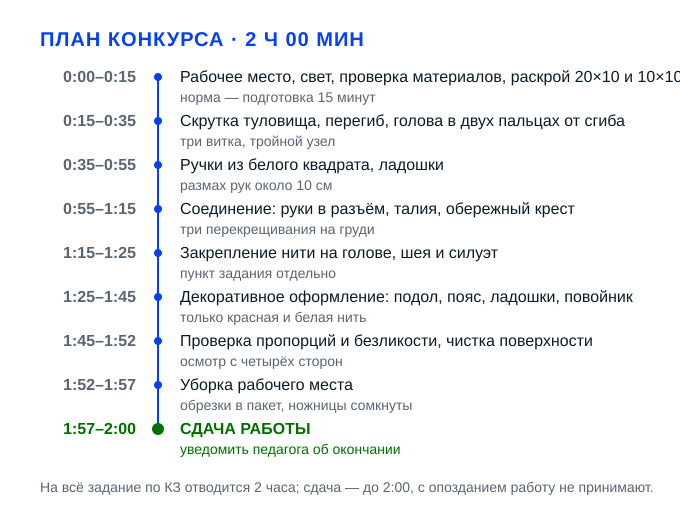
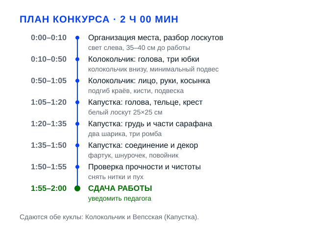
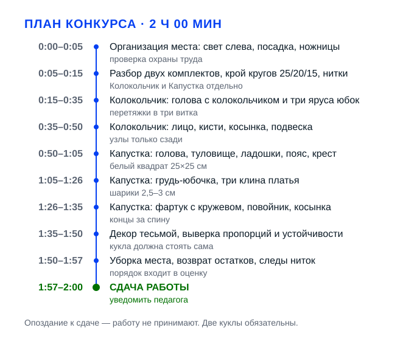

Мастер кукол (ФВ)
Задания ниже — официальные файлы «Абилимпикс» (источник: abilympics-russia.ru), разложенные по категориям. Решения написаны по тексту задания, регламенту и критериям оценки; в них указано, что именно проверяет эксперт.
Школьник
14–16 лет, базовый уровень заданияВ официальном файле категории не разделены отдельными разделами — приводим задание целиком; различия по категориям смотрите в таблице модулей.
Пошаговое решение
Разбор по официальному конкурсному заданию для категории «Школьники»: за два часа нужно изготовить народную лоскутную куклу Кувадку. Работа идёт тремя пунктами подряд — сначала оформляются голова, туловище и ручки, затем элементы соединяются в одну фигуру, и в конце изделие получает декоративное оформление. Материалов немного: цветной лоскут 20×10 см на скрутку туловища, белый квадрат 10×10 см на ручки, белые и красные нитки и ножницы. Игла и клей не используются вообще: форма держится только на плотности скрутки и на перетяжках из трёх витков с тройным узлом, поэтому каждая обмотка должна быть тугой и ровной. В решении разобраны все шаги от раскроя до сдачи, включая традиционные правила куклы: лицо не оформляется, узлы прячутся сзади, а на всё изделие отводится два часа.

Задача 1. Организовать рабочее место и подготовить лоскутыМодуль А · подготовка, около 20 минут из 2 часов
Кукла Кувадка делается без иглы, без клея и почти без инструментов, поэтому вся её геометрия рождается из двух вещей: ровно выкроенного лоскута и туго затянутой нити. Пока лоскуты не выровнены по нити и не проверены по размеру, скрутка неизбежно пойдёт винтом, а голова и талия окажутся на разной высоте. Поэтому первые двадцать минут уходят на свет, посадку, проверку перечня материалов и точный раскрой прямоугольника 20×10 см и квадрата 10×10 см — это то, что потом уже не исправить.
Действие 1.1. Подготовить место, свет и нитки
Шаг 1.1.1
Раскладываем на столе всё, что даёт перечень оснащения для школьника: ножницы, цветной лоскут 20×10 см, белый квадрат 10×10 см, катушку белых ниток и катушку красных. Свет должен падать на работу слева — если лампа или окно справа, правой рукой вы работаете в собственной тени, а намотка требует, чтобы каждый виток был виден. Садимся прямо, прижимаясь к спинке стула, лоскуты держим на расстоянии 35–40 см от глаз и не ближе ладони от края стола, чтобы они не свисали на пол.
Это прямые требования раздела охраны труда конкурсного задания, и они же практические: при намотке в тени легко потерять один виток и получить голову с наклоном. Организованное место и соблюдение правил оценивают в начале работы, поэтому первые минуты стоит потратить на свет и посадку, а не на попытку сэкономить их и потом разбираться, почему кукла кособокая.
Проверьте три вещи: тень от правой руки не падает на лоскут, спина касается спинки стула, лоскуты лежат целиком на столе. Если свет сзади или справа — переставьте стул или поверните корпус так, чтобы рабочая зона была освещена слева, до того как возьмёте ножницы.
Самая частая ошибка — сесть вполоборота к лампе и начать скрутку «как удобно»: первые витки ложатся вслепую, головка получается смещённой набок, и распустить её уже нельзя без потери плотности лоскута. Вторая — держать лоскуты на весу: ткань тянется, и прямоугольник превращается в трапецию.
Эксперт обходит рабочие места в первые минуты и отмечает, соблюдены ли требования охраны труда: освещение, посадка, порядок на столе. Это отдельная строка в оценочном листе, и её видят до того, как появится сама кукла.
Шаг 1.1.2
Проверяем ножницы: лезвия смыкаются по всей длине, без зазубрин и люфта, винт подтянут. Пробуем рез на обрезке ткани — если ножницы мнут край вместо того, чтобы резать, они порвут волокна, и по срезу поползёт бахрома. Кладём ножницы справа от себя, кольцами к работающей руке, лезвиями от корпуса и сомкнутыми: так их берут, не перехватывая, и так они не порежут лоскут, который вы придерживаете левой рукой.
По перечню оснащения ножницы — единственный режущий инструмент на всё задание, и тупой инструмент превращает ровный раскрой в рваный край. Рваный край потом торчит из скрутки и из-под обмотки, а аккуратность исполнения — один из основных критериев. Кроме того, требование «ножницы класть на стол с сомкнутыми лезвиями» прямо записано в инструкции по охране труда.
Ножницы режут бумажную полоску без замятин, лезвия сходятся в одной точке, винт не болтается. Рука берёт инструмент одним движением, не переставляя пальцы: большой и средний в кольцах, указательный на винте.
Работать ножницами с ослабленным винтом: лезвия разъезжаются, и вместо прямой линии получается ступенька. Вторая ошибка — резать кончиками лезвий мелкими «кусающими» движениями: край получается зубчатым, а время уходит вдвое больше.
Эксперт смотрит на организацию места и на то, как участник обращается с инструментом в течение всей работы, а не только в момент раскроя. На этом же этапе он отмечает, нет ли на столе лишних предметов, и делает первую пометку в оценочном листе.
Шаг 1.1.3
Отмеряем нитки заранее, а не в процессе: на голову, на талию, на крест и на декор нужно три-четыре отрезка по 25–30 см. Такой длины хватает, чтобы сделать три витка и тройной узел, не вытягивая нить из катушки на весу. Красную нить откладываем отдельно для обмотки ладошек и декора, белую — для внутренних перетяжек. Отрезаем ножницами, а не отрываем руками и тем более не перекусываем зубами: на конце должен быть ровный срез, иначе нить начнёт распускаться.
Нитка в этой кукле несёт всю конструкцию: скрутка держится только на перетяжках, и если нить короткая, вы будете затягивать узел в натяг, теряя плотность витков. Отдельные отрезки нужны ещё и потому, что обрезанная после узла нить уже не пойдёт на следующий узел, а возиться с катушкой в момент, когда руки заняты скруткой, неудобно. Запрет рвать нить закреплён в инструкции по охране труда.
Отрезки лежат отдельными «лучиками» на салфетке, каждый длиной не меньше двадцати пяти сантиметров, концы ровные. Подёргайте нить за конец: если она распускается на отдельные волокна — она слишком кручёная для узла, лучше взять другой моток.
Нарвать нить руками «чтобы быстрее»: конец лохматится, узел на нём ползёт, и талия развязывается через десять минут после того, как вы её затянули. Вторая ошибка — отмерить нить «на глаз» короче двадцати сантиметров и потом не суметь завязать тройной узел.
Эксперт обращает внимание на аккуратность подготовки: нарезанные заранее нитки читаются как понимание технологии, а катушка, которую участник разматывает зубами, — как её отсутствие.
Шаг 1.1.4
Раскладываем материалы по зонам, чтобы рука находила нужное не глядя: слева цветной лоскут 20×10 и белый квадрат 10×10, в центре рабочая зона размером с ладонь, справа ножницы и нитки, обрезки — в отдельную коробочку или пакет, а не на стол. Такая разметка экономит десятки секунд на каждой операции и, главное, не даёт обрезкам прилипнуть к лицевой стороне будущей куклы.
Обрезки и бахрома — главный источник грязи на готовом изделии: светлая хлопковая ткань липнет к любой нитке, а снять её с уже затянутой скрутки почти невозможно, не размотав обмотку. Порядок в зоне входит в критерий организации работы, который оценивают и в начале, и в конце конкурса.
На столе остаётся только то, что понадобится в следующие пять минут; обрезки и пустые катушки — в пакете. Проверьте ладонью поверхность: на ней не должно быть крошек, ниток и влаги. Если на поверхности осталась влага, лоскут прилипнет к столу и деформируется при скрутке.
Сваливать всё в одну кучу: цветной и белый лоскут перепутываются, обрезки попадают под скрутку, и на готовой кукле появляются светлые волокна, которые уже не убрать. Вторая ошибка — держать обрезки на краю стола, откуда они слетают на пол и потом мешают при уборке.
Эксперт фиксирует порядок на рабочем месте в начале, в середине и в конце задания: чистая зона к финалу — это отдельный балл, который теряют чаще всего именно на обрезках.
Действие 1.2. Выкроить прямоугольник и квадрат точно по размеру
Шаг 1.2.1
Берём цветной лоскут и определяем направление нитей: по кромке нити идут вдоль, поперёк они тянутся заметно слабее. Скрутку всегда катают вдоль длинной стороны 20 см, то есть по направлению долевой нити, — тогда жгут не растягивается и держит форму. Проверяем лоскут на дефекты: дырки, затяжки, пятна, косую полосу — всё это после скрутки окажется на видном месте, а спрятать дефект в жгуте нельзя, он проявится на боковой грани.
Из мятой или перекошенной ткани ровный жгут не получится: скрутка «запоминает» залом и идёт винтом, а винт потом видно по тому, как кукла стоит на столе. К тому же усадка после первой же перетяжки меняет длину, и прямоугольник 20×10 превращается в 19×9,5 со смещённой серединой.
Проведите ладонью по лоскуту: он должен лежать плоско, без волн. Сложите его пополам по длинной стороне — кромки совпадают, углы совпадают, перекоса нет. Если лоскут «пузырится», разгладьте его ладонями от середины к краям.
Взять лоскут, не глядя на направление нитей, и катать жгут поперёк долевой: скрутка выходит рыхлой и к концу задания расползается. Вторая ошибка — не заметить на ткани затяжку, которая после намотки оказывается ровно на груди куклы.
Эксперт проверяет готовую куклу на перекос: если скрутка винтом, это видно сразу, и вопрос «из какого направления нитей вы катали» задают уже на защите.
Шаг 1.2.2
Выравниваем край по нити: надрезаем ткань ножницами на 1–1,5 см и вытягиваем поперечную нить — она оставит за собой дорожку из разреженных волокон. Режем строго по этой дорожке, ведя ножницы всей длиной лезвий и не смыкая их до конца. Получившийся край будет прямым, а угол — ровно девяносто градусов, и именно от него мы будем отмерять двадцать и десять сантиметров.
Ровный край — база всей геометрии: если он косой, то и разметка уйдёт по косой, и прямоугольник получится параллелограммом. Скрутка из параллелограмма даёт перекошенный жгут, у которого один торец выше другого, а значит, голова выйдет наклонённой, а подол — перекошенным. Исправить это на этапе соединения нельзя.
Приложите к вытянутой дорожке линейку: просвета между ней и краем быть не должно. Проверьте углы — сложите лоскут по диагонали, и если при совпадении кромок углы не сходятся, край всё ещё косой. Если дорожка уходит в сторону, выровняйте край ещё раз — это быстрее, чем перекатывать жгут заново.
Резать «примерно по прямой», не вытягивая нить: разница в полсантиметра на этом этапе превращается в сантиметр перекоса на скрутке. Вторая ошибка — рвать ткань по краю, чтобы «получилось ровно по нити»: край растягивается и становится волнистым.
Эксперт смотрит на ровность срезов и на то, обработан ли край: лохматый срез из-под обмотки торчит и сразу бросается в глаза. Косой срез виден по тому, как подол готовой куклы стоит относительно стола.
Шаг 1.2.3
Отмеряем от выровненного края 20 см по длинной стороне и 10 см по короткой, ставим метки портновским мелком или тонким мылом — карандаш и ручка оставляют след, который на светлой ткани потом не отстирать. Через метки проводим две линии и проверяем прямоугольник по диагоналям: у настоящего прямоугольника они равны. Только после этой проверки берём ножницы.
Проверка диагоналей — единственный быстрый способ поймать перекос до раскроя. Размер 20×10 см задан в перечне оснащения не случайно: из него получается жгут высотой около десяти сантиметров после перегиба, то есть кукла в ладонь, а из квадрата 10×10 — руки с размахом примерно в эту же величину, что даёт правильные пропорции.
Обе диагонали одинаковые с точностью до 2–3 мм, обе пары сторон равны, метки видны и не размазаны. Проверьте, что линия разметки идёт по долевой нити, а не поперёк. Проверять лучше на ровной поверхности, положив лоскут на стол, а не держа его на весу.
Размечать на глаз, «чтобы не тратить время»: перекос в сантиметр на скрутке даёт разную толщину половин, и голова сидит криво. Вторая ошибка — размечать карандашом: графит остаётся на ткани и на готовой кукле выглядит как грязь.
Эксперт может попросить показать заготовку до начала сборки: ровный прямоугольник с проверенными диагоналями читается как владение технологией. Особенно если прямоугольник вышел с перекосом хотя бы в полсантиметра.
Шаг 1.2.4
Режем по разметке, держа ножницы вертикально к столу и не поднимая лоскут на весу: ткань должна лежать, а ножницы идти по ней. После раскроя убираем осыпающиеся нити — срезаем бахрому не более двух-трёх миллиметров, но не вытягиваем её: если дёргать, край поползёт дальше и лоскут станет уже заявленного размера. Обрезки сразу убираем в пакет, а не смахиваем на пол.
Бахрома на торце скрутки — то, что потом торчит из-под обмотки и делает куклу неопрятной. Но и слишком усердно обрезать нельзя: осыпавшийся край теряет плотность, и жгут на конце разваливается. Два-три миллиметра — это тот компромисс, при котором срез прячется внутрь при скрутке.
Прямоугольник сложите пополам дважды: стороны совпадают без перекоса, размер по длинной стороне 20 см, по короткой 10 см, допускается отклонение до половины сантиметра. Бахрома по краям не длиннее трёх миллиметров.
Отрезать «с запасом», чтобы потом подровнять: запас уходит в скрутку и делает её толще с одного конца. Вторая ошибка — срезать бахрому, растягивая лоскут в руках: край идёт волной и жгут получается с утолщением.
Эксперт оценивает точность размеров: заготовка, которая заметно отличается от 20×10 см, — первый признак того, что дальше пропорции поплывут. Край, срезанный на косую, даёт на скрутке заметную спираль, и это уже не исправить.
Шаг 1.2.5
Готовим белый квадрат для ручек: проверяем, что это действительно квадрат 10×10, а не прямоугольник — складываем по диагонали, углы должны сойтись точно, и диагонали совпасть. У квадрата, выкроенного по долевой, при складывании в трубочку оба конца ведут себя одинаково, поэтому ладошки выходят симметричными. Кладём квадрат изнанкой вверх, если у ткани есть выраженная лицевая сторона, и убираем с него все нитки и ворсинки.
Квадрат задаёт длину рук: после скрутки в трубочку его сторона становится размахом, то есть примерно десятью сантиметрами. Прямоугольник даст одну руку длиннее другой, и это будет видно на готовой кукле, потому что руки лежат горизонтально и асимметрия сразу читается. Проверка диагоналями занимает десять секунд и снимает половину будущих замечаний.
При складывании по диагонали лоскут ложится ровно, без перекоса, углы сходятся в одну точку. На ощупь квадрат плотный, без истончённых мест, которые разойдутся при натяжении нити. Если квадрат после складывания даёт «язычок» больше двух миллиметров, его лучше перекроить.
Выкроить квадрат «на глаз» из остатка: разница в сантиметр даёт разную длину рук, и куклу приходится переделывать целиком, потому что руки уже вшиты в скрутку перетяжкой. Вторая ошибка — оставить на квадрате бахрому, которая при скатывании оказывается снаружи трубочки.
Эксперт сравнивает концы рук: одинаковый размах и одинаковые ладошки — признак того, что подготовка была точной. Для этого он складывает куклу пополам: концы рук должны совпасть с точностью до нескольких миллиметров.
Задача 2. Оформить голову, туловище и ручкиМодуль А · основная формовка, около 40 минут
Первый пункт хода работы по конкурсному заданию — оформление головы, туловища и ручек. Здесь кукла и появляется: цветной лоскут скатывается в плотный жгут, перегибается пополам, и перетяжка в двух пальцах от сгиба отделяет голову от туловища. Отдельно делается белая трубочка-ручки с перевязанными ладошками. Все перетяжки выполняются по традиции тремя витками и тройным узлом, потому что именно плотность и кратность обмотки держат форму, а не количество узлов.
Действие 2.1. Скатать туловище в плотный жгут
Шаг 2.1.1
Кладём цветной прямоугольник 20×10 см перед собой длинной стороной к себе, лицевой стороной вниз. Подворачиваем обе длинные стороны внутрь примерно на два сантиметра, пряча срезы и бахрому: сначала одну, потом вторую, и прижимаем сгибы ногтем, чтобы они держались. После этого скатываем лоскут от дальней длинной стороны к себе, подтягивая ткань ладонями и не давая складкам собираться в одном месте.
Подвёрнутые края — это то, что отличает аккуратную куклу от мохнатой: срезы уходят внутрь жгута и остаются там навсегда. Скатывать нужно именно от длинной стороны к длинной, потому что так жгут получается длиной двадцать сантиметров и толщиной около двух, а после перегиба пополам даёт куклу высотой в ладонь. Если скатать поперёк, туловище выйдет коротким и толстым, и голова окажется непропорционально большой.
Жгут лежит ровно, сгибы подвёрнутых сторон не видны снаружи, толщина по всей длине примерно одинаковая, длина около двадцати сантиметров. Проведите ладонью по жгуту: бугров и провалов быть не должно. Проверка занимает полминуты и делается до того, как лоскут будет скатан окончательно.
Скатать лоскут «в комок» и потом растянуть: внутри образуются пустоты, жгут пружинит и не держит перетяжку. Вторая ошибка — не подворачивать края: бахрома вылезает наружу по всей длине, и обмотка ложится на неё неровно.
Эксперт смотрит на боковую грань туловища: там не должно быть видно слоёв и торчащих нитей, грань должна быть гладкой и ровной. Гладкая грань получается только при подвёрнутых краях, и он смотрит именно на неё.
Шаг 2.1.2
Уплотняем жгут: кладём его на стол и катаем ладонью от середины к краям, прижимая с умеренной силой, по десять-пятнадцать движений в каждую сторону. Затем берём жгут двумя руками и прокручиваем между ладонями, как скалку, чтобы слои ткани схватились друг с другом. Катать нужно по длине, а не поперёк, иначе жгут начнёт раскручиваться обратно. Следите, чтобы лоскут не сдвигался относительно стола: катать нужно строго по длине жгута.
Прокатка по столу делает то, чего не сделает простое скручивание руками: слои ткани уплотняются и «схватываются», жгут становится упругим и перестаёт пружинить под ниткой. Именно поэтому народная кукла держится без иглы — плотность заменяет шов. Рыхлый жгут под первой же перетяжкой сожмётся, и голова окажется больше туловища.
Нажмите на жгут пальцем: остаётся лёгкая вмятина, которая сразу выравнивается, а не провал. Диаметр одинаковый по всей длине — измерьте в трёх местах и сравните. Торцы не разворачиваются, когда вы держите жгут за середину.
Катать слишком сильно и растянуть лоскут в длину: жгут становится тонким и длинным, кукла получается вытянутой. Вторая ошибка — пропустить этот шаг и сразу перейти к перегибу: рыхлая скрутка разъезжается под обмоткой.
Эксперт проверяет куклу на ощупь и на устойчивость: плотно скатанное туловище стоит вертикально, рыхлое заваливается на бок. Отдельно он смотрит, не блестит ли ткань от чрезмерного натяжения при прокатке.
Шаг 2.1.3
Выравниваем торцы жгута: подрезаем выступающие волокна ножницами на три-четыре миллиметра, не трогая основную толщину. Если один торец получился толще другого, слегка подкручиваем его пальцами, подтягивая край внутрь. После этого находим середину: складываем жгут пополам, не сгибая, а лишь совместив торцы, и прижимаем место сгиба ногтем — останется заметная вмятина, по которой потом легко попасть.
Середина жгута — это будущая макушка, и попасть в неё нужно точно: смещение на сантиметр даёт разную длину половин, и кукла получается с перекошенным подолом. Ровные торцы важны потому, что они станут нижним краем куклы, и любая ступенька на них читается как небрежность. Отмеченная вмятиной середина избавляет от повторных измерений в самый неудобный момент.
Обе половины при складывании совпадают по длине с точностью до пяти миллиметров, торцы ровные, метка середины видна. Проверьте, что после разворота жгут лежит прямо, а не дугой. Метку середины лучше не делать мелком: на цветной ткани её не видно, а на белой она останется.
Отрезать «лишнее» с одного торца, чтобы уравнять длину: жгут становится короче, и пропорции куклы меняются. Вторая ошибка — определять середину на глаз и ошибиться на сантиметр, а потом получить одну половину туловища длиннее другой.
Эксперт позже измерит высоту куклы и соотношение головы и туловища: точная середина — залог того, что пропорции сойдутся. Середина, отмеченная вмятиной, не оставляет следов на ткани.
Шаг 2.1.4
Проверяем жгут на прочность до перегиба: берём его за оба конца и слегка тянем в стороны, затем подбрасываем на ладони. Он должен вести себя как единый шнур — не раскручиваться, не разваливаться на слои, не менять длину. Если край начинает разворачиваться, подкручиваем его в том же направлении, в котором катали, и прижимаем ногтем. Только после этой проверки переходим к формированию головы.
Раскрутка на этом этапе — самая обидная потеря: дальше жгут фиксируется обмоткой, и распустить его, не испортив перетяжку, уже не получится. Проверка занимает полминуты, а спасает весь модуль: туловище — основа, к которой крепятся и руки, и голова, и подол. Если оно поплыло, вся кукла собирается заново.
Жгут держит форму при подбрасывании, торцы не разошлись, длина не изменилась. Положите его на стол и посмотрите вдоль: линия должна быть прямой, без волны и без утолщений. Длину удобно проверять по линейке: после подбрасывания она не должна измениться.
Пропустить проверку и начать перегиб: под натяжением нитки рыхлый конец расходится, и вместо ровного подола получается метёлка. Вторая ошибка — пытаться «спасти» рыхлый жгут, намотав больше витков: обмотка ложится на неровную поверхность и сама становится бугристой.
Эксперт обращает внимание на то, как участник держит заготовку: если жгут раскручивается в руках, это видно и оценивается как нарушение технологии. Раскрученный жгут он отмечает сразу, не дожидаясь, пока появится готовая кукла.
Действие 2.2. Сформировать голову и перетянуть шею
Шаг 2.2.1
Перегибаем жгут пополам по отмеченной середине: сгиб становится макушкой, а два торца — подолом куклы. Складываем не резко, а плавно, придерживая сгиб большим пальцем, чтобы он получился округлым, а не острым углом, — именно округлый сгиб читается как голова. Совмещаем половинки так, чтобы торцы оказались на одном уровне: если один вылез вперёд, подравниваем их, придерживая жгут за середину.
Сгиб — это не просто место перехода, это и есть голова: от его формы зависит, будет ли кукла выглядеть как фигурка или как связанный пучок. Плавный, слегка расправленный сгиб даёт округлую головку нужного объёма, острый — угол, который потом не исправить, потому что ткань уже зажата обмоткой. Ровные торцы важны: по ним судят о симметрии всей фигуры.
Половинки совпадают по длине, торцы на одном уровне, сгиб округлый, без складки-угла. Посмотрите на заготовку сбоку: она должна напоминать перевёрнутую букву U с равными сторонами. Округлость проверяется на ощупь: сгиб должен быть мягким, без острого ребра.
Сложить жгут резко, заломив ткань в острый угол: на голове появляется грань, которая видна при любом освещении. Вторая ошибка — не совместить торцы: кукла получается «на одной ноге», и подол перекошен.
Эксперт смотрит на силуэт: правильная U-образная заготовка с округлой макушкой — это то, что должно быть видно ещё до обмотки. Резкий залом на макушке заметен даже на фотографии работы.
Шаг 2.2.2
Отступаем от сгиба примерно два пальца — это и есть высота головы. У взрослого это три-три с половиной сантиметра, у школьника чуть меньше, поэтому ориентируйтесь на свою руку: два пальца, приложенные к сгибу поперёк жгута. Зажимаем заготовку левой рукой у самого сгиба, большим пальцем фиксируя границу головы, а правой готовим нитку. Отмерять «на глаз» здесь нельзя: вся пропорция куклы держится на этом расстоянии.
Голова в народной кукле — примерно четверть высоты фигуры, и два пальца от сгиба дают именно такое соотношение при жгуте из лоскута 20×10 см. Если отступить больше, голова становится огромной, и куклу уже не спасти: обмотку не сдвинуть без потери плотности. Меньший отступ даёт «безголовую» фигурку, у которой не читается лицо-заготовка.
Приложите два пальца поперёк жгута сразу под сгибом — верхняя граница обмотки должна приходиться ровно под ними. Проверьте симметрию: расстояние от сгиба до линии обмотки одинаково слева и справа. Отступ удобно проверять, приложив два пальца второй руки: они должны заполнить всё расстояние.
Отступить от сгиба на ширину ладони: голова получается в треть куклы, и вся фигура выглядит как гриб. Вторая ошибка — держать заготовку за середину, а не у сгиба: при натяжении нитки голова сползает, и отступ уменьшается незаметно для вас.
Эксперт проверяет пропорции линейкой или на глаз: отношение головы к общей высоте — один из самых заметных признаков качества. При грубом нарушении голову приходится перетягивать заново, а это потеря времени.
Шаг 2.2.3
Перетягиваем шею: берём красную или белую нитку, прижимаем конец большим пальцем к заготовке чуть ниже намеченной линии и делаем три плотных витка подряд, укладывая их вплотную друг к другу, а не с промежутками. Каждый виток натягиваем равномерно, ведя нить от себя и придерживая заготовку, чтобы жгут не проворачивался. Три витка — не случайность, а традиция: в народной кукле число три считается обережным, поэтому и витков, и узелков делают по три.
Плотная обмотка в три витка держит голову без клея и без иглы — это и есть технология изготовления, по которой оценивают работу. Свободные витки с промежутками не стягивают жгут: голова начинает болтаться, и кукла теряет форму через час. Кратность трём важна ещё и с практической стороны: три витка дают ровную «шейку» нужной толщины, тогда как два оставляют просвет, а четыре делают перетяжку грубой.
Витки лежат вплотную, ровно, без перехлёстов и без просвета ткани между ними. Заготовка в месте обмотки стянута так, что жгут не проворачивается, а сама обмотка не сползает вниз при лёгком потягивании за голову.
Намотать витки с промежутками «чтобы не перетянуть»: обмотка не держит, и голова съезжает набок уже на этапе соединения. Вторая ошибка — натягивать нить так, что она врезается в ткань и рвёт волокна: на голове появляется вмятина, которая не расправится.
Эксперт смотрит именно на шейную перетяжку: три ровных витка без просветов — это тот элемент, который отличает работу по технологии от работы «как вышло».
Шаг 2.2.4
Завязываем тройной узел: складываем концы нити вместе, делаем первый узел и затягиваем его вплотную к виткам, затем второй поверх первого и третий поверх второго, каждый раз подтягивая в одну точку. Узел должен лечь на затылочную сторону — туда, где он не бросается в глаза. Концы обрезаем ножницами, оставляя три-четыре миллиметра, и прячем их под обмотку или прижимаем к ткани.
Тройной узел — это страховка: обычный двойной на скользкой хлопковой нити распускается под натяжением, а куклу будут держать за голову при примерке и переносе. Обрезанные коротко концы не цепляются за ткань и не портят силуэт. Узел на затылке — вопрос аккуратности: спереди кукла должна выглядеть чисто, потому что её оценивают в том числе и визуально.
Узел затянут так, что витки не ослабли, концы не длиннее пяти миллиметров и не торчат в стороны. Потяните за голову и за подол в разные стороны: перетяжка не должна ползти. Узел не должен попадать на линию обмотки: иначе он раздвинет витки и появится просвет.
Завязать один узел и просто дёрнуть: через несколько минут он распустится, и вся работа по формовке головы пропадёт. Вторая ошибка — оставить длинные концы нити: они путаются с руками и видны на готовой кукле как «хвостики».
Эксперт проверяет надёжность крепления, аккуратно взяв куклу за голову: если обмотка ползёт под пальцами, это фиксируется как дефект соединения. Он также проверяет, не осталось ли на нити узлов-«барашков».
Шаг 2.2.5
Расправляем голову: большим и указательным пальцами проходим по кругу под обмоткой, подтягивая ткань изнутри наружу, чтобы голова стала округлой, а не плоской. Разглаживаем складки, которые собрались у сгиба, распределяя их равномерно по всей поверхности. Если из-под обмотки выглядывает уголок подвёрнутого края, аккуратно заправляем его внутрь тупым концом ножниц или пальцем, не разматывая витков.
После перетяжки ткань всегда собирается в складки с одной стороны — это следствие неравномерного натяжения, и именно расправление превращает заготовку в голову. Плоская, с заломами голова читается как брак формовки, даже если обмотка идеальна. Заправленные внутрь уголки — это чистота исполнения, которую видно на фотографии работы.
Голова круглая при осмотре с четырёх сторон, складки распределены равномерно, уголков ткани и ниток не видно. Проверьте на просвет: на поверхности не должно быть тёмных полос-заломов. Особенно внимательно осмотрите сторону, где ткань легла складкой при перегибе.
Оставить складки «как легли»: с одной стороны голова получается плоской, и кукла выглядит перекошенной. Вторая ошибка — расправлять, дёргая за ткань с силой: обмотка ослабнет, и всё придётся перетягивать заново.
Эксперт осматривает голову со всех сторон, в том числе сверху: именно там видны нерасправленные складки и торчащие уголки. Нерасправленные складки он отмечает как дефект формовки головы.
Действие 2.3. Сделать ручки и перевязать ладошки
Шаг 2.3.1
Берём белый квадрат 10×10 см и кладём изнанкой вверх. Загибаем две противоположные стороны к центру примерно на полтора-два сантиметра — получается фигура, похожая на распахнутое окно. Сгибы проглаживаем ногтем или ребром ладони, чтобы они держались и не разворачивались при скатывании. Загибать нужно именно противоположные стороны, а не соседние: только тогда при складывании пополам срезы уйдут внутрь.
Подвёрнутые к центру края — это то, что спрячет бахрому внутри трубочки: на белой ткани любой торчащий срез виден как тёмная полоска. Проглаженные сгибы важны потому, что трубочку придётся катать по столу, и незаглаженный край развернётся в самый неподходящий момент. Соседние стороны загибать бесполезно: они не спрячутся при скрутке.
Загнутые полосы одинаковой ширины, сгибы держат форму и не отворачиваются, если поднять лоскут за угол. Проверьте симметрию: расстояние от края до сгиба одинаково с обеих сторон. Проглаживать сгибы удобно о край стола, но не о ножницы — они оставят след.
Загнуть края на разную ширину: трубочка получается с утолщением посередине, и ладошки выходят разного размера. Вторая ошибка — загнуть слишком много, оставив узкую полосу: трубочка получается тонкой и не держит форму.
Эксперт оценивает аккуратность рук: ровная трубочка без видимых слоёв — признак того, что заготовка была сложена правильно. Он также проверяет, не смещена ли загнутая полоса к одному краю.
Шаг 2.3.2
Складываем лоскут пополам по загнутым сторонам, совмещая сгибы, и скатываем в трубочку от одного края к другому, подтягивая ткань пальцами и следя, чтобы подвёрнутые срезы оставались внутри. Направление катания — поперёк загнутых полос, тогда трубочка получается ровной, а слои ложатся друг на друга без перекоса. Катаем не торопясь, по одному обороту, прижимая ладошкой к столу.
Трубочка — это руки куклы, и её диаметр должен быть примерно вдвое меньше диаметра туловища, иначе руки выглядят как брёвна. Скатывание поперёк загнутых полос гарантирует, что срезы окажутся в глубине, а не на поверхности: именно так делают народные куклы, у которых ручки-«конфетка» не осыпаются годами. Ровность слоёв влияет и на то, как ляжет обмотка ладошек.
Трубочка ровная по всей длине, срезов и бахромы на поверхности нет, при сжатии пальцами она пружинит, а не сминается в лепёшку. Диаметр проверьте в трёх местах — разница не больше миллиметра. Слои не должны расходиться, если подуть в торец трубочки.
Скатать трубочку «в руках», не прижимая к столу: она выходит рыхлой и разворачивается, как только отпустить. Вторая ошибка — оставить срез снаружи: на белой ткани он виден сразу и оценивается как небрежность.
Эксперт поворачивает куклу и смотрит на руки с обеих сторон: слои ткани не должны расходиться, поверхность должна быть гладкой. Рыхлая трубочка видна по тому, как она прогибается под пальцами.
Шаг 2.3.3
Катаем готовую трубочку по столу ладонью, выравнивая диаметр и уплотняя слои, по десять-двенадцать движений. Затем проверяем длину: она должна быть около девяти-десяти сантиметров, то есть почти равна стороне квадрата. Если трубочка получилась заметно короче, значит при скатывании ткань ушла в толщину — такую заготовку лучше перекатать сразу, пока она не вставлена в туловище.
Уплотнение по столу делает трубочку упругой: при перевязке ладошек нить не проваливается между слоями, а ложится ровным кольцом. Длина трубочки задаёт размах рук, а он должен соотноситься с высотой куклы примерно как три к четырём — при нарушении этого отношения фигурка выглядит или короткорукой, или с непомерно длинными руками.
Трубочка упругая, длина девять-десять сантиметров, диаметр одинаковый, концы ровные и не развёрнутые. Положите её на стол: она должна лежать прямо, без дуги. Катать лучше от середины к концам, тогда трубочка не вытянется в одну сторону.
Растягивать трубочку за концы, чтобы «догнать» длину: слои разъезжаются, и внутри образуется пустота. Вторая ошибка — оставить дугу: руки у готовой куклы будут смотреть вниз или вверх, а не в стороны.
Эксперт прикладывает линейку к рукам: одинаковый размах слева и справа — обязательное условие, и он проверяется на готовой кукле. Дуга выдаёт неравномерное скатывание, и на готовой кукле она видна сразу.
Шаг 2.3.4
Определяем положение ладошек: отступаем от каждого конца полтора-два сантиметра и слегка сплющиваем кончик пальцами, чтобы он стал похож на ладонь, а не на срез трубочки. Сплющивать нужно поперёк трубочки, придавая концу плоскую форму. Отмечаем место перевязки ногтем — получится вмятина, по которой легко попасть ниткой. Если трубочка слишком толстая, кончик сплющивают сильнее, но не до потери объёма.
Обозначенная ладошка — это то, что читается в кукле как рука: без него трубочка остаётся трубочкой, и фигурка выглядит незаконченной. Отступ в два сантиметра подобран так, чтобы ладонь была соразмерна голове: при большем отступе руки становятся «обрубками», при меньшем — на концах появляются неопрятные узелки.
Концы трубочки сплющены симметрично, вмятины от ногтя находятся на одинаковом расстоянии от краёв — проверьте, приложив трубочку к линейке или к краю стола. Проверять лучше, положив трубочку на лист бумаги и отметив карандашом оба места.
Сплющить концы на разном расстоянии: одна ладошка больше другой, и это видно на готовой кукле, потому что руки лежат горизонтально. Вторая ошибка — мять кончик слишком сильно: он теряет объём и выглядит раздавленным.
Эксперт сравнивает ладошки: они должны быть одинаковыми по размеру и находиться на одной линии. Разная длина ладошек — самая частая ошибка на этом этапе.
Шаг 2.3.5
Перевязываем ладошки: прижимаем конец красной нити к трубочке у намеченной вмятины, делаем три плотных витка вплотную и завязываем тройной узел, как на шее. Повторяем то же на втором конце, отмеряя от края такое же расстояние. Концы нити обрезаем до трёх миллиметров и прячем под витки. Нитку натягиваем так, чтобы трубочка стянулась, но не перерезалась.
Перевязка превращает трубочку в руки: она фиксирует слои ткани и не даёт им разворачиваться, когда руки будут вставлены в туловище и зажаты перетяжкой талии. Традиционные три витка и тройной узел здесь не только дань обряду: три витка дают ровное кольцо нужной толщины, а тройной узел не распускается при натяжении. Красная нить на белой ткани — самый читаемый акцент во всей кукле.
Обе ладошки перевязаны на одинаковом расстоянии от края, витки ровные и без просветов, узлы не видны с лицевой стороны. Потяните за кончик трубочки: он не должен выскальзывать из-под обмотки. Витки должны быть видны как ровное кольцо, а не как намотанный комок.
Перевязать один конец и забыть про второй: кукла получает одну руку оформленной, а вторую — просто срезом, и это сразу видно. Вторая ошибка — намотать витки слабо, «чтобы не помять»: слои разойдутся, и кончик руки распушится.
Эксперт осматривает ладошки вблизи: ровные витки и аккуратные узелки — это те детали, по которым судят о владении техникой намотки. Он проверяет и то, не перетянута ли трубочка до потери объёма.
Задача 3. Соединить элементы в одну фигуруМодуль Б · соединение, около 25 минут
Второй пункт хода работы — соединение элементов. Готовая трубочка-ручки вставляется в разъём между половинками скрутки под головой, после чего талия перетягивается, а на груди укладывается обережный крест из трёх перекрещиваний. Именно здесь кукла перестаёт быть набором заготовок: перетяжка талии зажимает руки, крест держит их от проворота, а закреплённая на голове нить фиксирует всю конструкцию сверху.
Действие 3.1. Вставить ручки в туловище
Шаг 3.1.1
Берём туловище в левую руку головой вверх и разводим пальцами половинки скрутки под шейной перетяжкой — между ними образуется щель шириной примерно в сантиметр. Вводим трубочку-ручки в эту щель горизонтально, по центру, так, чтобы середина трубочки оказалась под обмоткой шеи, а концы легли на половинки скрутки снаружи. Вдавливать не нужно: руки должны лечь свободно, а держать их будет перетяжка талии.
Место соединения выбрано не случайно: под головой скрутка ещё не стянута, и именно там есть разъём, в который руки входят без иглы и клея. Если вставить трубочку выше, она разопрёт шею и испортит форму головы, если ниже — руки окажутся на середине туловища, и фигура потеряет пропорции. Середина трубочки под обмоткой — это условие симметрии: концы автоматически выходят одинаковой длины.
Трубочка держится в разъёме сама, не выпадая при лёгком наклоне куклы, середина приходится точно под шейной обмоткой, концы лежат на половинках скрутки, а не торчат вперёд или назад. Проверку делайте до обмотки талии, пока трубочку ещё можно сдвинуть без следа.
Протолкнуть руки силой, раздвигая скрутку до разрыва слоёв: жгут теряет плотность, и потом талия не стянет его ровно. Вторая ошибка — вставить трубочку не по центру: одна рука выходит длиннее другой, и исправить это можно только полной переборкой.
Эксперт смотрит на линию плеч: она должна быть горизонтальной и проходить сразу под головой, а не на уровне груди. Он может попросить показать место ввода рук, чтобы убедиться в правильной последовательности.
Шаг 3.1.2
Выравниваем руки: держим куклу перед собой на уровне глаз и проверяем, что концы трубочки находятся на одном расстоянии от середины фигуры. Если один конец выше другого, поворачиваем трубочку вокруг оси на несколько градусов и снова проверяем — при правильном вводе она садится ровно. Длину контролируем от края стола или от вертикальной оси куклы, а не на глаз по диагонали.
Симметрия рук — первое, что замечает эксперт, и первое, что видит любой зритель: горизонтальная линия плеч держит всю фигуру. Перекос даже в полсантиметра читается как небрежность, потому что руки длинные и концы разносятся далеко от оси. Правильно вставленная трубочка выравнивается поворотом, а не подтягиванием за конец, которое растягивает ткань.
Оба конца рук одинаково удалены от оси, линия плеч горизонтальна, трубочка не выпирает вперёд. Приложите к рукам край линейки — он должен лечь параллельно столу, если кукла стоит прямо. Смотреть нужно строго спереди, иначе перспектива искажает линию плеч.
Тянуть за длинный конец, чтобы уравнять: трубочка выскальзывает из разъёма и растягивается. Вторая ошибка — оставить перекос «потом поправлю»: после перетяжки талии руки уже не сдвинуть, они зажаты намертво.
Эксперт при осмотре первым делом проверяет линию плеч — это самый быстрый способ оценить, аккуратно ли сделано соединение. Перекос в сантиметр он отмечает как ошибку соединения, а не декора.
Шаг 3.1.3
Проверяем посадку рук до обмотки: слегка наклоняем куклу влево и вправо, смотрим, не выскальзывает ли трубочка. Затем прижимаем её пальцем к скрутке и смотрим, не топорщатся ли концы вверх. Руки должны лежать вдоль плеч, чуть опускаясь к ладошкам, — так они читаются как руки, а не как перекладина. Если трубочка сидит глубоко и концы смотрят вверх, слегка выдвигаем её вперёд и поворачиваем.
Посадка определяет силуэт: чуть приподнятые кверху концы дают фигуру с «поднятыми руками», а это уже другой образ, чем спокойно опущенные руки Кувадки. Проверка на наклон важна потому, что руки держатся только натяжением талии: если трубочка сидит неплотно, после обмотки она провернётся, и кукла получится с одной рукой вперёд, другой назад.
При наклоне куклы трубочка остаётся в разъёме, концы лежат ровно, не задираются вверх и не провисают вниз больше чем на полсантиметра. Середина трубочки не выходит из-под шейной обмотки. Если трубочка выпадает, значит она вставлена выше разъёма, а не в него.
Оставить руки «как встали»: после обмотки они фиксируются именно в этом положении, и перекос становится постоянным. Вторая ошибка — выдвинуть трубочку слишком далеко вперёд: она перестаёт опираться на скрутку и болтается.
Эксперт проверяет, держатся ли руки без дополнительного крепления: у настоящей Кувадки они держатся только на перетяжках, и это признак правильной сборки.
Действие 3.2. Перетянуть талию и уложить обережный крест
Шаг 3.2.1
Перетягиваем талию: берём новую нитку, прижимаем конец к скрутке под руками и делаем два-три плотных витка вплотную, стягивая обе половинки жгута вместе с трубочкой рук. Талию располагаем примерно на треть ниже рук — там, где у фигурки естественно приходится пояс. Каждый виток натягиваем равномерно, придерживая куклу за голову, чтобы трубочка не провернулась в момент затяжки.
Перетяжка талии — главный силовой элемент всей куклы: она зажимает руки в разъёме и одновременно формирует фигуру, отделяя «грудь» от подола. Пока талия не затянута, руки держатся только за счёт трения, и любое движение их смещает. Положение на трети ниже рук даёт те самые пропорции народной куклы, в которых голова и грудь занимают верхнюю часть, а подол — нижнюю.
Талия стянута так, что половинки жгута сомкнулись, а трубочка рук зажата и не двигается при потягивании за конец. Витки ровные, без перехлёстов, на одном уровне по всей окружности. Затягивать нужно постепенно: сначала один виток, потом остальные, каждый раз подтягивая.
Затянуть талию слишком высоко, под самые руки: грудь исчезает, и фигура становится «бесшейной». Вторая ошибка — намотать витки на разной высоте: пояс получается косым, и кукла заваливается на одну сторону.
Эксперт проверяет пояс на ровность и на то, держат ли руки: именно талия отвечает за целостность фигуры. Он также смотрит, не сминается ли подол под перетяжкой.
Шаг 3.2.2
Укладываем обережный крест: не обрезая нить после талии, ведём её по диагонали от левого бедра через грудь к правому плечу, затем по второй диагонали — от правого бедра к левому плечу, и повторяем этот путь ещё два раза, чтобы получилось три перекрещивания. Каждый проход прижимаем пальцем в точке пересечения на груди, чтобы нить не съезжала, а линии ложились одна поверх другой ровно, без сдвига.
Крест на груди — традиционный элемент Кувадки, и одновременно он выполняет работу: три перекрещивания притягивают трубочку рук к туловищу и не дают ей проворачиваться. Кратность три взята из традиции, где число три считалось обережным, но она же даёт и нужную плотность: два прохода оставляют нить подвижной, четыре — утолщают грудь и ломают силуэт. Симметричный крест читается как знак, косой — как ошибка.
Три перекрещивания видны отчётливо, лучи креста симметричны, точка пересечения находится по центру груди. Нить не провисает и не врезается в ткань так, чтобы делить голову. Симметрия проверяется по расстоянию от точки пересечения до каждого плеча.
Вести нить от плеча к бедру, не придерживая точку пересечения: крест съезжает набок, и симметрии уже не вернуть. Вторая ошибка — сделать два прохода вместо трёх: крест получается слабым, и руки начинают гулять.
Эксперт осматривает грудь куклы: симметричный крест из трёх перекрещиваний — обязательный элемент, пропуск которого сразу виден. Косой крест читается сразу, потому что его лучи уходят в сторону подола.
Шаг 3.2.3
Заканчиваем крест тройным узлом на талии сбоку или сзади: складываем концы вместе, завязываем три узла подряд, подтягивая каждый в одну точку, и обрезаем концы до трёх-четырёх миллиметров. Узел должен лечь так, чтобы его не было видно спереди: сдвигаем его на боковую грань или под обмотку. Если нить после креста осталась длинной, не обрезаем её под корень — оставляем два-три сантиметра и прячем под витки талии.
Тройной узел держит всю намотку: без него крест постепенно ослабнет, и руки снова начнут двигаться. Место узла — вопрос чистоты работы: узел на видном месте портит силуэт и оценивается как небрежность. Спрятанные концы не цепляются за одежду и не путаются при переносе куклы, а её будут брать в руки на оценку не один раз.
Узел затянут, концы короче пяти миллиметров, с лицевой стороны ничего не торчит. Потяните куклу за руки в стороны: крест и талия держат, нить не ползёт. Проверьте пальцем, что узел не выступает над поверхностью ткани больше чем на миллиметр.
Оставить длинные концы: они видны на кукле как «усы» и путаются с обмоткой рук. Вторая ошибка — завязать один узел: он развяжется при первом же осмотре, и работа по соединению распустится. Третья ошибка — обрезать концы под самое основание узла: он распустится при первом осмотре.
Эксперт проверяет изнанку и боковые грани: аккуратно спрятанный узел — признак того, что участник думает о виде изделия со всех сторон. Скрытый узел он считает признаком аккуратности.
Шаг 3.2.4
Проверяем собранную фигуру на прочность и симметрию: ставим куклу на стол, смотрим, стоит ли она ровно, затем берём за голову и слегка покачиваем — руки не должны проворачиваться, крест не должен смещаться. Проверяем линию плеч, положение талии и симметрию креста, осматривая куклу с четырёх сторон по кругу. Если что-то поехало, исправляем сейчас, пока не началось декоративное оформление.
Это последняя точка, где соединение можно поправить малой кровью: после декора обмотки придётся снимать, а вместе с ними уйдёт и плотность намотки. Круглый осмотр нужен потому, что спереди всё может выглядеть безупречно, а сзади крест окажется перекошенным или узел вылез на видное место. Устойчивость куклы на столе — косвенный, но быстрый признак того, что жгут плотный и талия затянута правильно.
Кукла стоит на столе без поддержки, силуэт симметричен с четырёх сторон, плечи горизонтальны, талия на одном уровне, крест ровный. При покачивании за голову ничего не смещается. Осмотр удобно вести по часовой стрелке, поворачивая куклу на подставке.
Пропустить круговой осмотр и увидеть перекос только на сдаче: исправлять уже поздно, а замечание зафиксировано. Вторая ошибка — поправлять форму, дёргая за подол: жгут растягивается, и низ куклы становится волнистым.
Эксперт обходит куклу вокруг и оценивает её как готовую фигуру: на этом этапе видно, собрана ли она по технологии или собрана «на глазок». Он смотрит на куклу и в профиль, и со спины.
Действие 3.3. Закрепить нить на голове и обозначить шею
Шаг 3.3.1
Закрепляем нить на голове так, как требует конкурсное задание: обматываем голову двумя-тремя витками по окружности чуть выше шейной перетяжки и завязываем тройной узел на затылке. Если голова после формовки сидит неплотно, витки ведём с лёгким натяжением, стягивая ткань к центру. Концы обрезаем и прячем. Узел обязательно оставляем сзади: спереди головы не должно быть ничего лишнего.
В конкурсном задании этот пункт выделен отдельно — «закрепите нить на голове куклы», и он закрывает конструкцию: голова перестаёт «кивать» на шейной перетяжке, а ткань не расправляется обратно после того, как вы её отформовали. Обмотка головы одновременно обозначает традиционный повойник, то есть элемент, который в народной кукле соответствует головному убору.
Голова держится плотно, при покачивании куклы не смещается относительно туловища, витки лежат ровно, узел на затылке не виден спереди. Обмотка не пережимает голову так, чтобы на ней появилась вмятина.
Натянуть витки слишком сильно: голова сплющивается, и вместо округлой формы получается «таблетка». Вторая ошибка — завязать узел спереди: он перекрывает центр головы и сразу портит вид. И третья — обмотать голову так, что она становится уже плеч: фигура выглядит как гриб.
Эксперт смотрит на голову с четырёх сторон: обмотка должна быть ровной, а форма головы — сохранившейся. Он проверяет и то, что обмотка не закрывает макушку полностью, иначе голова теряет объём.
Шаг 3.3.2
Обозначаем шею и плечи: подтягиваем ткань у основания головы так, чтобы между головой и линией плеч появился заметный переход шириной примерно в полсантиметра. Проходим пальцами по кругу, расправляя складки вниз, к талии, и убирая заломы, которые могли появиться при соединении. Если ткань у шеи собралась в жгут, разводим её в стороны и прижимаем к туловищу.
Шея — это то, что превращает две скрутки в фигуру: без перехода голова выглядит приставленной к туловищу шаром. Кроме того, расправленная ткань у основания головы нужна для крепления декоративных элементов: косынка или обмотка лягут ровно только на гладкую поверхность, а на заломе они перекосятся.
Переход от головы к туловищу читается, складки распределены равномерно, заломов у шеи нет. Проверьте, что голова не наклонена ни вперёд, ни назад — ось куклы вертикальна. Смотреть лучше в профиль: там переход от головы к туловищу виден отчётливее всего.
Оставить залом у шеи: на него потом ляжет декор, и он перекосится. Вторая ошибка — растянуть ткань, подтягивая её кверху: половинки скрутки разойдутся, и руки ослабнут. Если тянуть ткань кверху, половинки скрутки расходятся и руки ослабнут.
Эксперт осматривает силуэт в профиль: вертикальная ось и обозначенная шея — признаки аккуратной сборки. Затем он смотрит куклу спереди, чтобы убедиться, что ось не наклонена.
Шаг 3.3.3
Проверяем голову на устойчивость обмотки и убираем следы работы: срезаем торчащие нитки, вытягиваем из ткани случайные волокна, проходим по всей кукле липкой лентой или просто ладонью, чтобы снять пыль и обрезки. Осматриваем изнанку и боковые грани — там чаще всего остаются хвостики нити от узлов. Куклу держим за туловище, а не за руки: руки держатся на перетяжке и при неаккуратном обращении проворачиваются.
Обмотка головы закрывает соединение, и именно она первой попадает под взгляд эксперта при оценке аккуратности. Случайные волокна на светлой ткани выглядят как дефект, хотя появляются просто от работы: снять их — дело десяти секунд, а замечание за неопрятность остаётся. Проверка боковых граней нужна потому, что куклу будут осматривать в том числе в развёрнутом виде.
На поверхности нет торчащих нитей, обрезков и ворса, узлы спрятаны, обмотка головы ровная. Кукла выглядит законченной с любого ракурса, без «черновых» мест. Обрезки удобно снимать липкой лентой, намотанной на палец липкой стороной наружу.
Оставить хвостики ниток у узлов: они видны на белой и цветной ткани и читаются как небрежность. Вторая ошибка — таскать куклу за руки, проверяя прочность: трубочка проворачивается, и крест на груди съезжает.
Эксперт берёт куклу в руки и осматривает со всех сторон: чистота поверхности — часть оценки качества изделия. Он обращает внимание и на то, нет ли на ткани затяжек от неаккуратного обращения.
Задача 4. Оформить куклу декоративно и сдать работуМодуль В · декор и сдача, около 30 минут
Третий пункт хода работы — декоративное оформление изделия, а после него уборка места и уведомление педагога об окончании, как требует последовательность выполнения задания. Декор в Кувадке не приклеивается и не пришивается: он делается теми же нитями, что и вся кукла, — обмотками, поясом, кольцами на ладошках. Здесь же решается, будет кукла девочкой или мальчиком: у мальчика концы скрутки обматываются яркой ниткой и превращаются в ноги.
Действие 4.1. Украсить куклу нитяными обмотками
Шаг 4.1.1
Оформляем подол: нижние торцы скрутки обматываем красной нитью на высоту полутора-двух сантиметров, укладывая витки вплотную друг к другу по всей окружности каждой половинки. Обмотку ведём от края вверх, придерживая первый виток большим пальцем, — так она не сползает. Заканчиваем тройным узлом с внутренней стороны подола и прячем концы под витки. Обмотку удобно вести, положив куклу на стол и поворачивая её, а не держа на весу.
Подол — самая заметная часть куклы, и именно там собирается вся бахрома от раскроя: обмотка закрывает торцы и превращает их в аккуратный край. Красный цвет в традиционной кукле — цвет оберега, поэтому обмотка красной нитью здесь не только декор, но и дань технологии. Плотные витки дополнительно стягивают ткань, и подол перестаёт разворачиваться при переносе.
Витки закрывают торец полностью, бахрома не торчит, обмотка на обеих половинках начинается на одной высоте. Проверьте, что подол стал плотнее: при сжатии пальцами он не разворачивается. Бахрому проверяйте, посмотрев на подол снизу, против света.
Обмотать только одну половинку скрутки: кукла получается с «одной ногой обутой», и асимметрия бросается в глаза. Вторая ошибка — намотать витки с промежутками, через которые видна бахрома. Третья — намотать слишком высоко и закрыть половину подола.
Эксперт осматривает подол снизу и сбоку: ровная обмотка на обеих половинках — признак продуманного декора. Он также смотрит, не съехала ли обмотка на боковую грань скрутки.
Шаг 4.1.2
Делаем пояс: поверх талии, чуть ниже креста, укладываем два-три витка красной нитью, ведя её в том же направлении, что и основную перетяжку. Конец закрепляем тройным узлом сзади или сбоку, а свободные концы оставляем длиной четыре-пять сантиметров: они читаются как кисточки пояса. Если концы не нужны, обрезаем их до трёх миллиметров и прячем под витки.
Пояс визуально отделяет верх куклы от подола и делает силуэт более читаемым: без него фигура выглядит слитным столбиком. Кисточки из концов нити — традиционная деталь народного костюма, и они дают тот самый декоративный эффект, ради которого в задании выделен отдельный пункт. Узел сзади — потому что передняя часть должна оставаться чистой.
Пояс лежит на одном уровне по всей окружности, не перекрывает крест на груди, кисточки одинаковой длины. Узел не виден спереди и не топорщится сбоку. Проверьте, что кисточки не путаются с ладошками и не заходят на крест.
Положить пояс поверх креста: он перекрывает главный декоративный элемент, и кукла теряет свой знак. Вторая ошибка — затянуть пояс так, что он сминает талию и фигура становится тонкой в поясе, как песочные часы.
Эксперт оценивает композицию: пояс и крест не должны конкурировать, каждый элемент должен читаться отдельно. Слишком толстый пояс он отмечает как перегрузку декора.
Шаг 4.1.3
Оформляем ладошки окончательно: если при перевязке остались длинные концы, подрезаем их, а поверх витков на ладошках укладываем ещё один-два витка красной нити так, чтобы получилось ровное кольцо-манжета. Витки прижимаем друг к другу и закрепляем маленьким тройным узлом снизу ладошки, где его не видно. Следим, чтобы на обеих руках обмотка была одинаковой толщины.
Манжеты на ладошках — та деталь, которая делает руки законченными: без них белая трубочка выглядит заготовкой. Симметрия обмотки важна потому, что руки лежат горизонтально, и любая разница в толщине сразу заметна. Узел снизу ладошки прячется при любом ракурсе осмотра, а витки красной нити поддерживают общий цветовой ритм куклы.
Обмотки на обеих ладошках одинаковой толщины и на одинаковом расстоянии от кончика, узлы не видны сверху. Проверьте, что руки не стали заметно короче из-за обмотки. Манжеты не должны закрывать больше трети длины трубочки.
Намотать манжету только на одну руку или сделать её заметно толще: кукла выглядит асимметричной. Вторая ошибка — затянуть витки так, что кончик руки сморщивается в комок. Третья ошибка — завязать узел сверху: он сразу виден на белой ткани.
Эксперт сравнивает ладошки, держа куклу на уровне глаз: одинаковые манжеты — признак точной работы. Он также оценивает, не перекрывают ли манжеты сплющенную ладошку.
Шаг 4.1.4
Если делаем куклу-мальчика, оформляем ноги: у каждой половинки скрутки отступаем от торца примерно треть высоты подола и обматываем это место яркой ниткой в три витка, плотно стягивая. Получается разделение на две ноги с обозначенной «ступнёй». Обмотку закрепляем тройным узлом с внутренней стороны и прячем концы. Если задумана кукла-девочка, этот шаг пропускаем и оставляем подол цельным.
В конкурсном задании прямо сказано, что кукла-девочка легко превращается в мальчика, если на концах скрутки сделать обмотку яркой ниткой, — это ноги. Владение обоими вариантами показывает, что участник понимает логику конструкции, а не повторяет одну заученную последовательность. Обмотка на трети высоты даёт пропорциональные ноги, при обмотке у самого торца ноги получаются короткими и фигура «садится».
Ноги обозначены на одинаковой высоте, обмотки плотные и ровные, кукла устойчиво стоит на двух «ступнях». Если делали девочку — подол цельный, без лишних обмоток. Проверьте, что кукла стоит на обеих «ступнях», а не заваливается вперёд.
Обмотать ноги на разной высоте: кукла стоит криво, и это видно на столе. Вторая ошибка — обмотать слишком туго у самого торца: ткань собирается в узел, и «ступня» получается больше головы. Третья ошибка — смешать признаки: обмотать ноги и одновременно надеть повойник девочки.
Эксперт обращает внимание на то, какой образ выбран и последователен ли он: смешение признаков девочки и мальчика в одной кукле читается как ошибка. Последовательность образа он оценивает вместе с рассказом о работе.
Шаг 4.1.5
Оформляем голову: поверх обмотки укладываем повойник — два-три витка красной нити по окружности головы чуть выше линии шеи, — а концы выводим на затылок и завязываем тройным узлом. Если остался узкий лоскут цветной ткани от раскроя, из него можно сделать косынку: сложить по диагонали, наложить на голову и завязать концы сзади, спрятав их под ткань. Всё, что завязывается, завязываем сзади, а не спереди.
Головной убор — традиционное завершение образа, и он же маскирует место, где сходятся шейная перетяжка и обмотка головы. Повойник из красной нити поддерживает цветовую схему и не требует дополнительных материалов, что важно: перечень оснащения для школьника ограничен двумя лоскутами и нитками. Косынка из остатка допустима только в том случае, если она не закрывает лицо и не нарушает безликость куклы.
Повойник лежит ровно, не съезжает на глаза, узел на затылке, концы спрятаны. Если сделана косынка, она симметрична и не перекрывает больше половины головы. Повойник не должен закрывать макушку полностью, иначе голова теряет круглоту.
Завязать узел спереди: он перекрывает центр головы, и кукла выглядит «с шишкой». Вторая ошибка — намотать столько витков, что голова становится выше, и пропорции ломаются. Третья — намотать повойник поверх шейной перетяжки, и тогда шея пропадает совсем.
Эксперт оценивает головной убор как часть образа: он должен поддерживать традицию, а не спорить с ней. Он смотрит, не спорит ли головной убор с остальной цветовой схемой куклы.
Действие 4.2. Выверить пропорции и завершить образ
Шаг 4.2.1
Ставим куклу на стол и осматриваем с четырёх сторон, держа её на уровне глаз: проверяем вертикальность оси, симметрию рук, ровность пояса и креста, одинаковость обмоток на подоле и ладошках. Затем измеряем пропорции: высота куклы около десяти сантиметров, голова — примерно четверть этой высоты, размах рук близок к девяти сантиметрам. Замеченные перекосы исправляем сдвигом обмотки, а не растягиванием ткани.
Пропорции — то, что считывается раньше деталей: даже идеально намотанная кукла с огромной головой или короткими руками выглядит неправильной. Соотношение головы и высоты в народной кукле устойчиво, потому что оно связано с размерами лоскута, и отклонение от него сигналит об ошибке в раскрое или формовке. Круговой осмотр перед сдачей — единственный способ увидеть то, что не видно с рабочего ракурса.
Кукла стоит без поддержки, ось вертикальна, голова составляет примерно четверть высоты, руки одинаковы по длине, пояс горизонтален. Все обмотки начинаются на одной высоте слева и справа. Если пропорции не сходятся, сначала ищите ошибку в раскрое, а не в обмотке.
Мерить пропорции «на глаз» и не заметить, что голова занимает треть фигуры: кукла выглядит как неваляшка, и это уже не исправить. Вторая ошибка — растягивать подол, пытаясь выровнять высоту: жгут теряет плотность.
Эксперт оценивает пропорции и общее впечатление от фигуры — это комплексная оценка, в которой сходятся все предыдущие шаги. Он сравнивает куклу с эталоном, который вывешен на площадке.
Шаг 4.2.2
Проверяем, что лицо осталось неоформленным: на голове нет ни глаз, ни рта, ни вышивки, ни наклеенных деталей. В традиционной кукле лицо не делают — считается, что безликая кукла остаётся оберегом, а с лицом в неё может «вселиться» чужой образ. Если на голове остались следы разметки мелком, снимаем их сухой тряпочкой или ластиком, не растягивая ткань.
Безликость — не пропущенный этап, а осознанное правило: Кувадка относится к обереговым куклам, и лицо у неё не оформляется. Участник, который нарисовал глаза, показывает незнание традиции, а это отдельный критерий оценки — соответствие народной технологии. Следы разметки на белой голове выглядят как грязь и снижают оценку за аккуратность.
Поверхность головы чистая, однотонная, без следов мела, карандаша и клея. Никаких накладных деталей на лице нет, обмотка на голове не имитирует черты лица. Проверьте голову при боковом свете — тогда видны все следы и заломы.
Нарисовать глаза «чтобы кукла была живой»: это прямое нарушение традиции, и за него снимают баллы, даже если всё остальное сделано идеально. Вторая ошибка — оставить на голове след от мелка, которым размечали лоскут.
Эксперт специально смотрит на лицо: отсутствие черт — признак того, что участник понимает, какую куклу он делает. Отдельно он отмечает, если участник пытался «оживить» куклу накладными деталями.
Шаг 4.2.3
Снимаем последние следы работы: проходим по кукле ладонью или липкой лентой, убираем волокна и обрезки нити, подрезаем всё, что длиннее трёх миллиметров. Проверяем устойчивость: ставим куклу на ровную поверхность, слегка толкаем — она должна качнуться и вернуться, а не упасть. Укладываем куклу на подставку или в подготовленное место для оценки, не сминая подол и не заламывая руки.
Финальная чистота поверхности — это то, что эксперт видит первым, когда берёт изделие в руки. Устойчивость куклы проверяется простым толчком: если она падает, значит подол неровный или обмотка талии смещена. Правильное положение на подставке важно потому, что куклу оценивают в статике, и залом на подоле, полученный при переносе, будут считать дефектом изготовления.
На ткани нет ворса и обрезков, все концы нитей короче пяти миллиметров, кукла устойчива и не падает при лёгком толчке, подол не замят. Проверьте, что обмотки не замшились от частого перехвата руками, а концы нитей по-прежнему спрятаны.
Свалить куклу в кучу с обрезками на столе: ткань цепляет нитки, и снять их потом невозможно без разматывания. Вторая ошибка — нести куклу за руку: трубочка проворачивается, и крест съезжает в сторону.
Эксперт берёт куклу в руки на сдаче: чистота поверхности и устойчивость фигуры видны сразу. Он берёт куклу за туловище и смотрит, не проворачиваются ли руки.
Действие 4.3. Убрать место и сдать работу
Шаг 4.3.1
Убираем рабочее место: обрезки ткани и нити собираем в пакет и выбрасываем, катушки сматываем и убираем на место, ножницы протираем и кладём сомкнутыми, стол протираем сухой или слегка влажной тряпкой и даём высохнуть. Мел, линейку и прочие вспомогательные предметы возвращаем в отведённое место. На столе не должно остаться ничего, кроме готовой куклы и того, что вы сдаёте.
Уборка прямо входит в последовательность выполнения задания: привести рабочее место в порядок — отдельный пункт, и за него начисляют баллы наравне с изготовлением. Кроме того, чистое место подтверждает, что участник уложился в отведённое время: грязный стол с обрезками читается как спешка и незаконченная работа. Мокрая тряпка на столе из хлопка оставляет разводы, поэтому стол лучше протереть и дать ему высохнуть.
Стол чистый и сухой, обрезков нет, инструменты на местах, ножницы сомкнуты, катушки смотаны. Пройдите взглядом по полу под столом — там тоже не должно быть обрывков. Отдельно проверьте, что на столе не осталось булавок и обрезков нити.
Смести обрезки на край стола или на пол: это видно и оценивается как нарушение порядка. Вторая ошибка — оставить ножницы раскрытыми: это нарушение требований охраны труда, которое фиксируют отдельно. Третья — оставить катушки размотанными: нить путается и цепляется за ткань.
Эксперт обходит рабочие места после сдачи: порядок на столе — часть итоговой оценки организации работы. Он смотрит и на пол: обрезки под столом тоже считаются беспорядком.
Шаг 4.3.2
Проходим по контрольному списку готовой куклы, называя пункты про себя: голова перетянута в двух пальцах от сгиба, ручки вставлены под голову и перевязаны на ладошках, талия стянута, крест на груди из трёх перекрещиваний, нить на голове закреплена, подол обмотан, лицо не оформлено. Каждый пункт сверяем с изделием в руках, а не по памяти, и только после этого считаем работу законченной.
Контрольный список — это перечень самой технологии, и он же перечень того, что проверяет эксперт. Самая обидная потеря баллов на таких заданиях — забытый элемент: например, незакреплённая нить на голове или крест в два прохода вместо трёх. Сверка по пунктам занимает две минуты и страхует от половины замечаний, потому что каждый пункт в задании описан отдельно.
Все семь пунктов подтверждены осмотром, ни один не пропущен. Если какой-то пункт не сходится — исправляем сейчас, пока время ещё есть. Отмечайте пункты вслух или загибая пальцы — так меньше шансов пропустить.
Проверять по памяти: всегда кажется, что всё сделано, а на одной руке манжета намотана без узла. Вторая ошибка — начать переделывать то, что уже в порядке, и испортить готовое изделие. Третья — проверять куклу, не разворачивая её: сзади остаются неубранные концы нити.
Эксперт оценивает изделие по тем же пунктам, что перечислены в задании, поэтому сверка по списку — это фактически репетиция оценки. Он задаёт вопросы по списку, чтобы проверить понимание технологии.
Шаг 4.3.3
Уведомляем педагога об окончании работы, как требует задание, и коротко, в трёх-четырёх фразах, рассказываем, что сделано: кукла Кувадка, туловище из скрутки лоскута 20×10 см, ручки из квадрата 10×10 см, перетяжки в три витка, крест на груди, подол и ладошки обмотаны красной нитью. Говорим спокойно и по делу, не оправдываясь за недочёты, но и не приписывая лишнего.
Уведомление об окончании — отдельный пункт последовательности выполнения задания, и без него работа формально не сдана. Короткий рассказ нужен не для красоты: он показывает, что участник понимает последовательность технологии и может её объяснить, а это отдельный критерий — владение материалом и приёмами. Уверенная речь без оправданий воспринимается как признак спокойной и осознанной работы.
Педагог или эксперт зафиксировал сдачу, вы назвали основные элементы и материалы. Кукла лежит на месте для оценки, ничего не мешает её осмотру. Проверьте, что кукла лежит так, чтобы её было видно целиком.
Молча поставить куклу и отойти: работу могут не засчитать как сданную. Вторая ошибка — начать перечислять, что не получилось: это смещает внимание эксперта на недостатки раньше, чем он увидит достоинства.
Эксперт слушает короткое описание и может задать вопрос о последовательности: отвечать нужно по технологии, а не по памяти о том, как получилось. Если участник путается в последовательности, это отражается на оценке технологии.
Шаг 4.3.4
После сдачи не уходим сразу: убеждаемся, что кукла стоит на отведённом месте и не мешает другим работам, что бирка или номер участника на месте, если они предусмотрены. Забираем свои инструменты и материалы, если по правилам их нужно унести, и оставляем рабочее место в том виде, в каком его приняли. На вопросы эксперта отвечаем только по существу и не поправляем изделие после того, как оно сдано.
Порядок после сдачи — последнее, что запоминается: если участник уходит, оставив разбросанные вещи, впечатление от аккуратной куклы смазывается. Поправлять изделие после сдачи нельзя: считается, что работа уже зафиксирована, и любые изменения могут быть восприняты как попытка доработать её в обход правил. Спокойное завершение показывает, что участник владеет ситуацией.
Кукла на месте, номер участника виден, инструменты убраны, рабочее место чистое. Вопросов от эксперта не осталось. Убедитесь, что на столе не осталось вашей тряпки, булавок или обрезков после уборки, и что стул задвинут.
Уйти, не убедившись, что работа на месте и подписана: куклу могут переставить, и её потеряют при оценке. Вторая ошибка — после сдачи начать поправлять обмотку: это нарушение процедуры. Третья — оставить свои материалы на чужом месте: их могут принять за чужие.
Эксперт фиксирует сдачу и при необходимости может попросить показать изделие с другой стороны — работа должна быть доступна для осмотра. Он фиксирует время сдачи и состояние места в оценочном листе.
Студент
учащиеся колледжей и техникумовВ официальном файле категории не разделены отдельными разделами — приводим задание целиком; различия по категориям смотрите в таблице модулей.
Пошаговое решение
Задание категории «Студенты» — две куклы за два часа. Нужно изготовить куклу добрых вестей Колокольчик и Вепсскую куклу, которую называют Капусткой, и по каждой пройти четыре шага конкурсного задания: оформить голову и туловище, соединить элементы, сделать лицо и ручки, выполнить декоративное оформление. Материалов выдаётся ровно столько, сколько нужно: белый хлопок двадцать на двадцать и пятнадцать на пятнадцать сантиметров, три цветных круга диаметром двадцать пять, двадцать и пятнадцать, красная ткань десять на десять, кружево шесть на пятнадцать, тесьма два на пятьдесят, белые и красные нитки, синтепон и металлический колокольчик. Всё держится на нитке и узле: ни одного стежка, только три витка и тройной узел, как делали в традиции. Главное, что здесь решает исход, — порядок: сначала внутри, потом снаружи, потому что каждый следующий слой закрывает предыдущий и переделать его уже нельзя.

Задача 1. Организовать рабочее место и разложить материалыПодготовка · вход в работу · первые 12 минут
На всё задание категории «Студенты» отведено два часа, и в эти два часа нужно успеть сделать две куклы: куклу добрых вестей Колокольчик и Вепсскую (Капустку). Пока материалы лежат одной кучей, руки сами тянутся не к тому лоскуту, а время уходит на поиск. Поэтому первая задача — не шить и не мотать, а развести рабочее место на зоны и разобрать выданный набор по размерам и назначению. На столе должны оказаться отдельно белые лоскуты, отдельно цветные круги трёх диаметров, отдельно красная ткань, кружево, тесьма, нитки, наполнитель и колокольчик. Дальше работа идёт почти без остановок, и вся подготовка окупается на первой же кукле.
Действие 1.1. Осмотреть место и приготовить инструмент
Шаг 1.1.1
Подходим к своему столу и сначала осматриваем его, а не раскладываем вещи: площадь по нормам — около трёх метров на метр девятьсот, проход между рабочими местами не меньше полутора метров, значит стол должен стоять так, чтобы вы могли отойти, не задевая соседа локтем. Садимся прямо, касаясь спиной спинки стула, и проверяем свет: он должен падать на работу с левой стороны, а расстояние от глаз до лоскутка во время работы держится не меньше тридцати пяти — сорока сантиметров. Если стол стоит против окна или лампы, двигаем его или просим помочь до старта, а не в середине работы.
Освещение и посадка прямо названы в разделе охраны труда конкурсного задания, и это не формальность: на мелкой обмотке ниткой в три витка видно, ровно ли ложится виток, только при хорошем боковом свете. Тень от собственной руки закрывает именно зону узла — то место, где и рождается аккуратная кукла. Правильная посадка экономит силы: два часа с наклонённой головой дают к концу задания дрожь в руках, а дрожащей рукой обережный крест не выложишь.
Проверьте три вещи, стоя у стола: ваша тень не падает на середину рабочей поверхности, стопы стоят на полу, а не болтаются, и до соседа слева и справа есть свободное место шириной с вашу ладонь, развёрнутую в сторону. Если хотя бы одно не выполняется — исправляйте сразу, это минута работы.
Типичная ошибка — сесть так, как удобно прямо сейчас, а через сорок минут обнаружить, что работа идёт в собственной тени и приходится вертеться корпусом. Вторая ошибка — сдвинуть стол к соседу, чтобы освободить место под лоскуты: проход в полтора метра нужен не для красоты, по нему ходят эксперты и волонтёры, и за сужение прохода делают замечание.
Эксперт обходит площадку до старта и смотрит именно на организацию: освещение, посадку, свободный проход. Это первое впечатление о том, насколько участник владеет своим местом.
Шаг 1.1.2
Кладём ножницы справа от себя, лезвиями сомкнутыми и от себя, кольцами к краю стола — так, чтобы брать их привычным движением, не перекладывая каждый раз. Проверяем, что ножницы режут, а не рвут ткань: пробуем на обрезке, и если лезвия расходятся на кончиках, просим замену сразу, потому что тупыми ножницами лоскут не режется, а жуется, и край получается лохматым. Всё остальное — нитки, наполнитель, колокольчик — держим вне зоны, куда достаёт раскрытая ладонь с ножницами.
В конкурсном задании прямо сказано: ножницы класть на стол сомкнутыми, нитку не перекусывать зубами и не отрывать руками, а отрезать ножницами, и не брать материалы и инструменты в рот. Нитка, оторванная руками, распушается на конце и потом не проходит в узел красиво, а обрезанная ножницами держит аккуратный срез — это видно на готовой кукле, где обмоток много и все они на виду. Кроме того, порядок с ножницами — это безопасность.
Сомкните лезвия и положите ножницы на стол: они лежат, а не стоят. Проверьте ладонью, что до края стола остаётся хотя бы десять сантиметров — так ножницы не свалятся на пол, когда вы потянетесь за лоскутом. Пробный рез на обрезке должен быть чистым, без зажёвывания ткани.
Самая частая ошибка — держать ножницы открытыми в руке или класть их лезвиями к себе, кольцами вперёд. Вторая — оставить их на лоскуте: тянете ткань, ножницы едут, край рвётся, и лоскут, размер которого задан в сантиметрах, уже испорчен.
Эксперт отмечает работу с инструментом в течение всего конкурса, а не только на входе: открытые ножницы на столе или нитка, оторванная зубами, — это нарушение техники безопасности, и оно фиксируется отдельно от качества куклы.
Шаг 1.1.3
Разводим на столе три зоны. Ближняя к вам — рабочая: здесь останутся только лоскут, который вы держите в руках, ножницы и катушка ниток. Левая сторона стола — склад материалов: сюда выкладываем лоскуты, кружево и тесьму, разложив их ровно, чтобы каждый размер был виден глазами, без перебирания. Правая сторона — готовая работа и обрезки: обрезки не бросаем на пол и не сгребаем в кучу на лоскуты, а складываем в отдельную плошку или пакет, потому что срез ткани цепляется за всё подряд.
Три зоны нужны не для красоты стола, а чтобы не терять движения: при двух куклах и десятке обмоток время уходит именно на мелкие поиски. Разложенные по размеру лоскуты позволяют брать нужный лоскут не глядя, а значит, не сбивать уже собранный силуэт куклы, пока она лежит рядом. Отдельная посуда под обрезки — ещё и требование чистоты: обрезки в общей куче цепляются к ниткам и потом вытаскиваются из готовой куклы пинцетом.
Посмотрите на стол сверху: слева ровный ряд лоскутов, в центре пусто, справа плошка с обрезками и место под готовые куклы. Рука должна дотягиваться до любого лоскута одним движением, не пересекая рабочую зону. Если приходится перекладывать что-то, чтобы освободить центр, — зоны разведены неправильно.
Ошибка новичка — разложить всё по всей поверхности: центр занят, кукла ложится на лоскуты, ткань под ней сдвигается и тянет обмотку. Вторая ошибка — сгребать обрезки на пол: поднимать их потом придётся в конце, а время сдачи жёсткое, и уборка съест минуты, которые нужны на последний узел.
Эксперт видит организацию рабочего места в начале и в конце: чистая середина стола и отдельная посуда под обрезки читаются как профессиональная привычка.
Действие 1.2. Разобрать лоскуты по размерам и назначению
Шаг 1.2.1
Берём белые лоскуты хлопка и раскладываем по размерам. В наборе студента их два: двадцать на двадцать сантиметров и пятнадцать на пятнадцать. Плюс для Капустки выдаётся отдельный белый лоскут двадцать пять на двадцать пять. Раскладываем их в ряд, начиная от большего к меньшему, и мысленно закрепляем: двадцать пять — голова Капустки, двадцать — лицо и руки Колокольчика, пятнадцать — косынка и подбородочная часть. Если лоскуты одинаковые на вид, отмечаем нужный уголок ниткой или булавкой, чтобы через час не гадать.
Белая ткань в этих куклах — лицо, а лицо у народной куклы не шьётся и не рисуется, поэтому важно, чтобы лоскут был целым, без затяжек и без цветного рисунка. Размер задан в конкурсном задании не случайно: из двадцати сантиметров получается голова, которую можно туго стянуть, а из пятнадцати уже нет — не хватит на подгиб и на две боковые части. Перепутав лоскуты, вы получите либо слишком крупную голову, либо косынку, которая не закроет затылок.
Проверьте кромки: у каждого лоскута должен быть ровный прямоугольник без вырванных мест. Разложите их по убыванию и сравните наложениями: двадцать пять перекрывает двадцать, двадцать — пятнадцать. Белая ткань должна быть одинаково белой по всей площади, без серых полос.
Частая ошибка — взять первый попавшийся белый лоскут и обнаружить, что он меньше нужного, уже когда голова собрана. Вторая — оставить лоскут с цветной кромкой: кромка не тянется, и при стягивании под шариком она идёт фалдой, нарушая круглый овал головы.
Эксперт смотрит на голову куклы крупным планом: чистота белого лоскута, ровный овал, симметричные складки. Заготовленный заранее правильный лоскут — половина этой оценки.
Шаг 1.2.2
Разбираем цветные круги. По заданию студенту выдаётся ткань трёх разных цветов диаметром двадцать пять, двадцать и пятнадцать сантиметров — это три юбки Колокольчика, от большой к малой. Кладём их стопкой, начиная с самого большого, и сразу проверяем, что круг действительно круг: складываем пополам, потом ещё раз пополам и смотрим, совпадают ли края. Если круг вырезан неровно, четвертинки не совпадут, и юбка ляжет перекосом.
Три юбки — это и есть знаменитый силуэт Колокольчика: широкая нижняя, средняя и верхняя, каждая следующая меньше предыдущей, и вместе они читаются как колокол. Диаметры в задании идут ступенью по пять сантиметров именно для того, чтобы каждая следующая юбка перекрывала предыдущую примерно на два с половиной сантиметра по радиусу. Если надеть большую поверх меньшей, кукла получится перевёрнутой: узкая юбка спрячется, а нижняя будет топорщиться.
Сложенный вчетверо круг должен дать ровную четвертинку с одинаковыми радиусами по двум сторонам. Разложите круги друг на друга по центру: между краями соседних должна получаться полоса около двух с половиной сантиметров. Если полоса шире — юбки будут висеть отдельно друг от друга, если уже — нижние перестанут быть видны.
Ошибка — надеть юбки, не проверив круг: перекошенный лоскут даёт на кукле косую линию подола, и никакая обмотка это не исправит. Вторая — сложить круги не по центру, сдвинув их на пару сантиметров, из-за чего с одной стороны получится узкая полоска, а с другой — широкий край.
Эксперт оценивает силуэт с расстояния вытянутой руки: три юбки должны читаться как три, а не сливаться в одну. Ровный подол — первое, что видно на фотографии работы.
Шаг 1.2.3
Отдельно откладываем мелкие позиции набора, каждую на своё место: красную ткань десять на десять сантиметров, кружево на фартук шесть на пятнадцать, тесьму отделочную два на пятьдесят, нитки белые и красные, наполнитель синтепон и металлический колокольчик. Тесьму сразу разматываем и кладём ровно, не узлом: узел на такой тонкой тесьме потом не развяжется, а разрезать её нельзя — длина пятьдесят сантиметров рассчитана на два изделия. Колокольчик откладываем в сторону от ножниц, чтобы не поцарапать и не помять проушину.
Мелкие позиции — самая теряемая часть набора, и каждая из них держит свой элемент куклы. Кружево шесть на пятнадцать — это фартук Капустки, и если отрезать от него полосу под завязку, фартук станет короче и перестанет закрывать пояс. Красная ткань и красные нитки — обережные, ими делают крест на груди; белые идут на стяжки, потому что на белой ткани их не видно. Тесьма два на пятьдесят — отделка и шнурочек на пояс, и длины хватает на две куклы.
Проверьте, что все позиции на месте и посчитаны: красная ткань — один лоскут, кружево — одна полоса шесть на пятнадцать, тесьма — одна полоса длиной пятьдесят сантиметров, нитки — две катушки, белая и красная, наполнитель и колокольчик. Если чего-то нет или позиция пришла другого размера, поднимаем руку и говорим об этом до старта, а не через час.
Ошибка — разрезать тесьму на две части «чтобы удобнее»: на поясе нужен цельный шнурочек, а из двух коротких кусков узел получается посередине переда. Вторая — оставить колокольчик в общей куче, где он цепляется проушиной за нитки и рвёт уже сделанную обмотку.
Эксперт сверяет наличие позиций набора при приёмке и отмечает, работает ли участник со своим комплектом целиком, без импровизаций из чужих материалов.
Действие 1.3. Подготовить наполнитель, нитки и колокольчик
Шаг 1.3.1
Скатываем из синтепона шарики заранее и разного размера. Для головы Колокольчика нужен плотный шарик диаметром около четырёх сантиметров, для груди Капустки — два шарика поменьше, примерно по три сантиметра. Скатываем ладонями, подтягивая края внутрь, чтобы поверхность была гладкой: сначала сминаем полосу синтепона в жгут, потом закатываем жгут в шарик, а не наоборот. Каждый готовый шарик проверяем на ладони — он должен держать форму сам, не расползаться, если его отпустить.
Плотность шарика влияет на то, как ляжет ткань на голове. Рыхлый наполнитель даёт бугристую поверхность, и сколько ни расправляй складочки, на белом лоскуте останутся тени от комков — а голова в народной кукле гладкая и круглая. Слишком тугой шарик тоже плох: ткань натягивается до предела, и стянуть её под шариком ниткой в три витка не получается, нитка соскальзывает. Средняя плотность — это когда шарик пружинит под пальцем и возвращает форму.
Положите шарик на ладонь и сожмите пальцами: после отпускания он должен вернуться к прежней форме без заломов. Проведите по нему большим пальцем — поверхность ровная, без комков и без пустых мест. Шарик для головы и шарики для груди разложите по разным краям стола, чтобы не перепутать размер.
Ошибка — скатать шарик из одного куска, сминая его как попало: внутри остаются воздушные полости, и через полчаса шарик проседает, а голова теряет объём. Вторая — сделать шарик слишком большим: он не войдёт в круг нужного диаметра, и первый виток обмотки придётся переделывать.
Эксперт проверяет голову на ощупь и на глаз: объём, гладкость, отсутствие бугров под тканью. Это же касается и груди Капустки — две заготовки должны быть одинаковыми по размеру.
Шаг 1.3.2
Готовим нитки. Белые швейные — на все стяжки, которыми формируются голова, пояс и кисти рук: на белой ткани их не видно, и это правильно, потому что лицо куклы должно оставаться чистым. Красные — на обережный крест на груди и на подвеску. Отрезаем от катушки кусок длиной в две длины ладони, не больше: длинная нитка путается, а короткой не хватит на три витка и тройной узел. Отрезаем ножницами, а не рвём, чтобы конец был ровным и проходил в узел.
Нитка в лоскутной кукле — не только крепление, но и главный декоративный элемент: все обмотки остаются на виду, и по ним видно, насколько ровно работает мастер. Белая нитка на белом фоне даёт чистую голову, а красная на груди — тот самый крест, ради которого куклу и делают обережной. Длина в две ладони выбрана из практики: её хватает на три витка с запасом на тройной узел и на то, чтобы удержать концы, пока затягиваешь.
Возьмите отрезанную нитку за концы и потяните: она не должна быть узловатой и не должна расслаиваться на волокна. Проверьте, что нитка проходит в ушко без разлохмачивания, а на пальце обматывается ровными витками, ложась виток к витку, а не крест-накрест.
Ошибка — взять нитку длиной в метр «чтобы хватило»: она путается, цепляется за ножницы и лоскуты, и в самый нужный момент образуется петля. Вторая — пользоваться красной ниткой вместо белой на стяжке головы: на белой ткани красный виток читается как грубая полоса, и голова выглядит перевязанной.
Эксперт смотрит на нитки на готовой кукле: ровный виток к витку, аккуратный узел, отсутствие длинных свисающих концов. Это видно без увеличительного стекла.
Шаг 1.3.3
Заранее вспоминаем правило, по которому делается обережный крест: три витка и три узла. В народной традиции число три считалось особым, и при изготовлении кукол обматывали именно три витка и делали три узелка — это сказано прямо в конкурсном задании, в описании изготовления рук. Значит, каждая стяжка, которую вы делаете на кукле, — это не «сколько получится», а ровно три витка подряд, плотно, один к другому, и тройной узел в конце. Тренируем движение на обрезке ткани: обмотали три раза, затянули, завязали, проверили, что витки не разъехались.
Правило трёх витков — не суеверие, а рабочий приём с предсказуемым результатом. Два витка держат слабо, ткань под ними ещё гуляет, и голова теряет форму через десять минут. Четыре и больше — витки начинают наезжать друг на друга, получается валик, и обмотка выглядит толстой и неопрятной. Ровно три витка дают и надёжную фиксацию, и аккуратную дорожку нитки, которая читается на кукле как традиционный элемент.
Сделайте пробную обмотку на обрезке и посчитайте витки пальцем, ведя по ткани: их должно быть ровно три, они лежат параллельно, без перехлёстов, а узел стоит сбоку, а не на самом видном месте. После затяжки между витками не должно проходить ногтя.
Ошибка — мотать «на глаз» и наматывать пять-шесть витков: обмотка выходит толстой, а на тонкой талии куклы ещё и пережимает лоскут в складку. Вторая — завязывать один узел вместо тройного: он развязывается в руках, когда вы расправляете юбки, и вся работа по стяжке идёт заново.
Эксперт считает витки на обмотках — это самый быстрый способ отличить участника, который знает традицию, от того, кто просто завязал ткань. Витки он считает вслух и сверяет с традицией: три витка и три узла — тот признак, по которому отличают мастера от новичка.
Шаг 1.3.4
Проверяем колокольчик до того, как он окажется внутри куклы. Он должен звенеть: встряхиваем его у самого уха и слушаем, звук чистый, без дребезга. Смотрим проушину — колечко, за которое привязывается нитка: оно должно быть закрытым, без разрыва, иначе нитка соскочит под весом куклы. Если проушина тонкая или с трещиной, говорим об этом до старта: колокольчик — грузик, и на нём держится вся нижняя часть куклы.
Колокольчик в этой кукле — не украшение, а грузик и смысловой центр: он утяжеляет низ, заставляет куклу стоять ровно, а звон — обещанные добрые вести. В конкурсном задании отдельно сказано, что крепить его нужно так, чтобы расстояние между головой и тельцем было минимальным: если колокольчик висит на длинной нитке, он болтается внутри юбок, кукла наклоняется набок и звенит при каждом касании. Проверка до сборки избавляет от разбора готовой куклы.
Встряхните колокольчик трижды и послушайте: звук должен быть одинаковым, без хрипа. Осмотрите проушину на просвет — кольцо целое по всему кругу. Проверьте, что нитка, продетая в проушину, не проскальзывает: завяжите пробный узел и потяните, он должен держаться.
Ошибка — начать сборку с непроверенным колокольчиком: глухой или треснувший колокольчик обнаруживается уже внутри готовой куклы, а разобрать три юбки и собрать заново за оставшееся время почти невозможно. Вторая — привязать колокольчик на скользящий узел, который развязывается под нагрузкой.
Эксперт берёт готовую куклу и слушает звон, а также проверяет, не болтается ли грузик внутри. Неисправный колокольчик — потеря баллов за функциональность изделия, даже если снаружи всё аккуратно.
Задача 2. Изготовить куклу добрых вестей КолокольчикКукла 1 · по КЗ: голова и туловище, соединение, лицо и ручки, декор
Колокольчик собирается сверху вниз и изнутри наружу: сначала внутри оказывается колокольчик, привязанный к шарику-голове, потом круг за кругом надеваются три юбки, и только после этого формируются лицо, руки, косынка и подвеска. В конкурсном задании эта кукла разложена на четыре части: оформление головы и туловища, соединение элементов, оформление лица и ручек, декоративное оформление изделия. Порядок нарушать нельзя — каждая следующая операция закрывает предыдущую, и переделать нижний слой, не разобрав всё верхнее, уже не получится. На всю куклу уходит примерно сорок минут из двух часов.
Действие 2.1. Оформить голову и туловище
Шаг 2.1.1
Берём колокольчик и красную или белую нитку, отрезанную заранее. Привязываем нитку к проушине двумя оборотами, затягиваем и закрепляем двойным узлом прямо у колечка, оставляя свободный конец длиной около трёх сантиметров — он пойдёт дальше, к шарику. Узел подтягиваем к самой проушине, чтобы колокольчик висел на короткой петле, а не на длинной нитке. Свободный конец пока не обрезаем: он нужен на следующем шаге.
Колокольчик — грузик куклы, и вся его работа зависит от того, насколько коротко он подвешен. Конкурсное задание требует, чтобы расстояние между головой и тельцем было минимальным: чем короче нитка, тем ниже центр тяжести и тем устойчивее кукла. Длинная подвеска превращает колокольчик в маятник внутри юбок — кукла качается, звенит от каждого движения и заваливается набок на выставке. Узел у самой проушины не даёт колокольчику разболтаться.
Поднимите куклу за свободный конец: колокольчик должен висеть на петле не длиннее полутора сантиметров и не проворачиваться вокруг оси. Потяните его вниз с усилием — узел не должен ползти по проушине. Проверьте, что колокольчик не касается ножниц и ткани: он ещё будет висеть на весу, пока вы работаете.
Частая ошибка — привязать колокольчик длинной ниткой «чтобы потом подтянуть»: потом его уже не подтянешь, он окажется зашит внутри трёх юбок. Вторая — завязать один узел, который разъезжается, когда куклу берут за голову: колокольчик падает на пол, и звенит уже не кукла, а ваша ошибка.
Эксперт переворачивает куклу и смотрит на подвес: короткая петля, аккуратный узел, отсутствие длинных концов — признаки того, что участник понимает, зачем внутри грузик.
Шаг 2.1.2
Теперь этот же ниткой прикрепляем колокольчик к шарику ваты или синтепона, скатанному заранее. Кладём шарик на ладонь, прикладываем колокольчик так, чтобы проушина касалась шарика, и обматываем ниткой вокруг шарика, захватывая петлю колокольчика: три витка через шарик и петлю, затем тройной узел сбоку. Обмотка должна прижать колокольчик к шарику вплотную, без зазора между ними.
Это соединение и есть будущая «голова на грузике»: шарик станет головой, колокольчик — её продолжением вниз, и вместе они образуют жёсткий стержень куклы. Пока соединение держится неплотно, любая юбка, надетая сверху, будет болтаться вместе с колокольчиком. Требование задания о минимальном расстоянии между головой и тельцем выполняется именно здесь: не тогда, когда кукла одета, а сейчас, на голой заготовке.
Возьмите заготовку за шарик и потрясите: колокольчик не должен отходить от шарика и не должен болтаться на нитке длиннее сантиметра. Обмотка лежит ровно, не пережимая шарик в талию. Проверьте, что между шариком и колокольчиком не просунуть палец.
Ошибка — примотать колокольчик к шарику за длинную нитку: получается голова на ножке, и кукла выглядит так, будто у неё перерезано горло. Вторая — перетянуть шарик: он делится на две половины, и голова перестаёт быть круглой, а на белой ткани появляется глубокая борозда.
Эксперт оценивает голову и туловище как единый блок: плотность соединения и отсутствие зазора. Именно этот узел чаще всего оказывается слабым местом работы.
Шаг 2.1.3
Берём самый большой круглый лоскут — диаметром двадцать пять сантиметров — и кладём его изнаночной стороной вверх, чтобы лицевая потом оказалась снаружи. Прямо по центру размещаем шарик с привязанным колокольчиком. Поддеваем руку под низ ткани, собираем её вокруг шарика в пучок и обвязываем ниткой под шариком: три витка, тройной узел. Перед затяжкой расправляем складки равномерно по кругу — их должно быть примерно одинаковое количество со всех сторон.
Это операция, которой в задании описано формирование головы и туловища: собрать ткань в пучок под наполнителем и стянуть. Ровные складки — главный признак аккуратной головы: если ткань где-то сбилась в жгут, на лице куклы появится косой натянутый рубец, а с другой стороны — мешок. Изнаночная сторона вверх нужна потому, что лицевая на голове должна быть гладкой и не иметь швов и кромок снаружи; кромка, попавшая на лицо, не разглаживается ничем.
Собранная голова должна быть круглой, ткань натянута без перекосов, складки распределены равномерно и заложены вниз, под обмотку. Обмотка проходит ровно под шариком, не съезжая на его бок. Проверьте ладонью: шарик прощупывается как ровный шар, без граней.
Ошибка — стянуть ткань, не расправив складки: голова получается гранёной, и на белом лоскуте это видно сразу. Вторая — оставить обмотку на середине шарика: тогда верхняя часть головы не покрыта, и колокольчик торчит из-под ткани.
Эксперт смотрит на голову со всех сторон, поворачивая куклу: круглый овал, равномерные складки, обмотка точно под шариком. Отдельно отмечает, что колокольчик не прощупывается через ткань бугром: голова должна быть ровной по всей окружности.
Шаг 2.1.4
Проверяем получившееся туловище: голова с колокольчиком внутри, ткань свободно свисает вниз и образует первую, самую нижнюю юбку. Ставим заготовку на стол колокольчиком вниз и смотрим, стоит ли она: колокольчик должен касаться стола и удерживать куклу вертикально. Распределяем свободную ткань по кругу так, чтобы она лежала ровными фалдами, и намечаем, где будет проходить линия следующей обмотки — примерно на два сантиметра ниже первой.
Проверка на устойчивость — это проверка того, что задание выполнено по сути: кукла добрых вестей должна стоять, а не лежать. Если колокольчик не касается стола, значит подвес длинный, и кукла будет заваливаться. Ровные фалды нижней юбки задают ритм всем остальным: если первая юбка лежит косо, вторая и третья лягут так же, потому что их надевают по её линии.
Кукла стоит на столе без поддержки, не падает при лёгком толчке стола. Ткань нижней юбки распределена равномерно, подол ровный по кругу. Обмотка головы находится сверху и не сползает при наклоне куклы в любую сторону.
Ошибка — сразу надевать вторую юбку, не проверив, стоит ли кукла: потом исправить подвес уже нельзя, он зашит под слоями. Вторая — оставить на ткани заломы от хранения: разгладьте их рукой, пока ткань ещё не зафиксирована обмоткой.
Эксперт ставит куклу на стол и отпускает — это стандартная проверка устойчивости изделия. Падение сразу видно и сразу стоит баллов. Проверяя устойчивость, эксперт ставит куклу на гладкую поверхность и слегка толкает стол: кукла не должна заваливаться.
Действие 2.2. Надеть вторую и третью юбки
Шаг 2.2.1
Берём второй круг — диаметром двадцать сантиметров — и надеваем его на заготовку сверху: отверстие круга натягиваем на голову, ткань опускаем вниз по первой юбке. Дальше повторяем то же действие, что и с первым кругом: собираем ткань вокруг шеи в пучок, расправляем складки по кругу и обвязываем ниткой под головой тремя витками с тройным узлом. Обмотку ставим чуть выше края первой юбки, чтобы вторая её перекрывала и обе читались отдельно.
Вторая юбка — это то, что превращает заготовку в силуэт колокола. В конкурсном задании порядок зафиксирован: сначала второй кругляшок, затем третий, и действия те же, что с первым. Обмотка чуть выше края первой юбки нужна не для красоты: если обе обмотки встанут на одну линию, слои сольются, и вместо трёх юбок на кукле будет видно одну толстую. Ступенчатое расположение обмоток и даёт ту самую ступеньку, по которой глаз читает колокол.
Обмотка второй юбки лежит ровно по кругу, складки распределены равномерно, край первой юбки выступает из-под второй на два-два с половиной сантиметра по всему периметру. Проверьте, обойдя куклу кругом: полоса выступа должна быть одинаковой ширины со всех сторон, без сужений.
Ошибка — натянуть второй круг так, что он соберётся в мелкие складки у самой обмотки: тогда юбка топорщится у пояса и силуэт становится угловатым. Вторая — поставить обмотку слишком высоко, почти на голове: вторая юбка начинает «душить» первую, и видна только она.
Эксперт проверяет силуэт сбоку и сзади, где асимметрия заметнее всего: выступ первой юбки должен читаться по всему кругу. Он просит показать, где заканчивается вторая обмотка, и по ответу видит, понимает ли участник логику трёх ступеней.
Шаг 2.2.2
Надеваем третий круг — диаметром пятнадцать сантиметров, самый маленький. Он надевается так же: отверстие на голову, ткань вниз, сборка в пучок под головой, расправленные складки и обмотка тремя витками. Здесь особенно важно не перетянуть: третья юбка самая маленькая, и при сильной затяжке она встаёт вокруг шеи валиком, а не ложится фалдами. После обмотки расправляем фалды третьей юбки так, чтобы они лежали поверх второй ровными лучами.
Третья юбка заканчивает туловище и одновременно служит тем слоем, на который потом ляжет белый лоскут лица и рук. Она самая заметная — находится ближе всего к лицу, — поэтому именно её края и её складки эксперт рассматривает в первую очередь. Тонкость здесь важнее силы: задача не затянуть, а уложить.
Три юбки видны одновременно, каждая выступает из-под предыдущей ровной полосой. Обмотки идут тремя ступеньками, не сливаясь. Подол третьей юбки лежит без перекосов, фалды направлены вниз, а не в стороны.
Ошибка — затянуть третью юбку так, что она собирается в жгут: кукла теряет объём в верхней части и выглядит как метёлка. Вторая — надеть третий круг, не расправив второй: складки верхней юбки ложатся в складки нижней, и слои слипаются.
Эксперт смотрит на переход от юбок к голове — это самое узкое место композиции и самое заметное при осмотре. Отдельно он смотрит, не перетянута ли третья юбка: на тонкой шее перетяжка видна как валик под самым лицом.
Шаг 2.2.3
Встаём и смотрим на куклу с расстояния двух шагов, а потом кладём её на стол и смотрим сверху. С расстояния видно силуэт: три ступени, расширяющиеся книзу. Сверху видно, ровно ли распределены юбки по кругу — не сбились ли все фалды на одну сторону. Обнаруженный перекос исправляем сейчас, пока не надета косынка и не закреплены руки: подтягиваем ткань за подол и распределяем её по кругу, а не оставляем надеяться, что при носке разгладится.
Приём «отойти на два шага» — единственный способ увидеть работу глазами эксперта: вблизи глаз цепляется за мелочи. На конкурсе по лоскутной кукле силуэт и пропорции — это основа композиции, и кукла с косыми юбками проигрывает даже при аккуратных обмотках. Плюс проверка сверху вылавливает ошибку, которую потом не исправить: если фалды уже собраны в одну сторону, при обмотке пояса ткань зафиксируется в этом положении навсегда.
С двух шагов силуэт читается как колокол с тремя ступенями, и ни одна юбка не выпирает вбок. Сверху центр головы совпадает с центром подола, ткань распределена равномерно. Поставьте куклу и отпустите — она стоит.
Ошибка — оценивать работу, держа её в руках у самых глаз: так не видно ни перекоса, ни пропорций. Вторая — откладывать правку «на потом»: после рук и косынки любое движение ткани потянет за собой заломы на лице.
Эксперт подходит к работе на расстояние вытянутой руки и оценивает композицию целиком, а не отдельные витки. Он обходит изделие кругом, а не ограничивается видом спереди: половина дефектов силуэта видна только сзади.
Действие 2.3. Оформить лицо и ручки
Шаг 2.3.1
Берём белый лоскут — тот, что двадцать на двадцать сантиметров, — и работаем с его краями. Загибаем внутрь верхний и нижний край прямо к центру, так, чтобы получилась полоса шириной в две трети исходного лоскута, а подогнутые края встретились посередине. Проглаживаем сгибы пальцами или ногтем, чтобы они держали форму без утюга. Подгиб делаем ровный по всей длине, шириной около полутора сантиметров с каждой стороны.
Подгиб верхнего и нижнего края — это единственный способ спрятать срез ткани на лице куклы без иголки. Срез, оставленный снаружи, осыпается не сразу, а через час работы, когда куклу берут в руки и поправляют: на белом лице появляются нитки, и убрать их уже невозможно. Ровный подгиб задаёт и форму: благодаря ему лоскут ложится на голову полосой, а его края становятся руками, а не свисают лохмотьями.
Сгибы держат форму и не расходятся, когда вы держите лоскут за угол. Подогнутые края встретились примерно по центру, полоса получилась симметричной относительно середины. Срезов ткани на лицевой стороне не видно ни с одного края.
Ошибка — подогнуть только один край: второй остаётся открытым, и именно он потом оказывается на виду сбоку головы. Вторая — подогнуть несимметрично, на разную ширину, из-за чего руки получатся разной толщины, а это сразу видно.
Эксперт осматривает лицо вблизи и ищет именно открытые срезы и торчащие нитки — это первый признак небрежности в лоскутной кукле. Любой подогнутый неровно край он находит на ощупь, проводя пальцем по линии надо лбом.
Шаг 2.3.2
Надеваем подготовленный лоскут на голову так, чтобы подогнутый край не отходил от головы больше чем на пару сантиметров. Центр полосы приходится на лицо, а два свободных конца ткани остаются по бокам — из них будут руки. Обвязываем лоскут ниткой вокруг шеи: три витка, тройной узел. Ткань под обмоткой расправляем, чтобы не было перекосов, а свободные концы выводим в стороны на одинаковую длину.
Конкурсное задание формулирует это буквально: нацепить лоскут на голову так, чтобы подгибающийся край не отходил от головы больше чем на несколько сантиметров, обвязать ниткой и оставить по бокам два куска ткани. Ограничение по отступу не случайно: отходящий край читается как второй подбородок, лицо теряет овал и становится плоским. Равная длина боковых концов — залог того, что руки получатся одинаковыми, а симметрия в народной кукле обязательна.
Обмотка вокруг шеи ровная, край полосы прилегает к голове по всей длине. Боковые концы выходят симметрично, их длины отличаются не больше чем на полсантиметра. Лицо осталось чистым, без складок и без перекоса.
Ошибка — обвязать лоскут слишком низко, у самой груди: тогда лицо получается вытянутым, а голова кажется маленькой. Вторая — не расправить ткань под обмоткой: на щеке появляется диагональный залом, который ничем не разгладить.
Эксперт смотрит на пропорцию головы и лица: высота лица относительно всей куклы должна читаться как у традиционного Колокольчика. Он сравнивает высоту лица с высотой трёх юбок: у традиционного Колокольчика эти пропорции устойчивы.
Шаг 2.3.3
Формируем кисти рук на боковых концах ткани. Каждый конец складываем вдоль в узкую полоску, подгибая срез внутрь, и обматываем ниткой, отступив от конца примерно полтора-два сантиметра: три витка, тройной узел. Обмотка отделяет кисть от руки, и на конце образуется маленький округлый комочек ткани. Делаем это на обеих сторонах одинаково, сначала на левой, потом на правой, и сразу сравниваем результат.
Кисти — единственное место, где у Колокольчика обозначены руки: в задании сказано скрепить края рук нитью, формируя кисти. Обмотка с отступом от края создаёт ладонь, и именно по ней читается жест куклы: руки в стороны, раскрытые, приветствующие. Если обмотку поставить у самого края, кисти не будет — останется просто обрезанная ткань. Три витка держат форму, тогда как один-два витка разъезжаются, как только ткань натянется.
Кисти получились одинакового размера, обмотки стоят на одной линии от концов. Ткань внутри обмотки собрана, а не торчит клочьями. Поднимите куклу за голову: руки висят ровно, не закручиваясь в спираль.
Ошибка — собрать конец в жгут и обмотать: получается не ладонь, а палочка, и руки выглядят как прутики. Вторая — сделать кисти разной длины, отступив на одном конце два сантиметра, а на другом пять: асимметрия видна с любого расстояния.
Эксперт разводит руки куклы и сравнивает их: одинаковость кистей — прямой показатель аккуратности участника. Если кисти разные, он просит объяснить, как участник отмерял отступ, и слушает ответ.
Шаг 2.3.4
Проверяем лицо и руки в сборе, поворачивая куклу. Смотрим, не перекосило ли лицо при обмотке, ровно ли сидит полоса, не ушёл ли один боковой конец выше другого. Если рука смотрит вниз или вбок, поправляем её положение сейчас, пока не надета косынка и не завязана подвеска: расправить руку через ткань косынки уже не получится. Затем подтягиваем обмотки, если какая-то ослабла, и убираем лишние концы ниток.
Лицо и руки — третья часть задания по этой кукле, и она оценивается отдельно от юбок: здесь видно, умеет ли участник работать с белой тканью, где нет права на ошибку. Перекошенное лицо не исправляется декором: ни косынка, ни подвеска не отвлекают внимание от кривой полосы. И наоборот, ровное лицо и симметричные руки держат всю композицию, даже если юбки чуть неровные.
Полоса лица сидит прямо, подогнутые края прилегают, кисти на одном уровне. Симметрия проверяется так: мысленно проведите вертикаль через центр головы — она должна делить куклу пополам, включая руки. Лишних концов ниток на лице нет.
Ошибка — оставить нитки, торчащие из-под обмотки: на белом фоне они выглядят как случайные штрихи. Вторая — править лицо, дёргая за концы рук: ткань тянется, и обмотка на шее съезжает набок. Третья — оставить узел на щеке: он читается как шрам.
Эксперт осматривает лицо и руки до того, как оценивать декор: если лицо перекошено, дальше работа читается как слабая. Он оценивает этот блок до декора и не возвращается к нему потом: лицо фиксируется в протоколе в том виде, в каком его увидели.
Действие 2.4. Завязать косынку и подвеску
Шаг 2.4.1
Берём цветной лоскут для косынки, прикладываем его к голове треугольником так, чтобы угол закрывал затылок, а два конца выходили по бокам. Примеряем, проверяя, что косынка не сползает на лицо и закрывает верхнюю часть головы ровно по линии, а потом обвязываем её ниткой в районе шеи: три витка, тройной узел. Нитку берём того же цвета, что и ткань, или белую, чтобы обмотка не читалась отдельной полосой.
Косынка в конкурсном задании описана отдельным действием: примерить на голову и обвязать в районе шеи ниткой. Примерка до обвязки нужна потому, что завязанная косынка уже не двигается без разбора: если она села криво, придётся снимать и начинать заново, а время на второй кукле идёт. Косынка при этом не просто декор: она завершает голову и закрывает переход от лица к юбкам, то есть то самое место, где обмотки видны больше всего.
Косынка сидит симметрично, линия надо лбом проходит ровно, ни один боковой конец не длиннее другого. Она держится, если наклонить куклу, и не съезжает при лёгком потряхивании. Затылок закрыт полностью.
Ошибка — натянуть косынку на самый лоб, закрыв половину лица: кукла выглядит нахмуренной, и лицо теряется. Вторая — обвязать косынку так слабо, что она сползает при первом же взятии куклы в руки, и вы предъявляете эксперту куклу без головного убора.
Эксперт проверяет посадку косынки с трёх сторон — спереди, сбоку и сзади, потому что именно сзади чаще всего обнаруживается незакрытый затылок. Он приподнимает куклу за голову, чтобы проверить, не сползёт ли косынка при переносе изделия на выставочный стол.
Шаг 2.4.2
Делаем подвеску. По заданию подвеской может стать красная шерстяная нить или золотая тесемочка: завязываем её на запястьях куклы или немного выше по руке. Нитку берём длиной около двадцати сантиметров, закрепляем с одной стороны на кисти двойным узлом, ведём к другой кисти свободно, без натяжения, и завязываем там вторым двойным узлом. Провисающая часть должна быть ровной дугой, а не петлёй.
Подвеска замыкает образ: она соединяет руки и держит их в нужном положении, а заодно читается как обережная деталь. По заданию верёвочку закрепляют с двух сторон, и делает это участник осознанно: именно подвеска превращает куклу из фигурки в оберег. Свободное провисание без натяжения нужно, чтобы руки не подтягивались к корпусу: натянутая нитка стянет кисти внутрь, и жест куклы потеряется.
Подвеска закреплена на обеих кистях, узлы держатся, провисание одинаковое по всей длине дуги и не провисает до юбок. Потяните за середину нитки: она не должна вытягиваться из узлов. Цвет подвески сочетается с цветом косынки или контрастирует с ним осознанно.
Ошибка — натянуть нитку между кистями: руки стягиваются вперёд, и кукла выглядит связанной. Вторая — завязать подвеску одним узлом с одной стороны: она сползает по руке вниз и висит кольцом на локте. И проверьте длину: короткая подвеска стянет кисти.
Эксперт смотрит на законченность образа: подвеска должна читаться как часть куклы, а не как привязанная сбоку верёвочка. Он проверяет, не мешает ли подвеска рукам: кисти должны оставаться в том положении, в котором их зафиксировали.
Шаг 2.4.3
Финальный осмотр Колокольчика. Ставим куклу на стол, обходим кругом, проверяем по списку конкурсного задания: голова и туловище оформлены, элементы соединены, лицо и ручки сделаны, декор на месте. Поправляем то, что видно с расстояния: перекошенный подол, торчащий конец нитки, съехавшую косынку. Обрезаем все лишние концы ниток под самый узел и убираем обрезки в плошку.
Это последняя точка, где куклу ещё можно поправить без риска: после начала второй куклы руки и внимание будут заняты, а Колокольчик уже не вызовет того внимания, которого требует. Проверка по четырём пунктам задания — это фактически проверка по критериям оценки, и она занимает две минуты. Обрезанные концы ниток — не мелочь: на выставке работу смотрят и с изнанки, и длинные хвосты читаются как незаконченность.
Все четыре пункта задания выполнены, и каждый можно показать: голова круглая, три юбки читаются, лицо ровное, руки одинаковые, косынка и подвеска на месте. Кукла стоит, звенит и не разваливается при переворачивании. Концов ниток длиннее сантиметра нет.
Ошибка — начать вторую куклу, оставив Колокольчика «на потом»: потом не будет ни времени, ни свободных рук. Вторая — обрезать нитку под самый узел, не проверив его: узел распускается, и обмотка разъезжается прямо на столе.
Эксперт может подойти к первой кукле в любой момент, пока вы работаете над второй: работа должна быть готова к осмотру сразу. Он смотрит на куклу целиком, а не по частям: работа должна читаться как законченный образ, а не как набор деталей.
Задача 3. Изготовить куклу Вепсская (Капустка)Кукла 2 · по КЗ: голова и туловище, грудь и сарафан, соединение, декор
Вепсская кукла, её ещё называют Капусткой, собирается иначе, чем Колокольчик: здесь сначала делают голое тельце с головой и руками, потом наращивают грудь, и только потом одевают куклу, наматывая одежду поверх тельца. В конкурсном задании эта кукла разложена на четыре части — оформление головы, туловища и ручек, подготовка груди и частей сарафана, соединение элементов и декоративное оформление. Логика такой последовательности проста: каждый следующий слой крепится к предыдущему обмоткой, и если сначала надеть сарафан, а потом вспомнить про грудь, придётся разбирать всё до тельца. На вторую куклу остаётся примерно пятьдесят минут, и это самый плотный отрезок конкурса.
Действие 3.1. Оформить голову, туловище и ручки
Шаг 3.1.1
Берём белую ткань двадцать пять на двадцать пять сантиметров — это самый большой белый лоскут набора — и раскладываем её на ровной поверхности лицевой стороной вниз. Синтепоновый шарик, скатанный заранее, кладём строго по центру: удобнее всего найти центр, сложив лоскут дважды пополам и примяв сгибы, а потом разложив его обратно — на пересечении сгибов и лежит середина. Шарик придерживаем пальцем, чтобы он не сдвинулся, пока поднимаем углы.
Центровка шарика — это будущая ось всей куклы. В Капустке голова держит и грудь, и пояс, и сарафан: все обмотки идут по вертикали через голову, и если шарик лежит со сдвигом на сантиметр, весь силуэт уведёт в сторону. Сдвиг в один сантиметр на голове превращается в три-четыре сантиметра на подоле, потому что ошибка умножается на каждом следующем слое. Ровная поверхность стола нужна по той же причине: на неровности шарик скатывается вбок сам.
Шарик лежит по центру, расстояния от него до всех четырёх краёв лоскута примерно равны. Лоскут лежит без складок и натяжений. Если положить на шарик ладонь, она накрывает его целиком и под пальцами одинаковое количество ткани со всех сторон.
Ошибка — положить шарик на глаз и обнаружить перекос уже после обвязки: тогда голову приходится переделывать целиком. Вторая — разложить лоскут на краю стола, где ткань свисает: край тянет, и шарик сползает в сторону свисания.
Эксперт проверяет вертикаль куклы, прикладывая её к линии на столе: голова, грудь и подол должны стоять на одной оси. Если шарик сдвинут, он замечает это по линии пояса: она уходит в сторону от вертикали уже на втором слое.
Шаг 3.1.2
Формируем головку. Одной рукой поднимаем каждый из четырёх уголков ткани вверх, собирая их над шариком, а второй рукой обхватываем шарик снизу и расправляем складочки: ткань должна облечь шар ровно, без защемлений и без перекосов, складки распределены по кругу равномерно. Когда голова обтянута, фиксируем шарик, подвязав ниткой прямо под ним: три витка и тройной узел. Узел выводим на затылок, чтобы его не было видно спереди.
Здесь та же логика, что и в Колокольчике, но белый лоскут двадцать пять на двадцать пять даёт крупную голову, и складок больше: расправлять их нужно тщательнее. Ровно обтянутая голова — основа всей Капустки: по заданию одежда наматывается поверх тельца, и любая складка на голове останется навсегда, потому что сверху её уже ничто не разгладит. Узел на затылке прячется под повойник и косынку, а спереди лицо должно оставаться чистым и гладким.
Голова круглая, ткань натянута без диагональных заломов, все четыре угла собраны вверху и уходят под обмотку. Обмотка стоит ровно под шариком, не заходя на него. Проведите пальцем по лицу: поверхность гладкая, без бугров и без морщин.
Ошибка — тянуть за уголки по одному и обвязывать, не расправив: на голове остаются четыре диагональных рубца от углов. Вторая — поставить обмотку выше центра шарика: тогда голова получается сплюснутой сверху, а ткань внизу болтается мешком.
Эксперт оценивает голову на просвет и на ощупь: гладкость, круглота, аккуратность обмотки. Голова Капустки — самая крупная деталь работы, её видно первой.
Шаг 3.1.3
Кладём заготовку обратно на стол шариком вверх. Расправляем по бокам кусочки материи, которые остались от лоскута: их должно быть два одинаковых полотнища слева и справа, они станут руками. По краям треугольничков завязываем нить — это будут ладошки куколки: отступив от кончика полотнища примерно два сантиметра, обматываем ткань тремя витками и закрепляем тройным узлом. Сначала одну сторону, потом вторую, сразу сравнивая длину.
Руки у Капустки — свободные концы того же белого лоскута, из которого сделана голова: кукла обходится без единого стежка. Обмотка на конце превращает мягкую ткань в кисть, и именно она держит форму руки, когда куклу ставят на выставку. Симметрия здесь критична: Вепсская кукла в традиции строго уравновешена, и разная длина рук видна даже на фотографии. Отступ в два сантиметра даёт ладошку, которая читается как ладонь, а не как обрезанный край.
Полотнища рук опущены вниз и в стороны одинаково, ладошки завязаны на одной линии от концов. Обмотки плотные, ткань внутри собрана. Если поднять куклу за голову, руки висят ровно, без закручивания, и кончики находятся на одном уровне.
Ошибка — завязать ладошки, не расправив полотнище: рука получается жгутом, а не плоской лентой. Вторая — сделать одну руку длиннее другой на два-три сантиметра: это самая заметная асимметрия в этой кукле, и она сразу бросается в глаза.
Эксперт разводит руки куклы в стороны и сравнивает ладошки: одинаковая длина и аккуратные обмотки — признак уверенной работы с лоскутом. Он поднимает куклу за голову и смотрит, не закручиваются ли полотнища рук в спираль под собственным весом.
Шаг 3.1.4
Ткань снизу разравниваем: это будущее тельце, и оно должно лежать ровным конусом от головы вниз. Намечаем поясок — линию примерно в двух сантиметрах под ладошками, на уровне, где заканчиваются руки, — и обвязываем под руками ниткой: три витка, тройной узел. Стягиваем не до предела: под обмоткой должно остаться место, потому что ниже мы будем крепить грудь, и тельце не должно превратиться в тонкую палочку.
Поясок в этом месте не случаен: он отделяет тельце от будущей юбки, и по заданию именно здесь потом пойдёт обмотка груди и сарафана. Если поясок сделать слишком высоко, руки окажутся ниже пояса, и кукла будет выглядеть сутулой; если слишком низко — тельце получится длинным, а грудь сместится вниз. Умеренная стяжка нужна потому, что все следующие слои крепятся к этому же месту, и оно должно быть податливым.
Поясок лежит ровно по кругу, на одной высоте спереди и сзади, ладошки находятся чуть выше него. Тельце под обмоткой осталось округлым, а не сплющилось. Проверьте, что при нажатии пальцем поясок не съезжает вниз.
Ошибка — стянуть поясок в тугой узел, как мешок: тогда верхняя часть груди не встанет на место, а будет топорщиться. Вторая — обвязать поясок по диагонали, наискось: это сразу видно, и вся одежда потом ляжет с перекосом.
Эксперт проверяет линию пояса как главную горизонталь куклы: по ней выравнивается вся одежда. Он измеряет высоту пояска от макушки: у традиционной Капустки он проходит примерно на середине высоты куклы.
Шаг 3.1.5
На груди делаем обережный крест из красных ниток. Закрепляем нитку за поясок с одной стороны, ведём её вверх по диагонали к плечу, перекидываем через шею и спускаем по другой диагонали к пояску — получается первая перекладина креста. Затем повторяем в обратном направлении, чтобы получился второй крест поверх первого, и закрепляем нитку тройным узлом на пояске. Всего три витка и три узла, как и во всех стяжках.
Крест на груди — обязательный элемент обережной куклы, и в конкурсном задании он прописан отдельным пунктом. Крест ставится именно сейчас, до одежды: потом его закроют сарафан и грудь, а перекладывать его поверх одежды нельзя — в традиции он всегда на теле. Красная нитка на белом фоне читается как единственное цветное пятно на тельце, и это правильно: лицо и тело остаются чистыми, а оберег виден.
Крест получился ровным, его перекладины симметричны относительно вертикали куклы. Нитка лежит плотно, не провисает, узлы спрятаны у пояска. Проверьте, что крест не съезжает при наклоне куклы: он должен держаться на теле, а не болтаться.
Ошибка — намотать крест поверх уже надетой одежды: он оказывается на сарафане и читается как случайная красная нитка. Вторая — сделать одну перекладину и считать, что крест готов: половина креста в традиции не имеет смысла и видна как незаконченная деталь.
Эксперт ищет крест на груди сразу, как только берёт куклу: это маркер того, что участник знает традицию, а не просто собирает фигурку. Если крест намотан поверх одежды, он это сразу видит и снимает балл за нарушение традиционной последовательности.
Действие 3.2. Подготовить грудь и части сарафана
Шаг 3.2.1
Откладываем тельце в сторону лицом вверх. Делаем куколке пышные формы по принципу создания головы: скатываем шарик из наполнителя, оборачиваем его тканью, подвязываем под шариком ниткой. Шариков нужно два, и они должны быть одинаковыми — примерно по три сантиметра в диаметре. Оборачиваем каждый цветным лоскутом, собираем ткань в пучок под шариком, расправляем складки и обвязываем тремя витками. Повторяем процедуру один раз, как сказано в задании, и получаем две готовые детали.
Грудь в Вепсской кукле — конструктивная часть, а не украшение: две заготовки одновременно служат и юбочкой, и опорой для сарафана. В задании прямо сказано, что делаются они по принципу создания головы, то есть тем же приёмом, который вы уже отработали, — шарик, ткань, обмотка под ним. Одинаковый размер двух шариков определяет симметрию всего низа: если один больше другого, подол уйдёт в сторону, и кукла будет заваливаться.
Оба шарика одинаковы на ощупь и на глаз, ткань обтянута без морщин, обмотки стоят под шариками, а не на них. Свободные концы ткани у обеих деталей примерно равной длины. Положите детали рядом: разница в размере не должна читаться.
Ошибка — сделать один шарик заметно крупнее и надеяться, что под одеждой это не видно: под сарафаном перекос только усиливается. Вторая — обмотать шарик, не расправив ткань: на цветном фоне складки собираются в грубый рубец прямо на видном месте.
Эксперт сравнивает две половины груди между собой и с головой: пропорции должны читаться как у традиционной Капустки. Он сжимает оба шарика пальцами: податливость должна быть одинаковой, иначе под одеждой объём уйдёт в одну сторону.
Шаг 3.2.2
Цепляем заготовку-грудь на тельце: кончиками ткани вниз, шариками вверх, прикладываем обе детали к пояску спереди и ещё раз обматываем ниточкой по линии пояса — три витка, тройной узел. Обмотка проходит по нижней части шариков, прижимая их к тельцу, а свободные концы ткани свисают вниз и образуют юбочку. Расправляем эти концы так, чтобы они лежали ровными фалдами по кругу.
Положение «кончиками вниз, шариками вверх» задано в конкурсном задании и определяет весь образ: шарики должны смотреть вверх, потому что они изображают грудь, а свисающая ткань становится юбкой. Одновременно эти две детали являются и юбочкой — так и сказано в задании, — поэтому обмотка идёт по нижней кромке шариков, а не по их середине. Перевёрнутые шарики дают комичный силуэт, и это одна из самых частых ошибок на конкурсе.
Шарики смотрят вверх и стоят симметрично по обе стороны от центра, обмотка держит их плотно, свободные концы ткани легли ровными фалдами вниз. Кукла стоит на столе, не заваливаясь вперёд под весом груди.
Ошибка — примотать грудь шариками вниз: кукла получает неверный силуэт, и вся дальнейшая одежда ложится неправильно. Вторая — обмотать грудь слишком высоко, по шарикам: они сплющиваются, и объём теряется.
Эксперт поворачивает куклу и проверяет, что грудь не съехала набок и не перекосила тельце. Он разворачивает куклу и смотрит, не перевешивает ли грудь вперёд: центр тяжести должен оставаться на оси.
Шаг 3.2.3
Готовим части сарафана. В наборе для этого лежат цветные лоскуты двадцать на двадцать сантиметров, пять штук: три из них пойдут на сарафан, остальные — на отделку и запас. Берём отрезки по очереди и с каждым выполняем одно и то же действие — складываем пополам, чтобы получился треугольник. Сгиб проглаживаем пальцами, углы совмещаем точно, потому что от этого зависит, ляжет ли деталь симметрично.
Складывание пополам — первая операция из двух, которыми в задании описано изготовление платьица. Ровный сгиб даёт ровную ось: деталь сарафана потом крепится на боку и на спине, и если треугольник сложен косо, его верхняя точка уедет в сторону. Пять лоскутов в наборе — это ровно столько, сколько нужно на три детали сарафана плюс запас на подгонку, поэтому первые два-три сложенных треугольника стоит сразу сравнить между собой по размеру.
Все треугольники одинаковые, углы совпадают, сгиб лежит ровно и не расходится, когда вы держите деталь за острый угол. Наложите треугольники друг на друга: они должны совпасть с точностью до половины сантиметра.
Ошибка — сложить лоскут, не совместив углы: один край выходит длиннее другого, и после разворота в ромб деталь получается перекошенной. Вторая — мять лоскут при складывании, вместо того чтобы разгладить: залом останется на лицевой стороне сарафана.
Эксперт смотрит на детали сарафана с лицевой стороны: одинаковость и чистота сгибов — первое, что видно. Он накладывает детали одну на другую: расхождение больше половины сантиметра означает, что сарафан ляжет неровно.
Шаг 3.2.4
Края треугольника загибаем внутрь, чтобы получился ромб, а затем разворачиваем их в стороны, как у бумажного самолётика. Практически это выглядит так: два острых угла треугольника подгибаются к центру сгиба, а потом отгибаются наружу под углом, образуя два крыла. Деталь должна стать похожа на ромб с расходящимися в стороны полотнищами, а середина остаётся плотной и ровной. Повторяем то же с остальными заготовками, стараясь держать одинаковый угол отгиба.
Второе действие из тех, которыми в задании описан сарафан: загнуть края внутрь до ромба и развернуть их в стороны. Такая форма нужна потому, что деталь крепится к поясу одной точкой, а расходящиеся полотнища создают объём и мягкие складки — без них сарафан висел бы плоскими тряпочками. Угол отгиба одинаковый на всех деталях: именно он отвечает за то, чтобы сарафан раскрывался равномерно по кругу.
Каждая деталь имеет форму ромба с двумя симметричными крыльями, середина плотная, края не осыпаются наружу. Приложите деталь к столу: она лежит ровно, не закручиваясь. Все три детали одинаковы по размеру и по углу раскрытия.
Ошибка — развернуть крылья слишком сильно, почти в горизонт: сарафан встанет колоколом и закроет всю фигурку. Вторая — сделать отгиб на разную глубину на разных деталях: одна сторона сарафана будет заметно пышнее другой.
Эксперт оценивает форму деталей до сборки: перекошенный ромб уже не исправить обмоткой. Он смотрит на угол раскрытия крыльев: он должен быть одинаковым на всех трёх деталях, иначе объём уйдёт в одну сторону.
Действие 3.3. Соединить элементы
Шаг 3.3.1
Крепим три заготовки сарафана по бокам и на спине. Берём куклу в левую руку головой вверх, а правой прикладываем первую деталь плотной серединой к пояску с левого бока, крыльями вниз и в стороны. Вторую ставим на правый бок, третью — на спину. Детали должны располагаться на равном расстоянии друг от друга по кругу, то есть примерно через сто двадцать градусов, а спереди остаётся свободное место под фартук.
Три детали, поставленные по бокам и на спине, и создают объём сарафана — так прямо и написано в задании. Равномерность по кругу важна не для красоты: спереди остаётся место, куда потом ляжет фартук, и если детали сдвинуты вперёд, фартук оказывается наложен на складки и топорщится. Свободное место спереди — это композиционное решение: фартук в Капустке всегда на самом видном месте.
Детали распределены по кругу равномерно, спереди осталась полоса шириной примерно в ладонь. Крылья всех трёх деталей смотрят вниз. Кукла сохраняет вертикаль, не заваливается набок от наложенных слоёв.
Ошибка — поставить все три детали впереди, «чтобы было пышнее»: спина остаётся голой, и при осмотре сзади видно тельце. Вторая — приложить детали слишком высоко, к самой груди: они закрывают шарики, и грудь перестаёт читаться.
Эксперт обходит куклу кругом: сарафан должен читаться со всех сторон, а не только спереди. Он обходит куклу и отмечает, есть ли на боку и на спине просветы, через которые видно тельце.
Шаг 3.3.2
Обматываем нитью в области пояса, прижимая все три детали к тельцу: три витка, тройной узел. Обмотка идёт по линии, намеченной раньше, чуть ниже ладошек. Нитку тянем равномерно, придерживая детали пальцами другой руки, чтобы они не съехали в момент затяжки. После узла расправляем крылья сарафана: они должны лежать поверх юбочки из-под груди, а не под ней.
Обмотка пояса — единственное крепление сарафана, и от неё зависит, продержится ли кукла до сдачи работы. Три витка распределяют натяжение по всей окружности, тогда как один виток прижимает только с одной стороны, и детали со временем отходят. Равномерное натяжение особенно важно здесь, потому что под обмотку попадает несколько слоёв ткани сразу: если тянуть рывками, слои соберутся в разные стороны.
Все три детали держатся, не выскальзывают при лёгком подёргивании за крыло. Обмотка лежит ровной линией по кругу, на одной высоте. Крылья сарафана лежат поверх нижней юбки ровными фалдами. Детали должны стоять на одной высоте по кругу.
Ошибка — мотать пояс, держа куклу за голову: под весом слоёв она проворачивается, и обмотка идёт по спирали. Вторая — затянуть с одного бока сильнее: детали с противоположной стороны выходят из-под обмотки.
Эксперт проверяет прочность крепления руками: берёт куклу за подол и слегка подтягивает — ничего не должно разъехаться. Он подтягивает за крыло сарафана и смотрит, не выходит ли деталь из-под обмотки: крепление проверяется физически.
Шаг 3.3.3
Проверяем силуэт собранной куклы. Ставим её на стол, отходим на два шага и смотрим: голова, грудь, сарафан и юбка должны выстраиваться в единый конус, расширяющийся книзу. Затем смотрим сверху: крылья сарафана распределены по кругу, нигде нет провалов и уплотнений. Найденный перекос правим сейчас, до фартука и повойника: подтягиваем пояс и расправляем крылья, пока они не зафиксированы отделкой.
Это последняя проверка перед тем, как кукла получит лицо и головной убор, — после них правки будут заметны. Силуэт в Вепсской кукле строится на постепенном расширении книзу, и любая деталь, выбивающаяся из конуса, ломает всё впечатление. Проверка сверху показывает то, чего не видно спереди: например, что одна деталь сарафана стоит выше других и торчит углом.
С двух шагов силуэт читается как цельный конус без выступов. Сверху крылья распределены равномерно, центр головы совпадает с центром подола. Кукла стоит устойчиво и не падает от толчка стола. Наклоните куклу вперёд и назад — она возвращается в вертикаль.
Ошибка — считать, что раз детали примотаны, то всё в порядке: обмотка держит и перекошенную деталь тоже. Вторая — править силуэт после того, как повязан фартук: каждое движение пояса тянет за собой фартук и шнурочек.
Эксперт оценивает общую композицию куклы на расстоянии, до того как рассматривать детали. Он отходит на два шага и смотрит силуэт целиком: именно на этом расстоянии видно, держится ли конус.
Действие 3.4. Декоративно оформить: фартук, повойник, косынка
Шаг 3.4.1
Делаем фартук. Берём кружево на фартук — полосу шесть на пятнадцать сантиметров — и укладываем её по нижнему краю фартука, оставив с каждого конца по сантиметру на подгиб. Лоскут для фартука сгибаем пополам, прикладываем к поясу по центру переда, подняв верхнюю часть, протягиваем там нить и обвязываем вокруг пояса тремя витками с тройным узлом. Кружево прикладываем по нижнему краю фартука и прихватываем той же обмоткой пояса.
Фартук — самая заметная деталь декора, и в задании он описан отдельным пунктом: согнуть лоскут пополам, приложить к поясу, подняв верхнюю часть, протянуть нить и обвязать вокруг пояса. Кружево шесть на пятнадцать сантиметров выдано именно на фартук: если примотать его шире, оно соберётся в сборку и фартук пойдёт волной. Поднятая верхняя часть нужна, чтобы фартук не сползал под обмотку, а держался на поясе как настоящий.
Фартук висит по центру переда, не смещён ни влево, ни вправо, нижний край ровный и находится примерно на уровне подола юбки. Кружево лежит ровной полосой без сборок. Потяните фартук вниз — он не должен выходить из-под обмотки.
Ошибка — примотать фартук так, что его верхний край оказывается выше пояса и торчит над обмоткой: деталь выглядит как заплатка. Вторая — поставить фартук со сдвигом набок: центр переда в Капустке виден сразу, потому что относительно него расположены все остальные детали.
Эксперт смотрит на фартук спереди: симметрия и аккуратность нижнего края — главное в этой детали. Он проверяет, не закрывает ли фартук крест на груди: обережный крест должен оставаться видимым элементом.
Шаг 3.4.2
Поверх фартука повязываем шнурочек, сплетённый из двух ниток: берём две нитки разного цвета, скручиваем их между собой в жгут и завязываем на поясе так, чтобы концы свисали спереди одинаково. Узел прячем под фартук или выводим на бок, а концы подрезаем ровно, не оставляя лохматых хвостов. Если вместо ниток используется отделочная тесьма два на пятьдесят, её просто обвязываем вокруг пояса и завязываем спереди на два узла.
Шнурочек из двух ниток — это тот штрих, который отличает доделанную куклу от собранной: в задании он прописан отдельно, после фартука. Две нитки, скрученные в жгут, дают объём и фактуру, которых не даёт одна нитка. Длина тесьмы пятьдесят сантиметров рассчитана на то, чтобы обвязать пояс и оставить концы: если отрезать её пополам, узел окажется на виду спереди.
Шнурочек держится на поясе, концы свисают одинаково, узел аккуратный, без торчащих хвостов. При наклоне куклы шнурочек не соскальзывает на юбку. Цвет шнурочка поддерживает цвет сарафана или фартука. Узел не развязывается при подтягивании.
Ошибка — привязать шнурочек поверх обмотки пояса, не закрепив: он сползает вниз по гладкой ткани и оказывается на подоле. Вторая — оставить концы разной длины: спереди это очень заметно. Третья — взять для жгута нитки разной толщины: жгут получается неровным.
Эксперт проверяет, читается ли шнурочек как отдельная деталь и не сливается ли он с обмоткой пояса. Он смотрит на узел шнурочка: он должен быть аккуратным и не развязываться при переносе изделия.
Шаг 3.4.3
Украшаем голову повойником: берём узкую полоску ткани или тесьмы, прикладываем к голове по линии лба так, чтобы она закрывала обмотку головы, и завязываем сзади двумя узлами. Концы прячем под повойник или под косынку. Затем надеваем косынку: прикладываем треугольником, угол на затылок, и обвязываем в районе шеи ниткой, а кончики обязательно заводим за спину, чтобы их не было видно спереди.
Повойник и косынка — завершение образа, и в задании они идут последними, после фартука и шнурочка. Повойник закрывает обмотку головы, которая иначе читается как техническая деталь: именно он превращает стянутый шарик в причёску. Косынка, повязанная с концами за спину, даёт чистый профиль — в традиционной кукле спереди не должно быть узлов и хвостов, лицо остаётся открытым и спокойным.
Повойник лежит ровной полосой надо лбом, не съезжает на брови. Косынка закрывает затылок, концы убраны за спину и не видны спереди. При наклоне и легком встряхивании ничего не сползает. Обмотка головы полностью скрыта.
Ошибка — завязать косынку узлом спереди: узел оказывается прямо под подбородком и перекрывает лицо. Вторая — оставить концы косынки свисать по бокам: они закрывают плечи и сарафан, ради которых делалась вся работа.
Эксперт осматривает голову с четырёх сторон, и затылок проверяет отдельно: именно там чаще всего видны узлы и торчащие концы. Он смотрит на голову сзади и видит там либо аккуратные узлы, либо торчащие концы, которых быть не должно.
Задача 4. Проверить работы и сдать их экспертуФинал · последние 15 минут · обе куклы
Конкурсное задание заканчивается не последним узлом, а сдачей: нужно привести рабочее место в порядок, уведомить педагога об окончании работы и предъявить две готовые куклы. В задании этот порядок прописан отдельным пунктом — организовать рабочее место, выполнить изделие, привести место в порядок, уведомить педагога. На финал остаётся около пятнадцати минут, и тратить их на переделку уже поздно: всё, что можно исправить, исправляется здесь, а всё, что нельзя, честно показывается эксперту. Две куклы на столе, чистое место и короткий внятный рассказ о том, что сделано, — это и есть финальная часть оценки.
Действие 4.1. Проверить обе куклы по пунктам задания
Шаг 4.1.1
Ставим обе куклы рядом и проходим по списку из конкурсного задания, начиная с Колокольчика: оформлены голова и туловище, соединены элементы, оформлены лицо и ручки, сделано декоративное оформление. Затем то же по Капустке: оформлены голова, туловище и ручки, подготовлены грудь и части сарафана, элементы соединены, декор выполнен. Каждый пункт проверяем глазами и рукой, а не по памяти: провести по обмотке, повернуть куклу, посмотреть снизу.
Восемь пунктов задания — это и есть оценочные критерии, по которым эксперт будет смотреть работу. Проверка по списку занимает минуты три и почти всегда находит что-то: незамеченный срез, съехавшую деталь, слишком длинный конец нитки. Глазами и рукой — потому что часть дефектов видна только на ощупь: например, плохо затянутый узел, который держится, пока ткань не натянута.
По каждому из восьми пунктов у вас есть, что показать, и вы можете назвать деталь, которая этот пункт закрывает. Обе куклы стоят на столе, не заваливаются, при переворачивании ничего не разъезжается. Ни на одной из них нет открытых срезов на лицевой стороне.
Ошибка — проверять работу по памяти, «я же помню, что сделал»: память сохраняет намерение, а не результат. Вторая — проверять только Колокольчика, потому что он сделан раньше и кажется надёжнее: на второй кукле времени было меньше, и ошибки там чаще.
Эксперт идёт по тем же восьми пунктам, и ваша проверка должна совпадать с его маршрутом — тогда на осмотре не будет сюрпризов. Он идёт по тем же восьми пунктам и записывает результат по каждому: работа оценивается по полноте, а не по одному яркому элементу.
Шаг 4.1.2
Отдельно проверяем то, что отвечает за прочность. У Колокольчика берём куклу за голову и слегка встряхиваем: колокольчик должен звенеть внутри, не выпадать и не отходить от шарика. Тянем осторожно за подвеску и за кисти — обмотки держат. У Капустки проверяем пояс: подтягиваем за крыло сарафана и за фартук, ничего не должно выходить из-под обмотки. Затем обе куклы ставим на стол и смотрим, стоят ли они после всех этих манипуляций.
Прочность — не формальность: работу берут в руки, переставляют на выставочный стол, фотографируют, и всё это происходит уже после сдачи. Кукла, которая развалилась при первом касании, теряет баллы за качество исполнения, даже если изначально выглядела аккуратно. Проверка с усилием выявляет слабые узлы сейчас, когда их ещё можно подтянуть, а не после сдачи, когда исправлять запрещено.
Колокольчик звенит, грузик держится, кисти и подвеска на месте. У Капустки сарафан и фартук не выходят из-под обмотки пояса при подтягивании. Обе куклы после проверки стоят на столе вертикально, без поддержки.
Ошибка — проверять прочность слишком резко, рывком: можно порвать ткань или развязать узел собственными руками за минуту до сдачи. Вторая — не проверять вовсе, надеясь, что «и так держится»: слабый узел обнаруживается именно в руках эксперта.
Эксперт обязательно берёт изделие в руки и поворачивает: крепление проверяется физически, а не на глаз. Он берёт куклу за голову и за подол одновременно: изделие должно сохранять форму, когда его держат за две точки.
Шаг 4.1.3
Убираем следы работы: обрезаем все концы ниток, которые длиннее сантиметра, вытаскиваем случайные волокна и обрезки, прилипшие к ткани, снимаем с лоскутов мел и карандашные метки, если они есть. Проходим по обеим куклам мягкой щёткой или просто ладонью, сгоняя пыль и пух от синтепона — на тёмной цветной ткани белые волокна видны отчётливо. Обрезки складываем в плошку, а не смахиваем на пол.
Чистота готового изделия — часть оценки качества, и её легко потерять на последних минутах: на тёмном сарафане пух от наполнителя выглядит как дефект ткани. Обрезанные концы ниток нужны не для красоты: длинный конец цепляется за всё подряд и вытягивает виток из-под обмотки, то есть работает против вашей же прочности. Мел и карандаш на лоскуте в народной кукле недопустимы: лицо и тело должны быть чистыми.
На обеих куклах нет концов ниток длиннее сантиметра, нет пуха и волокон, нет следов мела. Ткань на ощупь чистая. Посмотрите на куклу под углом к свету: на ворсе видно всё, что не видно прямо. Нитки не вытягиваются из-под обмоток.
Ошибка — обрезать нитку под самый узел и не проверить узел: он распускается через минуту, и обмотка разъезжается. Вторая — смахивать обрезки рукой на пол: они разносятся по площадке, и за чистоту места снимут баллы.
Эксперт осматривает работу на свет, поворачивая её: торчащие нитки и пух на ткани — заметный минус при прочих равных. Он осматривает работу при боковом свете: на ворсе ткани видно всё, что скрыто при прямом освещении.
Действие 4.2. Привести место в порядок и сдать работу
Шаг 4.2.1
Убираем рабочее место. Обрезки ткани и ниток — в отведённую плошку или контейнер, инструмент — на место: ножницы сомкнуты, лежат лезвиями от себя. Остатки наполнителя собираем в пакет, чтобы он не разлетался. Нитки и катушки складываем в набор, лоскуты, которые остались, разравниваем и укладываем стопкой. Стол протираем, если на нём остались следы мела или пыль от синтепона.
В конкурсном задании приведение рабочего места в порядок стоит отдельным пунктом последовательности выполнения задания — то есть это часть работы, а не формальность перед уходом. Порядок на столе проверяется визуально и оценивается вместе с качеством изделия: разбросанные обрезки читаются как незаконченная работа. Кроме того, чистое место нужно вам же: пока куклы лежат на столе и ждут сдачи, на них не должна попадать тканевая пыль.
Стол свободен от обрезков, ножницы сомкнуты и лежат на месте, материалы собраны, пол вокруг стола чистый. Пройдите взглядом по поверхности: ничто не должно напоминать о процессе, только готовые куклы и аккуратно сложенный набор.
Ошибка — смести обрезки на край стола «чтобы не мешали»: они всё равно попадут в кадр при осмотре. Вторая — оставить ножницы открытыми в спешке: это нарушение техники безопасности, зафиксированное в самом задании.
Эксперт обходит рабочие места после сдачи и отмечает состояние стола отдельно от самой работы. Он отмечает, убран ли инструмент на место и не осталось ли на столе обрезков ткани и наполнителя.
Шаг 4.2.2
Ставим готовые куклы на то место, которое отведено для сдачи: обычно это край стола или специальная подставка. Куклы ставим рядом, не вплотную, чтобы их можно было осмотреть по отдельности и обойти кругом. Рядом кладём остатки материалов или готовые детали, если по условиям их нужно предъявлять. Ничего не накрываем и не убираем в пакет: работа должна быть видна целиком.
Порядок предъявления — тоже часть работы: куклы, стоящие вплотную друг к другу, мешают эксперту обойти их кругом, а именно обход и выявляет перекосы сзади. Расстояние между ними хотя бы в ладонь позволяет взять каждую в руки, не задев соседнюю. Открытая подача нужна и потому, что часть оценки идёт за общее впечатление от двух работ как от комплекта: Колокольчик и Капустка должны читаться парой, выполненной в одной манере.
Обе куклы стоят рядом, каждая видна целиком, обойти можно с любой стороны. Ничего не закрывает лица и подола. Куклы не касаются друг друга. Куклы не касаются друг друга, а стол вокруг них свободен от обрезков и инструмента.
Ошибка — поставить куклы вплотную, чтобы обе поместились на маленьком пятачке: одна закрывает другую, и часть работы просто не будет оценена. Вторая — убрать работу в пакет «чтобы не запылилась»: на осмотр её придётся доставать, и вы потеряете минуты.
Эксперт подходит к работе сразу после объявления о завершении и осматривает то, что видит на столе. Он обходит стол и смотрит, можно ли взять каждую куклу, не задев соседнюю.
Шаг 4.2.3
Уведомляем педагога об окончании работы — это последний пункт последовательности в конкурсном задании. Подходим и говорим коротко: задание выполнено, изготовлены две куклы, Колокольчик и Вепсская (Капустка), они на столе. Если что-то не удалось или деталь пришлось заменить, говорим об этом сразу и своими словами, а не ждём вопроса. После уведомления к работе не прикасаемся: любые действия после сдачи фиксируются как нарушение.
Уведомление — обязательный элемент задания, и без него работа формально не считается сданной: эксперт может не знать, что участник закончил, и не подойти к столу. Короткий и точный доклад показывает, что участник владеет своей работой и умеет её предъявить — это коммуникативная часть оценки, которая на таких конкурсах идёт отдельным пунктом. Честный рассказ о неудаче лучше попытки скрыть: недочёт эксперт всё равно увидит.
Педагог или эксперт зафиксировал факт сдачи, и вы получили подтверждение — кивок, запись в протоколе или прямые слова. Куклы остаются на месте в том виде, в котором их оставили. Вы можете назвать состав работы в двух фразах.
Ошибка — молча ждать, пока кто-нибудь подойдёт сам: время сдачи фиксируется по вашему сигналу, а не по факту готовности. Вторая — после уведомления вернуться и поправить «одну мелочь»: это трактуется как работа после сдачи.
Эксперт отмечает время сдачи и выслушивает короткое сообщение о выполненной работе — это последняя точка контакта, и она тоже оценивается. Он фиксирует время сдачи в протоколе и после этого к работе уже не прикасается.
Специалист
работающие профессионалыВ официальном файле категории не разделены отдельными разделами — приводим задание целиком; различия по категориям смотрите в таблице модулей.
Пошаговое решение
Разбор конкурсного задания для категории «Специалисты»: за два часа нужно изготовить не одну, а две народные лоскутные куклы — куклу добрых вестей Колокольчик и Вепсскую куклу (Капустку). Первая собирается снизу вверх вокруг металлического колокольчика: он служит грузиком, поэтому расстояние между головой и тельцем делают минимальным, а три цветных круга диаметром 25, 20 и 15 см дают три яруса юбок. Вторая строится из белого квадрата 25×25 см, из которого сразу получаются голова, туловище и ладошки, потом добавляется грудь-юбочка из двух шариков синтепона, три клина платья, фартук с кружевом и повойник с косынкой. Игла и клей не используются вообще: вся форма держится на нитяных обмотках в три витка с тройным узлом, поэтому плотность каждой перетяжки решает, будет ли кукла стоять. В решении пять задач — от организации места до сдачи, с контролем времени по этапам.

Задача 1. Организовать рабочее место и разложить материалыПодготовка · около 15 минут из 2 часов
До первой обмотки нужно превратить выданный набор в два готовых комплекта: отдельно для куклы добрых вестей Колокольчик, отдельно для Вепсской куклы (Капустки). Специалисту выдают ножницы, белую ткань 20×20 и 15×15 см, три цветных круга диаметром 25, 20 и 15 см, красный лоскут 10×10 см, кружево 6×15 см, тесьму 2×50 см, белые и красные нитки, синтепон и металлический колокольчик, а на второе изделие — белую ткань 25×25 см, цветную 25×25 см и пять цветных лоскутов 20×20 см. Разложенное по зонам и проверенное до старта, это экономит десять–пятнадцать минут, которых потом не хватает на косынку.
Действие 1.1. Подготовить место, свет и инструмент
Шаг 1.1.1
Разворачиваем рабочее место под себя: по разделу оснащения место участника имеет габарит 3000×1900 мм при проходе между местами 1,5 м, то есть площади хватает, чтобы разложить два комплекта лоскутов и не тянуться через них. Источник света ставим слева и чуть впереди — раздел охраны труда требует, чтобы луч падал на работу с левой стороны. Садимся прямо, касаясь корпуса спинки стула, и держим работу на расстоянии 35–40 см от глаз.
Свет слева — не формальность: при намотке витков справа ваша же правая рука отбрасывает тень прямо на узел, и вы теряете счёт виткам, а на ощупь тройной узел не проверяется. Посадка и расстояние 35–40 см взяты из раздела 5 конкурсного задания, и это первые строки, которые эксперт отмечает, обходя рабочие места, — задолго до того, как появится первая кукла.
Проверьте три вещи: тень от правой руки не ложится на рабочую зону, спина касается спинки стула, лоскуты лежат целиком на столе и не свисают за край. Если свет сзади или справа, переставьте настольную лампу до того, как возьмёте ножницы, а не в процессе работы.
Частая ошибка — сесть вполоборота к окну и работать «как удобно»: первые витки ложатся вслепую, голова Колокольчика уходит набок, и распустить обмотку без потери плотности ткани уже нельзя. Вторая — держать лоскуты на весу, тогда крой уползает и круг превращается в овал.
Эксперт обходит рабочие места в первые пять–десять минут и фиксирует организацию и соблюдение охраны труда: освещение, посадку, порядок на столе. Это отдельная строка оценочного листа, и её видят раньше, чем саму куклу.
Шаг 1.1.2
Проверяем ножницы: лезвия должны смыкаться по всей длине, винт сидеть плотно, ход быть мягким, без заедания. Режем пробную полоску ткани вдоль кромки — если она рвётся, а не режется, ножницы тупые, и замену просим сразу. Кладём их справа от рабочей зоны сомкнутыми лезвиями от себя: этого требует раздел охраны труда, и это же экономит время, потому что за два часа вы берёте ножницы несколько десятков раз.
Тупые ножницы «жуют» хлопковую ткань: край выходит с бахромой, и на срезе круга диаметром 25 см появляются зацепки, которые потом лезут в обмотку и торчат из-под ярусов. Нитку по правилам охраны труда не перекусывают зубами и не отрывают руками — только режут ножницами, потому что оторванный конец расплетается и узел на нём не держится.
Лезвия сходятся в точке, полоска ткани режется ровно с одного движения, бахромы на срезе нет. Ножницы лежат сомкнутыми, ручки обращены к вам, лезвия — от вас, рядом с рабочей зоной, но не в ней. Если ножницы не режут полоску, замена нужна до старта, а не в процессе.
Работать выданными ножницами «как есть», не проверив заточку: к середине первой куклы край круга обтрёпан, а на второй кукле вы уже рвёте ткань руками — это прямое нарушение раздела 5, за которое снимают балл по охране труда.
Смотрит, как участник обращается с инструментом в течение всей работы: лежат ли ножницы сомкнутыми, режется ли нитка, а не отрывается. Замечания по охране труда идут в лист отдельной строкой.
Шаг 1.1.3
Готовим нитки заранее: белые и красные нарезаем на отрезки 25–30 см. Такой длины хватает и на обмотку головы Колокольчика, и на пояс Капустки, и на тройной узел с хвостиком. Нарезаем по десять белых и десять красных, раскладываем двумя кучками по цвету. Длина подобрана по делу: отрезок в 15 см не даёт сделать три витка и узел, а в 50 см путается и цепляется за лоскуты.
Обмотка — единственный способ формовки в этой композиции: игла и клей не применяются вообще, поэтому каждая перетяжка делается нитью, тремя витками и тройным узлом, как в народной традиции. Если нитка кончается на втором витке, перетяжку приходится переделывать: связывать два конца под натяжением нельзя, узел утолщает обмотку и виден на силуэте.
Отрезки одинаковой длины, лежат отдельными кучками и не перепутаны по цвету. Возьмите один и проверьте: три витка вокруг шарика синтепона проходят свободно, и остаётся ещё 7–8 см на узел и хвостик. Такой отрезок удобно держать в руке, не разматывая катушку.
Брать нитку прямо с катушки и наматывать ею: катушка тянет за собой, виток ложится с провисом, и голова получается дряблой. Вторая ошибка — нарезать по 15 см: на третьем витке нитка заканчивается, и перетяжка остаётся незавязанной.
Обращает внимание, подготовлены ли нитки заранее или участник каждые две минуты отвлекается на нарезку. Аккуратность работы с нитью — часть критерия оформления головы и туловища.
Шаг 1.1.4
Распушиваем синтепон руками на отдельные волокна, а затем скатываем четыре шарика: для головы Колокольчика диаметром 4–5 см, для головы Капустки 4 см и два по 2,5–3 см на грудь Вепсской куклы. Скатываем плотно, в ладонях, до состояния упругого мячика, который держит форму и не продавливается пальцем. Колокольчик берём за ушко и встряхиваем у уха: звон должен быть чистым, без дребезга.
Плотность шарика определяет, будет ли голова круглой: рыхлый синтепон садится под ниткой, и через полчаса голова Колокольчика превращается в плоскую лепёшку. Колокольчик — смысловой центр куклы добрых вестей и её грузик, поэтому дребезжащий или глухой колокольчик слышен на защите, хотя дефект не ваш.
Шарики одинаковой плотности: сожмите один между пальцами — он должен вернуться к форме, а не остаться с вмятиной. Четыре шарика разложены по размерам. Колокольчик звенит чисто, язычок не задевает стенку.
Скатать один большой шар «на всё» и отрывать от него куски: плотность выходит разной, и голова Капустки получается тяжелее головы Колокольчика. Вторая ошибка — набить шарик слишком слабо, тогда нитка проваливается в ткань и рвёт её.
Проверяет форму головы уже на готовой кукле, но причина видна здесь: в начале работы эксперт может пройти по местам и посмотреть, как участник готовит наполнитель.
Действие 1.2. Разобрать лоскуты по двум куклам и выкроить круги
Шаг 1.2.1
Разделяем выданное на два комплекта и раскладываем по разные стороны стола: слева Колокольчик, справа Капустка. В левый идут белая ткань 20×20 и 15×15 см, три цветных круга 25, 20 и 15 см, красный лоскут 10×10 см, кружево 6×15 см, тесьма 2×50 см, колокольчик и шарик синтепона 4–5 см. В правый — белая ткань 25×25 см, цветная 25×25 см, пять цветных лоскутов 20×20 см, кружево, тесьма и два шарика по 3 см.
Два изделия за два часа делаются почти параллельно, и перепутанные лоскуты — самая дорогая ошибка подготовки: белая ткань 20×20 см нужна Колокольчику на лицо и руки, а 25×25 см — Капустке на голову и туловище. Заменить их в середине конкурса нечем, дополнительный материал не выдают, поэтому разложенные по сторонам комплекты исключают и путаницу, и поиск.
Слева лежит ровно восемь позиций, справа семь, ни одна не задвоена. Сверьте размеры линейкой: круги 25, 20 и 15 см, квадраты 20×20, 15×15 и 25×25 см, красный лоскут 10×10 см, кружево 6×15 см, тесьма 2×50 см.
Свалить всё в общую кучу и разбирать по ходу: к моменту сборки Капустки белый лоскут 20×20 уже изрезан на лицо Колокольчика, и голову Вепсской куклы делать не из чего. Восстановить материал в середине конкурса почти невозможно.
Отмечает организацию работы и умение распределить материалы: критерий организации рабочего места оценивается в начале и в конце, а не только на выходе.
Шаг 1.2.2
Три цветных лоскута раскраиваем в круги: складываем ткань вчетверо, отмеряем от угла радиус — 12,5 см для большого, 10 см для среднего и 7,5 см для малого — и режем плавным движением ножниц, поворачивая ткань, а не ножницы. Край круга не обязан быть идеальным: он всё равно уйдёт в сборку, но глубоких вырезов и заусенцев больше 2–3 мм быть не должно.
Диаметры 25, 20 и 15 см — это ярусы юбок Колокольчика, и разница в 5 см на каждом ярусе даёт тот силуэт из трёх юбочек, который требует задание. Если выкроить два круга одинаковыми, юбки слипнутся в один слой, кукла потеряет форму, а с ней и балл за оформление головы и туловища.
Разложите круги друг на друга: разница видна на глаз, каждый следующий меньше предыдущего примерно на пятую часть. Проверьте линейкой по двум направлениям — круг не должен оказаться овалом. Если круг вышел овалом, перекроите его сразу: ткань для этого ещё есть.
Кроить на глаз, без радиуса: «средний» круг выходит почти как большой, и при надевании второй ярус закрывает первый полностью. Вторая ошибка — резать, не сложив ткань, одним движением от края: получается овал, и юбка перекашивается на одну сторону.
Смотрит на готовую куклу: три яруса должны читаться как три отдельные юбки. Причина расхождения видна по крою, поэтому эксперты иногда подходят и в момент раскроя.
Шаг 1.2.3
Белую ткань для Колокольчика режем на две части: квадрат 20×20 см оставляем целым — он пойдёт сразу на лицо и руки, накладывается на голову целиком, — а из лоскута 15×15 см выкраиваем косынку: складываем по диагонали и разрезаем на два треугольника, оставляя один рабочий и один в запас. Для Капустки белый лоскут 25×25 см не режем вообще: он пойдёт целым на голову и туловище.
Белый лоскут в этих куклах не одежда, а основа: у Колокольчика он натягивается на голову и образует лицо и руки одновременно, поэтому подрезать его по месту нельзя — руки выйдут короче. У Капустки целый квадрат 25×25 см — это и голова, и туловище, и заготовка под ладошки, разрезать его заранее значит потерять всю конструкцию.
Квадрат 25×25 см лежит целым, треугольник косынки равнобедренный, его гипотенуза примерно 21 см. Кромки белого лоскута не осыпаются; если ткань сыпучая, край подворачиваем при накладывании, а не обрезаем.
Обрезать белый лоскут «по голове», чтобы не было складок: ткань при натяжении расходится, и на лице остаётся щель, через которую виден синтепон. Вторая ошибка — выкроить косынку из цветной ткани, которая не сочетается с юбками.
Оценивает оформление лица и ручек на готовом изделии: белый лоскут должен сидеть гладко, без перекосов и просветов. Смотрит и на симметрию рук относительно лица: одна рука короче другой — минус по тому же критерию.
Шаг 1.2.4
Перед работой проглаживаем лоскуты утюгом с изнанки, температурой для хлопка около 200 градусов, без пара; синтепон не гладим вообще. Отглаженная ткань не даёт случайных заломов, а главное — у неё видно направление нити, и круг кроят так, чтобы долевая шла одинаково на всех трёх ярусах. Если утюга на месте нет, ткань разравниваем ладонями и слегка растягиваем по диагонали.
Хлопковая ткань после хранения лежит в заломах, а залом, попавший на лицо куклы, под ниткой не расправить — он читается как складка, тогда как критерий требует гладкого лица. Единое направление долевой даёт одинаковую драпировку всех трёх юбок Колокольчика и ровный силуэт, который оценивают по оформлению головы и туловища.
Лоскуты тёплые, сухие, без заломов и ворса. Поднимите круг на свет: ткань просвечивает равномерно, без полос от сгибов. Синтепон глажке не подвергался, он от температуры спекается. Проглаженная ткань не должна быть горячей: дайте ей остыть пару секунд.
Гладить синтепон вместе с тканью: наполнитель садится в плотную корку, и шарик головы перестаёт быть упругим. Вторая ошибка — гладить с паром и сразу работать: влажная ткань тянется под ниткой, и обмотка ложится неровно.
Косвенно оценивает по готовой кукле: заломы и перекосы на лице и юбках видны сразу и снижают оценку оформления. Если ткань мятая, вопрос «как вы готовили лоскут» задают почти всегда, и ответ влияет на впечатление от работы.
Задача 2. Изготовить куклу добрых вестей КолокольчикИзделие 1 · около 35 минут
Колокольчик делается снизу вверх: сначала колокольчик-грузик, потом голова, потом три юбки ярусами, и только после этого лицо, руки, косынка и подвеска. Порядок из задания — оформление головы и туловища, соединение элементов, оформление лица и ручек, декоративное оформление — нарушать нельзя: каждая следующая операция закрывает доступ к предыдущей перетяжке. Кукла должна стоять сама, звенеть при покачивании и читаться тремя юбками с расстояния двух метров.
Действие 2.1. Собрать голову с колокольчиком
Шаг 2.1.1
Берём красную нитку длиной 25 см, складываем пополам, продеваем петлю в ушко колокольчика, пропускаем в петлю оба конца и затягиваем — получается глухая петля, которая не развяжется при встряхивании. Отступаем от ушка 8–10 см и вяжем тройной узел: три оборота вокруг основания ушка, концы стягиваем на одну сторону. Хвостики обрезаем на 3–4 мм, не под корень.
Колокольчик — грузик куклы: он держит центр тяжести внизу и заставляет фигурку стоять, а не заваливаться. По заданию нитка сначала крепится к колокольчику, а затем этим же отрезком колокольчик притягивается к шарику наполнителя, поэтому петля должна быть жёсткой: скользящий узел разболтается за час и колокольчик отойдёт от тельца.
Возьмите куклу за нитку и встряхните: колокольчик звенит, петля не съезжает с ушка, узел не ползёт. Расстояние от ушка до узла одинаковое со всех сторон — нитка не перекошена. Проверьте также, что хвостики нитки не длиннее четырёх миллиметров и не торчат в сторону.
Привязать колокольчик одним узлом на конце нитки: узел развязывается от тряски, и колокольчик остаётся внутри юбки без крепления — кукла теряет грузик и перестаёт стоять. Вторая ошибка — оставить хвостики в 3 см: они вылезают между юбками.
Слушает колокольчик и проверяет крепление: у готовой куклы язычок должен быть свободен, а нитка натянута. Отдельно отмечает, ровно ли сидит узел: скошенный узел виден на просвет между юбками.
Шаг 2.1.2
Тот же отрезок продеваем сквозь шарик синтепона 4–5 см: протыкаем шарик насквозь и притягиваем колокольчик вплотную, чтобы между шариком и колокольчиком осталось не больше 5–7 мм. Задание требует, чтобы расстояние между головой и тельцем было минимальным, поэтому нитку подтягиваем и завязываем тройным узлом вокруг шарика, а не на весу. Шарик при этом держите пальцами, чтобы он не провернулся вокруг нитки.
Колокольчик в этой кукле и есть тельце, а шарик — голова: при зазоре в 2–3 см фигура распадается на две части, и вместо куклы получается подвеска на нитке. Минимальное расстояние нужно ещё и технологически — ткань первого яруса ляжет в эту канавку и замаскирует место соединения.
Поднимите заготовку за колокольчик: шарик сидит на нём, как яблоко на черешке, зазор не больше сантиметра, нитка натянута. Проверьте, что шарик не проворачивается вокруг нитки. Если зазор больше сантиметра, подтяните нитку и перевяжите узел, пока не надета первая юбка.
Сначала намотать юбки, а колокольчик подвесить в конце: под уже надетую ткань нитку не просунуть, и колокольчик придётся крепить поверх, что сразу видно. Вторая ошибка — оставить зазор в 3 см «чтобы звенело громче»: кукла разваливается на части.
Смотрит на силуэт: голова и тельце должны читаться как одно целое, без «шеи» из голой нитки. На защите куклу берут за колокольчик и слегка встряхивают: голова не должна отходить от тельца.
Шаг 2.1.3
Самый большой круг диаметром 25 см кладём на стол изнаночной стороной вверх — лицевая окажется снаружи, когда ткань обернётся вокруг шарика. Разглаживаем ладонью от центра к краям и находим центр по двум диагоналям. Заготовку с колокольчиком ставим точно в центр: шарик сверху, колокольчик свисает вниз. Проверьте, что ткань лежит ровно, без перекрута по диагонали: перекрученный круг даёт косую юбку, и исправить это можно только на этом шаге.
Изнаночная сторона вверх — прямое требование задания, и оно не косметическое: хлопок с изнанки шероховатее, лучше схватывается в складку и не расползается под ниткой, а лицевая сторона остаётся чистой снаружи. Точное центрирование задаёт симметрию: смещение даже на 1 см даёт перекос всей юбки.
Шарик стоит по центру, края круга на одинаковом расстоянии от него — проверьте линейкой по четырём направлениям. Ткань лежит гладко, складок под шариком нет. Если центр смещён, лучше переложить круг сразу: после обмотки сдвинуть его уже не получится.
Положить круг лицевой стороной вверх: после сборки наружу выйдет изнанка с узелками и швами, и кукла будет выглядеть вывернутой. Вторая ошибка — поставить шарик на глаз, ближе к краю: юбка получится короче с одной стороны.
Разглядывает куклу со всех сторон: не вывернута ли ткань, симметричны ли юбки. Это часть критерия оформления головы и туловища. Иногда просит показать изнанку: там видно, правильно ли была уложена ткань.
Шаг 2.1.4
Поддеваем руку под низ ткани, ладонью снизу охватываем шарик вместе с колокольчиком и медленно поднимаем. Ткань сама собирается вокруг шарика в мягкие складки — формировать их пальцами сверху не надо, надо только подталкивать ткань равномерно по кругу. Собираем до состояния, когда ткань обтянула шарик и легла на нитку у колокольчика. Если шарик проворачивается, придержите его большим пальцем снизу.
Сборка снизу, а не сверху, — единственный способ получить равномерные складки: если тянуть ткань за углы сверху, она соберётся в две-три крупные складки с одной стороны. Ровные складки по кругу и есть та пышность яруса, по которой оценивают силуэт куклы.
Складки идут по всей окружности, их примерно одинаково спереди и сзади, ткань нигде не натянута до просвета. Шарик не выглядывает сквозь ткань. Складки должны быть мягкими, без заломов: острый залом на шарике через час станет видимой морщиной.
Тянуть ткань за противоположные углы и связывать их над головой: получается узел на макушке, а задание требует голову без узла, узлы уходят вниз. Вторая ошибка — собрать слишком туго, тогда шарик сминается и голова теряет круглоту.
Оценивает форму головы: она должна быть круглой и плотной, без узлов сверху и без просветов. Смотрит на свет: если сквозь ткань просвечивает синтепон, ярус собран слабо.
Шаг 2.1.5
Белой ниткой обматываем ткань под шариком, в той канавке, где сидит колокольчик: три витка подряд, каждый следующий поверх предыдущего, с натяжением, при котором ноготь под нитку не проходит. Концы сводим на одну сторону и завязываем тройным узлом, обрезаем на 3–4 мм. Складки после обмотки расправляем пальцами от центра к краю, не разглаживая заломы.
Три витка и тройной узел — традиционное правило народной куклы, и оно же техническое: один виток скользит и перетяжка расходится, два дают неровную канавку. Тройной узел держит натяжение без клея, который в этой композиции не применяется нигде, поэтому надёжность узла входит в критерий соединения элементов.
Перетяжка ровная, одинаковой толщины по кругу, узел спрятан под складкой сзади. Поднимите куклу за колокольчик — голова не проворачивается и не сползает. Проверьте на ощупь: под ниткой не должно быть комка ткани, иначе голова получится с бугром.
Обмотать двумя витками и завязать бантиком: через полчаса работы над второй куклой перетяжка ослабнет, и голова начнёт болтаться. Вторая ошибка — затянуть нитку так, что шарик сомнётся в талию, и лицо получится вогнутым.
Смотрит на плотность: голова не должна «кивать». Эксперт проверяет это лёгким нажатием на макушку. Смотрит, ровно ли идёт канавка: перекошенная перетяжка делает голову наклонённой вбок.
Действие 2.2. Надеть второй и третий ярус юбок
Шаг 2.2.1
Круг 20 см кладём изнанкой вверх, ставим в центр уже собранную заготовку — голову с первой юбкой — и повторяем тот же приём: поддеваем руку под низ, собираем ткань вокруг головы, расправляем складки по кругу и обвязываем под первой юбкой белой ниткой в три витка. Второй ярус садится выше первого на 1,5–2 см, чтобы из-под него выглядывал край большого круга.
Второй ярус — это вторая юбка; задание прямо требует надеть второй, а затем третий кругляшок в том же порядке, что и первый. Смещение на 1,5–2 см вверх нужно, чтобы ярусы читались отдельно: если посадить второй круг в ту же точку, он закроет первый, и кукла станет однослойной.
Из-под второго яруса равномерно выглядывает первый — примерно по 3–4 см по всему кругу. Складки второго яруса не совпадают со складками первого. Проверьте с двух сторон: спереди и сзади второй ярус должен выступать одинаково.
Надеть второй круг лицевой стороной вверх или посадить его ниже первого: ярус вывернется или уйдёт под первый, и вместо трёх юбок получится одна. Вторая ошибка — обмотать вторым ярусом голову целиком, тогда для лица не останется места.
Считает ярусы: их должно быть ровно три, и каждый следующий меньше предыдущего. Если ярусы слиплись, эксперт просит повернуть куклу и смотрит на просвет между ними.
Шаг 2.2.2
Третий круг диаметром 15 см надеваем так же: изнанкой вверх, центр на голове, сборка снизу, три витка белой нитки и тройной узел. Этот ярус садится ещё выше — на 1,5 см над вторым, ближе к макушке, но макушку не закрывает: над ним должно остаться 2–3 см чистой ткани головы. Нитку после узла не обрезаем под корень, а прячем хвостик под складку. После обмотки складки расправьте от центра к краю.
Третий ярус завершает силуэт: после него должны стать заметны три юбочки, как сказано в задании, и только тогда переходят к лицу. Если третий ярус закрывает макушку, белый лоскут лица накладывать некуда — он сползёт, и вся лицевая часть развалится. Без этого шага дальше работать нельзя: лицо и руки крепятся поверх ярусов.
Все три яруса видны по всей окружности, верх головы свободен на 2–3 см, узлы спрятаны под складками. Поставьте куклу на стол: юбки лежат ровным конусом, кукла не заваливается. Сверху должно остаться место для белого лоскута: не меньше двух сантиметров чистой ткани.
Натянуть третий ярус на самую макушку «чтобы было аккуратнее»: голова становится плоской, и лицо потом не держится. Вторая ошибка — оставить узел на видном месте: он читается как небрежность и снижает балл за оформление.
Оценивает пропорции: голова должна оставаться крупной, а юбки пышными, но не наоборот. Считает юбки вслух и проверяет, что третья не налезла на макушку, иначе лицо некуда класть.
Шаг 2.2.3
Ставим куклу на стол и смотрим на неё с четырёх сторон, поворачивая её, а не наклоняясь самому. Выравниваем ярусы: подтягиваем край в тех местах, где ярус поднялся, и подтягиваем нитку там, где он провис. Работаем по одному миллиметру: сдвиг края на 5 мм уже заметен, а на 1 см бросается в глаза. На выравнивание уходит 3–4 минуты, и они окупаются. Особенно внимательно смотрите на нижний ярус: он самый заметный.
Критерий декоративного оформления и оценка силуэта строятся на симметрии: эксперт смотрит куклу с нескольких сторон, а не с одной. Перекошенный ярус не исправить декором — тесьма и кружево только подчеркнут перекос, потому что лягут по кривой линии. Поэтому выравнивание делают до лица, а не после: потом доступ закрыт.
Обойдите куклу по кругу: с каждой стороны видны три яруса одинаковой ширины, линия пояса горизонтальна, верх головы по центру. Отойдите на два шага и посмотрите ещё раз — на расстоянии перекос виден лучше.
Выравнивать, натягивая ткань за один край: ярус перекашивается в другую сторону, а нитка ослабляется. Вторая ошибка — заметить перекос и оставить «потом исправлю»: после лица и косынки доступ к перетяжкам закрыт.
Обходит стол и смотрит куклу с четырёх сторон — именно так, а не с одной точки. Симметрия входит в критерий оформления. Особенно внимательно смотрят на линию пояса: она должна быть горизонтальной со всех сторон.
Шаг 2.2.4
Контрольная проверка перед переходом к лицу: сажаем куклу на ладонь и смотрим на неё сверху. Три кольца ткани должны читаться как три отдельные ступени, между ними — тёмные линии перетяжек. Если два яруса слиплись, слегка приподнимаем верхний за край и подтягиваем его нитку на 2–3 мм, пока не появится граница. Если границы не появились, значит второй ярус посажен слишком низко — подтяните его нитку на три миллиметра и проверьте снова.
Задание формулирует результат буквально: когда стали заметны три юбочки ляльки, можно начинать работать над лицом. Это не пожелание, а точка перехода: дальше все действия идут с наклоном и поворотом куклы, и поправить ярус будет уже нельзя. Пропущенная граница ярусов — самая частая причина переделки головы.
На ладони видны три ступени, каждая примерно на треть уже предыдущей. Перетяжки не просвечивают сквозь ткань и не топорщатся. Приложите линейку к боку куклы: ступени должны быть примерно равной высоты.
Пропустить эту проверку и сразу взяться за лицо: через пять минут обнаруживается, что средний ярус втрое шире верхнего, и разбирать собранную голову приходится с риском порвать ткань. Вторая — взяться за лицо, не убедившись, что ярусы сели ровно.
Смотрит на готовую куклу сверху: ярусы должны читаться. Это первое, что видно, когда куклу ставят на стол. Поворачивает куклу на ладони и смотрит сверху — так видно, читаются ли три ступени.
Действие 2.3. Оформить лицо и руки
Шаг 2.3.1
Берём белый лоскут 20×20 см, кладём изнанкой вверх и загибаем внутрь верхний и нижний край прямо к центру — получается полоса шириной около 10 см с двумя подвёрнутыми кромками. Подгиб делаем на 1–1,5 см и приглаживаем ногтем по всей длине, чтобы сгиб держался без булавок. Именно этот подвёрнутый край ляжет вдоль головы и не даст ткани осыпаться. Кромку держите ровно, не растягивая ткань по длине.
Задание требует загнуть внутрь верхний и нижний край именно к центру: подгиб создаёт две плотные кромки, между которыми натягивается лицо. Без подгиба срез белого хлопка осыпается за час работы, и на лице появляются нитки, которые потом невозможно убрать, не разбирая куклу.
Сгибы параллельны, лоскут симметричен относительно середины, ширина подгиба одинаковая сверху и снизу. Проведите ногтем по сгибу — он держится, ткань не разворачивается. Проверьте ширину подгиба линейкой: разница больше трёх миллиметров между верхом и низом уже заметна на лице.
Загнуть только верхний край: нижний осыпается, и на подбородке куклы появляется бахрома. Вторая ошибка — сделать подгиб по 3 см с каждой стороны: свободной ткани на руки остаётся слишком мало, и они выходят короткими.
Смотрит на лицо вблизи: кромка должна быть ровной, без осыпавшихся ниток. Особенно заметны осыпавшиеся нитки на белой ткани: они дают серый ореол вокруг лица.
Шаг 2.3.2
Накладываем лоскут на голову так, чтобы подвёрнутый край лёг поперёк лба, а второй под затылком, и ткань обхватила голову с двух сторон. Подгибающийся край не должен отходить от головы больше чем на 1–2 см — задание допускает несколько сантиметров, но лучше держаться в пределах двух. Обвязываем белой ниткой у основания головы: три витка, тройной узел.
Зазор между подвёрнутым краем и головой задаёт форму лица: при отходе в 3–4 см лицо получается плоским и широким, при 1 см — выпуклым и аккуратным. По бокам должны остаться два свободных куска ткани, это будущие руки, и их длину мы задаём именно сейчас, поэтому лоскут не подрезаем и не подтягиваем.
Край идёт ровно, без перекоса набок; по бокам свисают два одинаковых полотнища длиной 8–10 см; узел спрятан под затылком. Наклон головы проверьте, поставив куклу на стол. Проверьте, что лоскут не перекручен: линии подгиба должны идти горизонтально по обеим сторонам головы.
Натянуть лоскут слишком сильно, чтобы не было складок: голова сжимается в овал, а руки выходят короткими. Вторая ошибка — привязать лоскут за углы, а не вокруг головы: он провисает и открывает синтепон.
Оценивает лицо и руки как отдельный пункт хода работы: гладкое лицо, симметричные руки, отсутствие просветов. Отмечает, насколько ровно сидит лоскут относительно косынки, которую надевают следом.
Шаг 2.3.3
Свободные полотнища по бокам складываем вдоль пополам, подворачивая срез внутрь, и обматываем красной ниткой в 1,5–2 см от края — это кисти рук. Три витка, тройной узел, хвостики вниз. Затем подтягиваем руки к юбкам и закрепляем их лёгкой обмоткой у пояса, чтобы они не торчали в стороны, как крылья. При обмотке следите, чтобы ткань внутри не собиралась в ком: комок виден как шишка на конце руки.
Кисти, обозначенные обмоткой, — единственная деталь, которая делает руки руками: без перетяжки полотнище читается как лоскут, и кукла выглядит незаконченной. Красная нитка здесь и традиционный маркер оберега, и цветовой акцент, который держит композицию на белом фоне — критерий оформления лица и ручек оценивает именно этот узел.
Обе кисти на одном уровне, расстояние от узла до края одинаковое, руки симметричны. Поднимите куклу: руки держат форму и не разворачиваются обратно в полотнища. Разница в длине рук больше пяти миллиметров уже заметна, когда кукла стоит на столе.
Обмотать кисть в самом краю: ткань выскальзывает, и рука разворачивается. Вторая ошибка — сделать одну руку длиннее другой на 2 см: асимметрия видна сразу и снимает балл за оформление. Третья — не проверить, что срез спрятан внутрь: он вылезает через час.
Смотрит на симметрию рук и на аккуратность обмотки: узлы должны быть с изнанки, хвостики короткие. Иногда просит поднять куклу: рука не должна провисать под собственной тяжестью.
Шаг 2.3.4
Проходим по всем перетяжкам и прячем узлы: разворачиваем складку ткани так, чтобы узел оказался под ней, и приглаживаем. Проверяем, что ни одна нитка не висит хвостом длиннее 5 мм, а все узелки лежат с одной стороны — сзади. Спереди на кукле не должно остаться ни одного узла: задание требует чистого лица, а традиция — отсутствия видимых швов. Складки распрямляйте пальцами, а не тяните за ткань.
Народная кукла не имеет видимых узлов и швов на лицевой стороне, это и традиция, и критерий аккуратности. Один узел, оставленный на лбу или на груди, снижает оценку сразу за оформление лица и ручек, даже если всё остальное сделано правильно и перетяжки держат идеально.
Обойдите куклу и посмотрите на неё с шести сторон: спереди, сзади, с боков, сверху и снизу. Узлов на виду нет, хвостиков ниток не длиннее 5 мм, ткань нигде не топорщится. Проверьте низ кукол: с изнанки узлы допустимы, но не должны цепляться за юбки при покачивании.
Обрезать нитку под самый узел: узел развязывается через десять минут, и перетяжка расходится. Вторая ошибка — оставить узлы там, где они получились: обычно это лоб и грудь, то есть самые заметные места.
Ведёт осмотр близко к лицу, иногда с лупой: аккуратность узлов входит в критерий оформления. Считает видимые узлы: их не должно быть ни одного спереди и ни одного выше линии пояса.
Действие 2.4. Надеть косынку и подвеску
Шаг 2.4.1
Треугольник косынки прикладываем гипотенузой ко лбу, вершиной вниз, концы заводим за голову и обвязываем в районе шеи белой ниткой в два витка. Угол косынки должен лечь на спину между юбками, а не топорщиться в сторону. Концы завязываем сзади и прячем под косынку, чтобы их не было видно. Если ткань косынки сыпучая, край подворачиваем на пять миллиметров внутрь до того, как накладывать треугольник.
Косынка завершает голову и закрывает перетяжку под шариком: без неё видна вся техническая часть работы. Задание ставит косынку последним элементом головы, и именно она делает силуэт узнаваемым, а по критерию оформления головы и туловища оценивают общий вид куклы.
Косынка сидит симметрично, лоб открыт на 1–2 см, концы спрятаны сзади, узел спереди не виден. Наклоните куклу — косынка не сползает. Проверьте сзади: узел закрыт тканью, а концы не выходят за линию юбок.
Завязать косынку узлом на лбу: узел на виду и портит лицо. Вторая ошибка — надеть косынку слишком глубоко и закрыть глаза, если они обозначены: лицо исчезает, и кукла теряет образ. Третья — привязать косынку за угол: он вытягивается и торчит в сторону.
Смотрит, держится ли косынка и не закрывает ли лицо. Отмечает аккуратность завязывания сзади. Смотрит на лицо и на линию косынки: она должна идти ровно, не съезжая на один бок.
Шаг 2.4.2
Подвеску делаем из красной шерстяной нити или золотой тесёмки: отмеряем отрезок 30–40 см, складываем пополам и завязываем на запястьях куклы или чуть выше по руке — задание допускает оба варианта. Узел двойной, концы ровные, одинаковой длины. Если берём тесьму 2×50 см, отрезаем от неё 40 см вдоль долевой, чтобы край не осыпался. Узел затягивайте на запястье, а не на предплечье.
Подвеска — финальный акцент и традиционный элемент куклы добрых вестей: она обозначает обережный шнур и одновременно стягивает руки, не давая им разъехаться. Критерий декоративного оформления оценивает именно такие детали — наличие, аккуратность, уместность цвета.
Подвеска натянута, не провисает, узел не сползает при встряхивании. Цвет согласован с юбками: красный читается на любом фоне, золотой — только на тёмном. Проверьте, что подвеска не мешает рукам: при покачивании она не должна цепляться за юбку.
Привязать подвеску к шее: она закрывает грудь и мешает смотреть на ярусы. Вторая ошибка — оставить концы разной длины, что видно даже на фотографии работы. Третья ошибка — взять для подвески нитку другого цвета: она выбивается из гаммы и спорит с юбками.
Оценивает декор: подвеска должна выглядеть частью образа, а не верёвкой, привязанной в последний момент. Смотрит на цвет: подвеска должна поддерживать гамму юбок, а не спорить с ней.
Шаг 2.4.3
Ставим Колокольчика на стол, отходим на шаг и смотрим целиком: голова, три юбки, косынка, руки, подвеска. Проверяем три вещи: кукла стоит сама, ярусы читаются, колокольчик звенит при лёгком покачивании. На этой точке по плану должно быть израсходовано не больше 55–60 минут из двух часов; если больше, вторую куклу начинаем немедленно, а не доводим декор первой.
Две куклы за два часа — жёсткий баланс: Колокольчик занимает чуть меньше половины времени, Капустка больше, потому что у неё пять лоскутов и четыре узла крепления. Контроль времени здесь — единственный способ не остаться с одной готовой куклой и одной начатой, а наличие двух изделий задание требует прямо.
Кукла стоит без поддержки, силуэт читается с двух метров, все элементы на месте. Сверьте время по часам на стене: если прошло больше часа, переходите к следующей кукле. Сверьте с планом: если времени больше, чем по графику, вторую куклу всё равно начинайте сразу.
Доводить первую куклу до идеала, потратив на неё полтора часа: вторая остаётся несобранной, и общая оценка падает сильнее, чем от одного небрежного яруса. Вторая по частоте — потратить время на декор первой куклы, оставив вторую несобранной.
Оценивает обе куклы в конце, но по ходу может отметить, что участник не рассчитал время. Промежуточный осмотр обычно делают после первой куклы. Смотрит, стоит ли кукла и слышен ли колокольчик при покачивании.
Задача 3. Изготовить куклу Вепсская (Капустка)Изделие 2 · около 45 минут
Вепсская кукла собирается иначе: одежда наматывается поверх тельца, поэтому начинают с головы, а из одного белого квадрата 25×25 см получаются голова, туловище и ладошки одновременно. Дальше идут пышные формы из двух шариков синтепона, которые работают и грудью, и юбочкой, затем три детали платья-ромба, фартук с кружевом, повойник и косынка. Порядок из задания — подготовка груди и частей сарафана, соединение элементов, декоративное оформление — экономит время: всё, что надо связать ниткой, делается до декора.
Действие 3.1. Скатать голову и туловище
Шаг 3.1.1
Белый лоскут 25×25 см раскладываем на ровной поверхности изнанкой вверх и разглаживаем ладонями от центра к углам: у Капустки одежда наматывается поверх тельца, поэтому начинаем с него, а именно с головы. Шарик синтепона диаметром 4 см ставим точно в центр лоскутка, расстояние до каждого угла должно быть одинаковым — проверяем по двум диагоналям. Лоскут при этом держите за углы, не растягивая его по диагонали.
Центр задаёт симметрию всей фигуры: из одного квадрата формируются и голова, и туловище, и ладошки, поэтому смещение шарика на 1,5 см уводит набок всё — руки, пояс и юбочки. Ровная поверхность нужна, чтобы ткань не собралась в складку ещё до формовки: расправить её после обмотки будет невозможно.
Шарик по центру, расстояния до углов равны, ткань лежит без заломов. Углы лоскута смотрят на вас, в стороны и от вас, то есть по диагонали относительно кромки стола. Проверьте, что шарик не сплющен: сжатый при укладке синтепон даёт голову-лепёшку.
Положить шарик «примерно в центр»: одна сторона ткани окажется короче, и одна рука выйдет заметно короче другой. Вторая ошибка — работать на весу, держа лоскут в руке: ткань провисает, и складки ложатся неравномерно.
Смотрит на симметрию головы и рук у готовой куклы, но причина закладывается именно здесь, в первых движениях. Голова Капустки должна быть такой же плотной, как у Колокольчика: пару оценивают вместе.
Шаг 3.1.2
Одной рукой поднимаем каждый уголок ткани вверх, второй обхватываем шарик снизу и расправляем складки прямо на нём: большим и указательным пальцем проводим от центра к периферии, пока ткань не обтянет шар гладко. Затем фиксируем шарик, подвязав под ним ниткой: три витка, тройной узел, хвостики вниз. Нитку ведём от себя, чтобы не вытянуть шарик из ткани: обмотка идёт вокруг, а не поверх.
Складки, расправленные до обмотки, остаются расправленными: после нитки ткань уже не сдвинуть, и залом на голове останется навсегда. Три витка с тройным узлом держат форму без клея, а это единственный разрешённый крепёж в композиции, поэтому плотность обмотки прямо влияет на критерий оформления головы и туловища.
Голова круглая, ткань обтянута без складок на лицевой стороне, все четыре угла свободно свисают вниз. Нитка лежит в канавке под шариком, не съезжая на него. Проверьте с двух сторон: складок не должно быть ни на лице, ни на затылке.
Стянуть нитку, не расправив складки: на голове остаются два-три грубых залома, и лицо выглядит мятым. Вторая ошибка — обмотать нитку поверх шарика, а не под ним: голова перетянута, и через час ткань расходится.
Проверяет, держит ли голова форму при нажатии и нет ли заломов: это критерий оформления головы и туловища. Проверяет это лёгким нажатием на макушку: голова должна пружинить, а не проваливаться.
Шаг 3.1.3
Кладём заготовку обратно на стол шариком вверх, аккуратно, чтобы не смять голову. Расправляем по бокам четыре куска материи: два пойдут на руки, два на туловище. Отмечаем ногтем или намёткой линию пояса примерно в 4–5 см ниже основания головы — это уровень, по которому потом ляжет обмотка под руками. Метку ставьте с обеих сторон, чтобы не перекашивать пояс при обмотке с изнанки.
У Капустки нет отдельного кроя туловища: его образует та же ткань, что и голова, поэтому линию пояса намечают один раз и точно. Если пояс наметить ниже, туловище выйдет длинным и юбочки окажутся у самой земли, если выше — фигура станет приземистой, а критерий оформления оценивает именно пропорции.
Четыре полотнища расправлены и лежат симметрично, метка пояса видна с обеих сторон на одной высоте. Голова не смята при укладке. Проверьте линейкой: пояс должен быть на одном расстоянии от основания головы спереди и сзади.
Размечать пояс «на глаз» уже после того, как завязаны ладошки: руки окажутся на разной высоте относительно пояса. Вторая ошибка — растянуть ткань при расправлении, тогда после обмотки она стянется обратно и посадит куклу.
Оценивает пропорции фигуры: голова, туловище и юбки должны соотноситься примерно как 1:1:1,5. Обращает внимание на длину туловища: слишком короткое делает фигуру приземистой.
Шаг 3.1.4
По краям треугольничков, которые уходят в стороны, завязываем нить — это ладошки куколки. Каждый край подворачиваем внутрь на 5–7 мм, складываем полотнище вдоль, чтобы срез ушёл внутрь, и обматываем красной ниткой в 1,5 см от края: три витка, тройной узел. Обе руки делаем подряд, сверяя длину друг с другом. Следите, чтобы срез не выглядывал из-под обмотки: торчащая ткань на руке видна сразу.
Ладошки, обозначенные обмоткой, отделяют руки от туловища: без них фигура читается как мешок с головой. Красная нитка на кистях — традиционный элемент и одновременно цветовой акцент, который оценивают в декоративном оформлении изделия. Кроме того, обмотка задаёт длину руки, а изменить её потом нечем.
Концы рук на одном уровне, узлы с изнанки, обмотка плотная, ноготь под нитку не проходит. Поднимите куклу: руки не разворачиваются в полотнища. Сожмите ладошку: обмотка не должна сползать с ткани, а ткань — выскальзывать.
Завязать ладошки одним узлом без витков: ткань выскальзывает, и рука разворачивается в тряпку. Вторая ошибка — сделать руки разной длины, что видно сразу и снимает балл за оформление ручек. Третья — не проверить, что срез спрятан: он осыпается и лезет наружу.
Смотрит на руки: они должны быть симметричными и держать форму при покачивании. Смотрит на кисти вблизи: обмотка плотная, узлы с изнанки, хвостики короткие.
Действие 3.2. Обвязать пояс и уложить обережный крест
Шаг 3.2.1
Ткань снизу разравниваем, намечаем поясок по метке и обвязываем под руками белой ниткой: три витка по одной линии, каждый следующий поверх предыдущего, с натяжением до упругого состояния. Обмотку ведём не поперёк, а слегка по спирали вниз, чтобы ткань стянулась к талии, а не собралась в жгут. Узел тройной, сзади. Нитку держите натянутой всё время обмотки: ослабленная, она даст провис на поясе.
Пояс — граница между туловищем и будущей юбочной частью: по заданию именно под руками намечается поясок, и от него отсчитываются грудь и юбочки. Ровный пояс даёт ровную талию, а талия держит всю конструкцию, потому что ниже неё крепятся грудь-юбочка и платье.
Пояс на одной высоте по всему кругу, ткань над ним расправлена, под ним свободные полотнища одинаковой ширины. Кукла стоит, если поставить её на стол. Проверьте, что пояс не съехал набок: спереди и сзади он на одной высоте.
Стянуть пояс слишком высоко, под самую голову: грудь и юбочки потом некуда крепить, и фигура получается короткой. Вторая ошибка — намотать витки в разных местах, тогда талия выходит косой. Третья — завязать узел спереди: его видно, и он мешает фартуку.
Оценивает пропорции и посадку: талия должна быть выражена, но не перетянута в жгут. Смотрит на талию с двух сторон и проверяет, не перетянута ли ткань до морщин.
Шаг 3.2.2
На груди делаем обережный крест из тех же ниток: от левого плеча к правому бедру, затем от правого плеча к левому бедру, каждый раз три витка и тройной узел на пересечении. Обмотку ведём по ткани, не прокалывая её, и следим, чтобы линии легли ровно, без перекрута. Крест закрывает грудь — то место, которое в народной кукле считается средоточием. Крест ведите от плеча к бедру, а не наоборот: так линии ложатся ровнее.
Крест на груди — обязательный элемент традиционной Капустки, и он же практический крепёж: две диагонали стягивают ткань туловища, не давая ей расползтись под тяжестью груди-юбочки. Критерий оформления головы и туловища учитывает наличие и аккуратность креста.
Обе диагонали прямые, пересечение по центру груди, узлы спрятаны под юбочную часть или сзади. Нитка не перетягивает ткань до морщин. Проверьте, что линии не перекручены: перекрут даёт утолщение на пересечении.
Намотать крест поверх будущей груди: потом его не видно, но и стяжки нет, и ткань расползается, а на защите спросят, есть ли крест. Вторая ошибка — сделать одну диагональ: это уже не крест, и традиция нарушена.
Разглядывает грудь куклы: крест должен читаться как две пересекающиеся линии, а не как случайный клубок ниток. Может попросить показать крест на просвет — так видно, стянута ли ткань туловища.
Шаг 3.2.3
Ставим заготовку на стол и проверяем туловище: голова по центру, руки симметричны, пояс горизонтален, ткань ниже пояса расправлена в четыре полотнища одинаковой ширины. Откладываем заготовку в сторону так, чтобы она не смялась: кладём на чистое полотенце или на край стола, головой к себе. Если на столе нет полотенца, подложите чистый лоскут: он защитит лицо от пыли и ворса.
Задание прямо говорит отложить заготовку и перейти к пышным формам: пока делаются шарики груди, туловище должно лежать неподвижно. Смятая заготовка даёт заломы на лице и перекос пояса, а расправить их уже нельзя, потому что все перетяжки завязаны тройными узлами.
Заготовка лежит на боку или на спине, голова не подвёрнута, руки не сдавлены, все полотнища расправлены перед укладкой. Проверьте, что руки не сдавлены: после укладки они должны расправляться сами. Заготовка должна лежать устойчиво и не скатываться со стола.
Бросить заготовку в общую кучу лоскутов: на лице остаются складки, а нитки цепляются за обрезки. Вторая ошибка — держать её в руке, пока катаете шарики: ткань мнётся и тянется. Третья ошибка — уложить заготовку лицом вниз: на белой ткани остаются следы от стола.
Отмечает аккуратность обращения с изделием — это часть общей оценки работы. Отмечает аккуратность обращения с изделием: смятая заготовка видна ещё до сборки.
Действие 3.3. Сделать грудь и юбочки
Шаг 3.3.1
Делаем пышные формы по принципу головы: скатываем шарик синтепона диаметром 2,5–3 см, оборачиваем его цветным лоскутом 20×20 см, расправляем складки и подвязываем под шариком белой ниткой в три витка. Повторяем процедуру ещё один раз — задание требует сделать это дважды, потому что грудь парная. Складки расправляйте до обмотки: после нитки ткань уже не сдвинуть, и на шарике останется залом.
Два шарика — грудь Вепсской куклы, и они же потом становятся юбочкой, как сказано в задании: одновременно эти две детали являются и юбочкой. Пара нужна потому, что фигура симметрична: один шарик читается как горб, и вся композиция распадается. Поэтому делают сразу оба шарика, один за другим, не откладывая на потом.
Шарики одинакового диаметра, при сжатии пружинят; ткань обтянута без заломов, нитки завязаны под шариком, а не поверх. Хвостики ткани свисают вниз кончиками. Проверьте, что нитка легла под шариком, а не по нему: иначе шарик перетянут пополам.
Сделать один шарик крупнее другого: при креплении фигура перекашивается набок. Вторая ошибка — подвязать нитку поверх шарика: он перетягивается пополам и теряет объём. Третья ошибка — оставить один шарик недоделанным и вернуться к нему потом, потеряв ритм.
Оценивает объём и симметрию: грудь должна быть парной и одинаковой по размеру. Сравнивает шарики на глаз и на ощупь: они должны быть одинаковыми и плотными.
Шаг 3.3.2
Цепляем заготовку-грудь к туловищу: кончиками ткани вниз, шариками вверх, прикладываем к поясу спереди и ещё раз обматываем ниточкой вокруг туловища, захватывая оба шарика. Обмотку ведём крест-накрест под шариками и завязываем тройным узлом сзади. Шарики должны сесть плотно, без зазора между ними и тканью туловища. Нитку после узла не обрезайте коротко: её конец пойдёт в пояс фартука.
Крепление кончиками вниз, шариками вверх задано в конкурсном задании, и это не только традиция: кончики ткани образуют нижнюю юбочку, а шарики — верхнюю часть фигуры. При обратном положении получаются шишки снизу, и кукла не читается, а критерий оформления головы и туловища требует читаемого силуэта.
Шарики на одном уровне и симметричны относительно центра, кончики ткани лежат ровным фартуком. Поднимите куклу: грудь не съезжает вниз и не проворачивается. Проверьте сбоку: шарики не должны выступать за габарит туловища больше чем на сантиметр.
Пришить или приклеить грудь: в этой композиции крепление только нитью, любой другой способ считается нарушением технологии. Вторая ошибка — примотать грудь слишком высоко, тогда она закрывает обережный крест.
Смотрит на грудь и юбочки как на единый блок: они должны быть на одном уровне и одинакового объёма. Смотрит, чтобы шарики стояли ровно: один выше другого читается как перекос всей фигуры.
Шаг 3.3.3
Расправляем кончики ткани, которые свисают из-под шариков: они должны лечь ровным полотном, без перекрута, и закрыть пояс. Если кончики длиннее или короче, подравниваем их ножницами на одном уровне, отступив от края шарика 6–8 см. Ткань не подрезаем до самого узла: форму она держит только целой. Подрезайте только кончики ткани, ни в коем случае не нитку обмотки: она держит грудь.
Эти кончики — нижняя юбка и одновременно фон для фартука, поэтому их край виден. Ровная линия низа читается как аккуратность, а рваная или перекошенная — как небрежность в критерии декоративного оформления изделия, где оценивают в том числе обработку края.
Линия низа горизонтальна, кончики одинаковой длины, перекрутов нет. Посмотрите на куклу сбоку: срез не топорщится вперёд. Проверьте линейкой: разница в длине кончиков больше пяти миллиметров видна с расстояния.
Подрезать кончики слишком коротко, под самые шарики: фигура теряет нижний ярус и выглядит обрезанной. Вторая ошибка — оставить их разной длины, что видно на любом фото работы. Третья ошибка — подровнять кончики уже после крепления фартука: линия низа снова собьётся.
Оценивает силуэт снизу: линия низа должна быть ровной. Отдельно проверяет, что подрезанные кончики не осыпались: срез хлопка требует подворота. Смотрит с расстояния метра: там неровность линии низа видна лучше.
Шаг 3.3.4
Берём пять цветных лоскутов 20×20 см, выделенных на сарафан, и по очереди складываем каждый пополам по диагонали — получается треугольник. Работаем по одному лоскуту: сложили, пригладили сгиб ногтем, отложили в сторону. Три из пяти пойдут на платье, один на фартук, один в запас на повойник. Если ткань скользит, придерживайте сгиб пальцем, пока не пригладите его ногтем.
Порядок «сложить каждый пополам» задан в конкурсном задании буквально, и он одинаков для всех отрезков: только так детали сарафана получаются одной формы и одного размера. Если сложить по-разному, детали не совпадут по линии пояса, и платье перекосится на одну сторону.
Пять треугольников одинакового размера, сгибы ровные, ткань не перекошена. Сложите их стопкой: края должны совпадать. Проверьте, что все пять треугольников смотрят в одну сторону: разворот виден при сборке.
Сложить лоскуты пополам по прямой, а не по диагонали: получается прямоугольник, и ромб из него уже не сформировать. Вторая ошибка — сложить все пять сразу в один пакет, тогда сгибы мнутся. Третья — резать, а не складывать: деталь получится косой и короткой.
Смотрит на платье: детали должны быть одной формы и одинаково посажены по поясу. Смотрит на форму деталей: одинаковые треугольники — залог ровного подола.
Шаг 3.3.5
У каждого треугольника края загибаем внутрь, чтобы получился ромб, а затем разворачиваем их в стороны, как у бумажного самолётика: два верхних угла отводим к центру, нижний остаётся. Получается деталь с двумя крыльями и острым низом. Проглаживаем сгибы ногтем, чтобы форма держалась без булавок. Следите, чтобы ромб получился симметричным: перекос крыльев виден на поясе.
Ромб с разведёнными крыльями — заготовка складки платья: при креплении крылья ложатся на пояс, а острый низ даёт клин, который читается как подол. Без разворота крыльев деталь остаётся плоским треугольником, не держит форму и при обмотке сминается в комок.
Все три детали одинаковой формы, крылья симметричны, низ острый. Приложите деталь к поясу — она ложится ровно, без перекоса. Проверьте, что низ детали острый: тупой клин не даёт подола и сминается при обмотке.
Загнуть края внутрь и оставить: получится узкий ромб, который при обмотке превращается в комок. Вторая ошибка — развернуть крылья слишком широко: они выходят за габарит куклы и торчат в стороны. Третья — не пригладить сгибы: деталь развернётся при обмотке.
Оценивает силуэт платья: три клина должны читаться как подол, а не как комки ткани. Сравнивает три детали между собой: они должны быть одинаковыми по форме и размеру.
Действие 3.4. Собрать платье, фартук, повойник и косынку
Шаг 3.4.1
Крепим три заготовки по бокам и на спине: одну прикладываем к левому боку, вторую к правому, третью к спине, крыльями вверх, острым низом вниз. Обматываем нитью в области пояса — три витка, каждый поверх предыдущего, — и завязываем тройной узел спереди под фартуком, чтобы узел потом закрылся. Узел завязывайте под фартуком: он должен быть закрыт тканью, а не виден сбоку.
Три детали по бокам и на спине дают объём: спереди остаётся место для фартука, а сзади и с боков платье не провисает. Порядок крепления задан в задании, и он важен: если начать с переда, фартук ляжет поверх узлов и будет топорщиться. Кроме того, три клина держат объём, не давая платью слипнуться в один слой.
Три клина стоят симметрично, пояс не перекошен, низ платья на одном уровне с кончиками груди-юбочки. Кукла держит форму, если поставить её на стол. Проверьте сзади: клин на спине должен стоять ровно по центру, а не съезжать набок.
Закрепить все три детали спереди: спина остаётся голой, а фартук некуда положить. Вторая ошибка — примотать клинья слишком высоко, тогда они закрывают грудь. Третья ошибка — крепить клинья без натяжения: они провисают, и подол выходит волнистым.
Обходит куклу: платье должно быть объёмным со всех сторон, а не только спереди. Обходит куклу вокруг и проверяет, читается ли объём платья со спины. Смотрит и на низ платья: он должен идти ровно по всему кругу.
Шаг 3.4.2
Лоскут для фартука складываем пополам, прикладываем к поясу лицевой стороной наружу, подняв верхнюю часть, протягиваем там нить и обвязываем вокруг пояса. По нижнему краю прикладываем кружево 6×15 см и закрепляем его теми же витками пояса, а не отдельным узлом. Поверх повязываем шнурочек, сплетённый из двух ниток: скручиваем в жгут и завязываем бантом.
Фартук задаёт центр композиции: он закрывает узел пояса и делает фигуру опрятной. Кружево 6×15 см и тесьма 2×50 см выданы в перечне именно на фартук, поэтому их использование — прямая проверка того, что участник прочитал оснащение, а декоративное оформление оценивают по наличию всех выданных деталей.
Фартук по центру, кружево лежит ровно по нижнему краю без волн, шнурочек завязан симметричным бантом, концы одинаковой длины. Узел пояса не виден. Проверьте, что кружево не топорщится: зубцы должны лежать по линии низа, а не задираться.
Привязать фартук поверх неровно сложенного лоскута: один край выше другого, и вся симметрия фигуры рушится. Вторая ошибка — оставить кружево неприкреплённым «для красоты»: неиспользованный материал фиксируется как недоработка.
Смотрит на фартук в первую очередь: он центральный элемент декора и оценивается отдельно. Отмечает, использованы ли и кружево, и тесьма: неиспользованный материал фиксируется.
Шаг 3.4.3
Украшаем голову повойником — полоской ткани или тесьмы — и завязываем его сзади: укладываем полоску по линии лба на 1 см выше края лица, концы уводим назад и завязываем двойным узлом под косынкой, хвостики прячем. Повойник не должен перекрывать лицо и сдвигать голову. Полоску берите шириной два-три сантиметра: узкая съезжает, широкая закрывает лоб и лицо. Концы обрезайте после завязывания, чтобы не ошибиться с длиной.
Повойник — традиционный головной убор, и в композиции он обозначает переход от лица к косынке: закрывает верхнюю перетяжку и делает силуэт головы завершённым. В задании он назван прямо, а значит, его наличие входит в оценку оформления головы, а не относится к необязательным украшениям.
Повойник лежит ровной полосой, не съезжает набок, узел сзади закрыт. Лицо открыто полностью, линия лба не перекошена. Проверьте с двух сторон: полоса должна быть на одной высоте спереди и сзади. Повойник не должен закрывать брови.
Надеть повойник низко, на самые глаза: лицо закрывается, и кукла теряет образ. Вторая ошибка — завязать узел спереди, где он сразу бросается в глаза. Третья ошибка — завязать повойник слишком туго: голова сжимается и лицо деформируется.
Проверяет голову: повойник и косынка должны сидеть слоями и не мешать друг другу. Смотрит голову в профиль: повойник не должен выпирать над макушкой. Отмечает и узел: он должен быть скрыт под косынкой.
Шаг 3.4.4
Теперь надеваем косынку: треугольник прикладываем гипотенузой по линии повойника, концы заводим назад и завязываем за спиной, чтобы их не было видно. Угол косынки укладываем на спину между клиньями платья. Если косынка скользит, подкалывать нельзя — крепим её теми же двумя витками нитки у шеи, узел прячем под ткань. Концы косынки прячьте под платье, чтобы они не выглядывали между клиньями.
Задание требует завязать кончики за спину, чтобы их не было видно: это и эстетика, и традиция, в которой узлы у народной куклы всегда уходят назад. Косынка замыкает силуэт, без неё повойник виден как техническая полоска, а критерий оформления головы требует завершённого образа.
Косынка симметрична, концы за спиной, узел не виден ни спереди, ни сбоку. Кукла стоит ровно, голова не наклонена. Проверьте, что узел не давит на голову и голова не наклонена вбок. Угол косынки должен лежать на спине, а не торчать в сторону.
Завязать косынку на макушке: угол торчит вверх, силуэт ломается. Вторая ошибка — оставить концы спереди, они закрывают фартук и грудь. Третья ошибка — оставить узел на затылке открытым: его видно сзади, а это обязательный ракурс.
Смотрит куклу со спины — это обязательный ракурс: там не должно быть видимых узлов и торчащих концов. Просит повернуть куклу и смотрит спину: там не должно быть торчащих концов и узлов.
Шаг 3.4.5
Ставим Капустку рядом с Колокольчиком и смотрим на пару: обе куклы должны быть одного порядка высоты, стоять устойчиво и читаться как два разных образа. Проверяем по очереди голову, руки, грудь-юбочку, платье, фартук, повойник и косынку — семь узлов. На этой точке по плану должно оставаться 20–25 минут до сдачи. Если чего-то не хватает, доделывайте это первым: остальное время уйдёт на проверку.
Оценка выставляется за обе куклы, и сравнивают их между собой: если одна вдвое меньше другой или заваливается, это видно сразу. Семь узлов проверки — это перечень элементов, названных в задании, и пропущенный элемент означает потерю балла по конкретному критерию.
Обе куклы стоят без поддержки, силуэты читаются с двух метров, все элементы на месте. Сверьте время: если осталось меньше 15 минут, переходите к уборке, а не к декору. Сравните высоту: разница больше двух сантиметров между куклами уже видна.
Оставить проверку на конец и обнаружить, что у Капустки нет фартука, за три минуты до сдачи: доделать его на весу уже нельзя. Вторая ошибка — поправлять одну куклу, забыв про вторую. Третья — поправлять куклы в руках и порвать перетяжку.
Обе куклы осматривают вместе: сравнивают пропорции, устойчивость и аккуратность исполнения. Смотрит обе куклы рядом и отмечает, читаются ли они как два разных образа.
Задача 4. Оформить изделия декоративно и выверить пропорцииДекор и выверка · около 15 минут
Декоративное оформление — последний пункт конкурсного задания, и он оценивается по наличию и аккуратности всех выданных материалов: тесьма 2×50 см, кружево 6×15 см, красная нить на подвеску. На этом этапе уже ничего не переделывают в конструкции: работают только с тем, что лежит поверх. Затем идёт выверка — пропорции, симметрия, устойчивость и чистота поверхности, потому что куклу поставят на стол перед экспертом, и она либо стоит, либо падает.
Действие 4.1. Уложить отделку и согласовать образы
Шаг 4.1.1
Тесьму 2×50 см используем как отделку: у Колокольчика пускаем её по нижнему краю большой юбки — отмеряем по окружности, лишнее отрезаем, концы подгибаем внутрь на 5 мм и крепим теми же витками перетяжки, что держат ярус. У Капустки тесьма идёт на шнурочек пояса и на повойник. Тесьму не приклеиваем и не пришиваем: крепление только нитяными витками по линии шва.
Тесьма выдана в перечне оснащения именно на отделку, и её использование оценивается в критерии декоративного оформления изделия. Отделка по нижнему краю читается как завершённость: незакрытый срез ткани выглядит как незаконченная работа, даже если все перетяжки сделаны аккуратно.
Тесьма лежит ровно по линии низа, не морщит, концы подвёрнуты и спрятаны. Проведите пальцем — тесьма не отходит от ткани, край не задирается при покачивании куклы. Проверьте, что концы тесьмы не выглядывают на изнанку: подвёрнутый край должен быть внутри.
Приклеить тесьму клеем: в этой композиции клей не применяется, и следы клея на ткани видны как тёмные пятна. Вторая ошибка — отрезать тесьму короче окружности: она не сойдётся на спине, и разрыв будет ровно там, где куклу осматривают.
Оценивает декор: отделка должна быть уместной и аккуратной, без торчащих концов. Отмечает, использована ли тесьма: она входит в перечень выданных материалов.
Шаг 4.1.2
Кружево 6×15 см на фартук укладываем по нижнему краю так, чтобы зубчатый край смотрел вниз, и крепим его вместе с фартуком теми же витками пояса. Цветовые акценты сводим к двум-трём: красный (нитки, подвеска, лента) и один контрастный к юбкам. Больше трёх цветов в лоскутной кукле не читаются — они сливаются в пёстрое пятно. Кружево крепите вместе с фартуком, а не отдельно поверх него.
Кружево задано в перечне на фартук, а цветовая сдержанность — требование традиции: народная кукла строится на двух-трёх тканях, и именно поэтому она читается с расстояния. Критерий декоративного оформления оценивает не количество деталей, а согласованность образа и уместность каждой детали.
Кружево ровное, зубцы смотрят вниз, узлы не видны. Отойдите на два метра: кукла должна читаться как цельный образ, а не как набор лоскутов. Проверьте, что зубцы кружева не задраны вверх: на фартуке это видно сразу.
Нашить кружево в несколько рядов: фартук становится тяжёлым и топорщится. Вторая ошибка — добавить четвёртый и пятый цвет «для нарядности»: композиция рассыпается. Третья ошибка — прикрепить кружево к юбке, а не к фартуку: деталь выпадает из композиции.
Отмечает, использованы ли все выданные материалы и согласованы ли цвета между собой. Смотрит фартук вблизи: кружево должно идти одной линией, без разрывов.
Шаг 4.1.3
Уточняем подвески: у Колокольчика красная шерстяная нить на запястьях, у Капустки шнурочек из двух ниток на поясе. Оба шнура скручиваем в жгут: две нитки натягиваем и крутим в одну сторону, затем складываем пополам — жгут скручивается сам. Длину подгоняем по месту, концы завязываем двойным узлом. Крутите в одну сторону и не отпускайте натяжение, иначе жгут раскрутится обратно.
Кручёный шнур держит форму и не распадается на две нитки, в отличие от простой пары ниток: за час работы плоский шнур разлохмачивается и теряет вид. Подвеска и шнурок — последние элементы декора, и именно они завершают образ, поэтому их делают до выверки пропорций, чтобы не двигать куклу после.
Шнур кручёный, плотный, узел не сползает при натяжении. Концы одинаковой длины и не осыпаются. Проверьте, что жгут не раскручивается: подержите его за концы и отпустите. Проверьте, что концы не расплелись: у шерсти это видно по ворсу.
Завязать две нитки простым узлом без скрутки: они расходятся и висят двумя хвостами. Вторая ошибка — сделать подвеску слишком тугой: руки куклы стягиваются внутрь. Третья ошибка — сделать подвеску из нитки другого цвета: она выбивается из общей гаммы.
Смотрит на детали вблизи: качество шнура отличает аккуратную работу от быстрой. Смотрит подвеску вблизи: кручёный шнур держит форму, плоский — нет. Смотрит и на узел: он должен быть двойным, а не одинарным.
Шаг 4.1.4
Ставим куклы рядом и выравниваем декоративные акценты: если у Колокольчика подвеска красная, у Капустки шнур тоже должен быть в той же гамме, иначе пара не читается как комплект. Проверяем, что отделка не спорит: кружево и тесьма одной ширины, узлы спрятаны, цвета повторяются, но не дублируются полностью. При необходимости меняем одну деталь, а не всю композицию.
Задание — два изделия в одном конкурсном времени, и оценивают их как работу одного мастера: стилистическое единство здесь часть декоративного оформления. Разностильные куклы читаются как две случайные поделки, даже если каждая по отдельности сделана хорошо.
Пара смотрится как комплект: одинаковая цветовая гамма, сходная плотность декора, сопоставимые пропорции. Сфотографируйте обе куклы вместе, если это разрешено, — на фото разность стилей видна отчётливее.
Украсить одну куклу богато, а вторую оставить почти без отделки: разница в плотности декора очевидна. Вторая ошибка — переделать декор за пять минут до сдачи, не проверив крепление. Третья — добавить одной кукле деталь, которой нет у второй.
Сравнивает изделия между собой — это типичный приём на защите работы. Сравнивает изделия между собой — это типичный приём на защите работы, где пару оценивают как один комплект.
Действие 4.2. Выверить пропорции, устойчивость и чистоту
Шаг 4.2.1
Проверяем пропорции обеих кукол по правилу трёх: голова, туловище и юбки соотносятся примерно как 1:1:1,5. Измеряем линейкой высоту головы Колокольчика (обычно 5–6 см), высоту туловища до пояса и длину юбок — расхождение больше сантиметра уже видно. У Капустки проверяем симметрию рук и груди относительно центральной оси. Замеры записывайте на бумаге: на глаз разница скрадывается.
Пропорции — первое, что считывает глаз эксперта, ещё до деталей: кукла с короткими юбками и крупной головой выглядит как черновик при любой аккуратности обмоток. Критерий оформления головы и туловища прямо про это: форма должна читаться, а не угадываться.
Замерьте три величины у каждой куклы и сравните с соотношением. Посмотрите на куклу в профиль и в фас — силуэт должен быть устойчивым, без заваливания вперёд. Проверьте, что голова не больше туловища: у народной куклы пропорции ближе к 1:1.
Оценивать пропорции «на глаз» вплотную к работе: вблизи перекос не виден. Вторая ошибка — выравнивать одну куклу, не глядя на вторую, и получить пару разной высоты. Третья ошибка — выравнивать пропорции подтягиванием юбок: это ломает уже завязанные перетяжки.
Смотрит куклы с расстояния двух метров и отдельно в профиль. Смотрит куклы с расстояния двух метров и отдельно в профиль: так видно соотношение головы и юбок.
Шаг 4.2.2
Ставим каждую куклу на стол и отпускаем: она должна стоять без поддержки не меньше минуты, не заваливаясь. Если кукла падает, проверяем центр тяжести: у Колокольчика он в колокольчике, поэтому юбки должны лежать на столе ровным конусом, у Капустки — в нижней юбочке, и её надо расправить до плоскости. Подгибать низ нельзя, можно только расправить ткань по кругу.
Куклу ставят на стол перед экспертом, и первое, что происходит, — она либо стоит, либо падает. Падающая работа читается как технический брак: нарушен центр тяжести, а значит, нарушена конструкция, которую оценивают по критерию соединения элементов. Кроме того, устойчивость говорит о правильном центре тяжести.
Отпустите куклу и отсчитайте минуту. Она не завалилась ни вперёд, ни назад, низ юбок лежит на столе по всей окружности. Проверьте на слегка неровной поверхности: кукла должна стоять и там. Проверьте, что низ не скользит по гладкой поверхности стола.
Поставить куклу, прислонив к чему-нибудь: на оценке её поставят на открытый стол, и она упадёт. Вторая ошибка — подогнуть край юбки, чтобы стояло: на фото и при осмотре подгиб виден сразу. Третья — оставить куклу лежать на боку до самой сдачи.
Ставит работу на стол и отпускает — это стандартная проверка устойчивости. Ставит работу на стол и отпускает — это стандартная проверка устойчивости. Смотрит, в какую сторону кукла заваливается, если заваливается: так видно, где смещён центр тяжести.
Шаг 4.2.3
Проходим по изделиям и убираем следы работы: обрезаем нитки короче 5 мм, снимаем карандашные и меловые метки, если они остались, убираем катышки и волоски синтепона липкой лентой. Проверяем, что нигде не торчит наполнитель, а все узлы либо спрятаны, либо лежат сзади. Это последняя точка, где можно исправить мелочь без риска разобрать конструкцию. Работайте при боковом свете: он выявляет ворс и пыль.
Торчащая нитка или клочок синтепона на лице куклы — самая обидная потеря баллов: работа сделана, а выглядит небрежно. Критерий декоративного оформления и аккуратности оценивает именно такие следы, и убрать их — минута. Кроме того, чистая поверхность говорит о культуре работы, а её оценивают наравне с формой.
Осмотрите куклы при хорошем свете, поворачивая: ниток, катышков и наполнителя не видно, метки удалены, на ткани нет пятен от рук. Проверьте изнанку: срез юбки не должен осыпаться, нитки — не длиннее пяти миллиметров.
Оставить хвосты ниток «они короткие»: на тёмной ткани они видны как белые паутинки. Вторая ошибка — срезать нитку под самый узел и развязать перетяжку. Третья ошибка — оставить карандашную метку пояса: она просвечивает через ткань.
Осматривает работу вблизи, иногда с лупой: чистота поверхности входит в оценку. Отмечает и пятна от рук: на белой ткани они видны как серые разводы. Иногда просит повернуть куклу к свету, чтобы проверить поверхность.
Задача 5. Убрать рабочее место и сдать работуЗавершение · около 10 минут
Последовательность выполнения задания заканчивается двумя пунктами: привести рабочее место в порядок и уведомить педагога об окончании работы. Оба пункта стоят в конкурсном задании наравне с изготовлением изделия, и оба теряются чаще всего: участник доделывает последний узел, время выходит, и работа формально не сдана. Здесь же проверяют возврат материалов и сохранность двух готовых кукол.
Действие 5.1. Привести место в порядок
Шаг 5.1.1
Собираем все обрезки ткани и ниток в отведённую ёмкость, а не смахиваем на пол: мелкие лоскуты цепляются за одежду и попадают в работу. Синтепоновую пыль убираем липкой лентой или влажной салфеткой. Ножницы кладём сомкнутыми на правый край стола, остатки фурнитуры — в отдельный лоток. Мелкие обрезки удобно собирать влажной салфеткой: они прилипают к ней и не разлетаются.
Приведение рабочего места в порядок — отдельный пункт последовательности выполнения задания, названный в конкурсном задании наравне с изготовлением изделия. Обрезки на столе не только беспорядок: они цепляются за юбки готовых кукол, когда вы переставляете их перед сдачей.
Стол чистый, обрезков нет даже под лоскутами, инструмент на месте, пол под столом сухой и чистый. Проверьте углы стола и место под лоскутами: там чаще всего остаются обрезки. Осмотрите пол — на светлом покрытии видны даже мелкие нитки.
Смахнуть обрезки на пол: их видно, и это фиксируется как нарушение. Вторая ошибка — убрать инструмент до последней правки: ножницы ещё понадобятся. Третья ошибка — оставить обрезки под куклами: они прилипают к юбкам при переносе.
Проходит по местам после сдачи и отмечает состояние стола. Проходит по местам после сдачи и отмечает состояние стола: чистый стол — часть оценки организации.
Шаг 5.1.2
Складываем неиспользованные лоскуты и остатки ниток отдельной стопкой, чтобы было видно, сколько материала осталось. Целые остатки не выбрасываем: второй треугольник косынки, запасной лоскут 20×20, обрезок тесьмы — всё это возвращается организатору по описи. Куклы ставим в центр стола, а не на край. Остатки не смешивайте с обрезками: их возвращают отдельно и по описи.
Возврат материалов — часть организованности: перечень оснащения выдаётся под отчёт, и остатки показывают, насколько рационально участник распорядился материалом. Куклы в центре стола защищены от случайного касания, а на краю их легко смахнуть, и тогда вся работа за два часа превращается в восстановление помятой куклы.
Остатки сложены, целые лоскуты отделены от обрезков, куклы стоят в центре и не касаются друг друга. Проверьте, что куклы не касаются друг друга: при переносе они могут зацепиться. Стол вокруг кукол должен быть свободен на ладонь.
Выбросить остатки вместе с обрезками: нечем будет объяснить, куда ушёл материал, а это вопрос по организации работы. Вторая ошибка — оставить куклы на краю стола, где их заденут при уборке соседнего места.
Отмечает рациональность использования материалов и сохранность изделий. Отмечает рациональность использования материалов и сохранность изделий — это видно по остаткам.
Шаг 5.1.3
Убираем инструмент по местам, отведённым организатором: ножницы в общий лоток, катушки в коробку, лоток с фурнитурой закрываем. Иглы и клей в этой композиции не использовались, поэтому проверять нечего, но чужие инструменты на столе не трогаем. После уборки моем руки: ткань и синтепон собирают пыль, а после двух часов работы с ниткой на ладонях остаётся ворс.
Порядок на столе к моменту сдачи — это то, что видит эксперт в последнюю минуту, и он влияет на впечатление от всей работы. Кроме того, раздел охраны труда требует оставлять рабочее место в безопасном состоянии: разбросанные ножницы — риск и для следующего участника, и для вас.
Инструмент на местах, стол свободен от посторонних предметов, руки вымыты. Куклы на центре стола, ничем не накрыты. Проверьте, что на столе не осталось ваших ниток и обрезков: их видно на фоне стола. Руки должны быть сухими.
Сложить всё в свою сумку «чтобы не потерялось»: инструмент и материалы выносить нельзя, это фиксируется как нарушение. Вторая ошибка — оставить ножницы открытыми на столе. Третья ошибка — оставить катушки на столе: их считают при сдаче.
Оценивает порядок и соблюдение правил в завершающей фазе работы. Оценивает порядок и соблюдение правил в завершающей фазе работы: это отдельная строка листа.
Действие 5.2. Сдать работу
Шаг 5.2.1
Уведомляем педагога об окончании работы — это отдельный пункт последовательности, названный в конкурсном задании. Подходим, называем имя и номер рабочего места, говорим, что обе куклы готовы, и приглашаем к столу. Не ждём, пока подойдут сами: время фиксируется по моменту уведомления, а опоздание к сдаче означает, что работу не принимают. Говорите спокойно и не спеша.
Последовательность выполнения задания заканчивается двумя пунктами: привести место в порядок и уведомить педагога. Молчаливое ожидание — самая частая потеря: работа готова, а время сдачи не зафиксировано, и формально его нет. Кроме того, спокойное обращение к педагогу — часть оценки коммуникации, а не формальность.
Педагог подошёл к столу, время сдачи записано, куклы стоят в центре и доступны для осмотра со всех сторон. Проверьте, что куклы стоят в центре и ничем не накрыты: эксперту нужен доступ со всех сторон.
Доделывать последний узел, не уведомив: время идёт, и за минуту до конца выясняется, что сдача не оформлена. Вторая ошибка — уведомить и сразу убрать куклы в пакет, тогда у эксперта нет доступа со всех сторон.
Фиксирует время сдачи и подходит к столу вместе с экспертом. Фиксирует время сдачи и подходит к столу вместе с экспертом — по этому моменту считают готовность.
Шаг 5.2.2
Держим короткий ответ наготове: из каких материалов сделана каждая кукла, в какой последовательности шла сборка, чем крепились элементы. Показываем по просьбе отдельные узлы: перетяжку головы, обережный крест, крепление груди-юбочки у Капустки. Отвечаем коротко и по делу, не оправдываясь за недочёты, но и не преувеличивая. Ответ держите коротким, в два-три предложения.
Эксперт может задать вопрос по любому критерию, и уверенный ответ подтверждает, что работа сделана осознанно, а не скопирована с картинки. Понимание технологии — часть оценки, особенно когда два изделия сделаны за два часа и видно, что времени было мало.
Вы называете размеры и материалы обеих кукол без подсказки, объясняете, почему пояс лёг именно на этой высоте, и показываете крепление любого узла, не разбирая куклу. Проверьте, что можете показать крест и перетяжку, не разбирая куклу: это спрашивают чаще всего.
Отвечать «делал по картинке»: это читается как отсутствие понимания, и вопросы становятся подробнее. Вторая ошибка — начать поправлять куклу в руках эксперта и порвать перетяжку. Третья ошибка — начать оправдываться за недочёты: это удлиняет разговор и портит впечатление.
Задаёт один-два вопроса по технологии и смотрит, насколько ответ совпадает с тем, что видно на изделии. Смотрит, совпадает ли ответ с тем, что видно на изделии: расхождение читается как заученный текст.